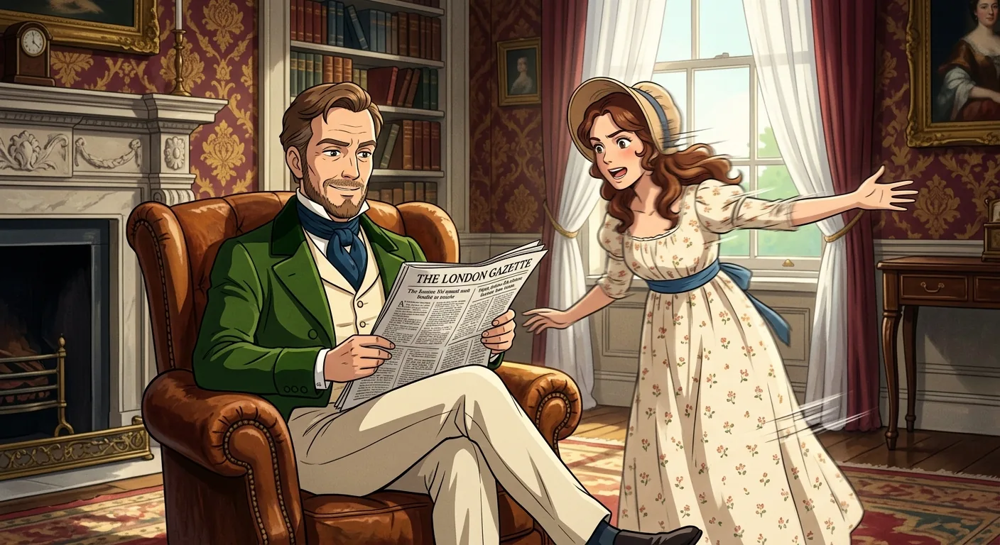
A Rich Bachelor Arrives at Netherfield
It is a truth universally acknowledged in the English countryside that any gentleman of considerable means who ventures into a new neighbourhood will find himself regarded with the keenest matrimonial interest by every family blessed—or burdened—with unmarried daughters. Such a man's own opinions on the matter of marriage are entirely beside the point; society has already determined his fate before he has so much as unpacked his trunks.
This immutable law of social nature sets into motion the domestic comedy at Longbourn, where Mrs. Bennet bursts upon her husband with news of tremendous import: Netherfield Park, that fine estate which has stood empty far too long, has at last found a tenant. The intelligence comes courtesy of Mrs. Long, and Mrs. Bennet wastes not a moment in laying the particulars before Mr. Bennet—though he has expressed no curiosity whatsoever in the matter. The new arrival, a Mr. Bingley, is young, single, and possessed of four or five thousand pounds a year. In Mrs. Bennet's estimation, this constitutes nothing less than a providential gift to her family of five unmarried daughters.
What follows is a masterful exchange between husband and wife, a verbal dance that reveals everything essential about their characters. Mrs. Bennet implores, cajoles, and very nearly demands that Mr. Bennet pay the customary first visit to their new neighbour—for without this social formality, she and her girls cannot properly make Mr. Bingley's acquaintance. Mr. Bennet, for his part, deflects her entreaties with practiced ease and no small degree of mischief, suggesting at one turn that Mrs. Bennet herself might catch the young man's eye, and at another offering to send his written blessing for Bingley to marry whichever daughter he fancies.
Throughout this sparring, Mr. Bennet reveals a particular fondness for his daughter Lizzy, praising her quickness of mind—a preference that Mrs. Bennet immediately contests, championing Jane's superior beauty and Lydia's agreeable temper instead. When Mrs. Bennet invokes her poor nerves, that familiar refrain of twenty years' standing, her husband meets the complaint with dry wit, claiming those nerves as old and respected friends.
The chapter closes with a portrait of this ill-matched pair: Mr. Bennet, a gentleman of sharp intellect and satirical disposition, whose true nature remains a mystery to his wife even after three-and-twenty years of marriage; and Mrs. Bennet, a woman of limited understanding whose singular purpose in life is seeing her daughters advantageously wed, and whose chief comforts lie in neighbourhood gossip and social calls.
Thus the stage is set, the players introduced, and the arrival of the wealthy Mr. Bingley promises to disturb the peace of the countryside in ways both amusing and consequential.
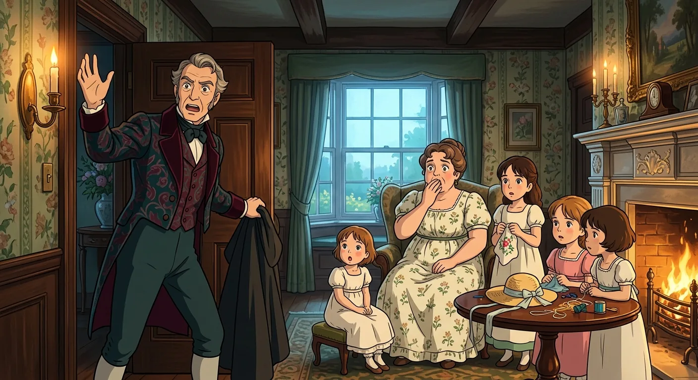
Mr. Bennet's Secret Visit Revealed
Mr. Bennet proved himself a man who delighted in quiet sport at his family's expense, having kept his own counsel regarding the matter of Mr. Bingley until the precise moment when revelation would produce the greatest effect. Though he had assured Mrs. Bennet repeatedly that he should not call upon their new neighbour—indeed, had maintained this position with such steadfastness that his wife had quite despaired of the introduction ever taking place—he had, in fact, been among the very first gentlemen of the neighbourhood to pay his respects.
The disclosure came about with characteristic cunning. Observing Elizabeth at work trimming a hat, Mr. Bennet remarked with studied casualness that he hoped Mr. Bingley would like it. His wife, still nursing her grievances on the subject, could not resist the opportunity to lament their supposed exclusion from the gentleman's acquaintance. Elizabeth offered the sensible observation that they might meet him at the assemblies through Mrs. Long's introduction, but this served only to draw Mrs. Bennet's ire toward that lady, whom she denounced as selfish and hypocritical—a woman with two nieces of her own to consider.
The conversation wound its way through Kitty's ill-timed coughing, which her mother declared an assault upon her nerves and her father observed was poorly scheduled, to the matter of the upcoming ball a fortnight hence. Mr. Bennet continued his teasing, suggesting that Mrs. Bennet might introduce Mr. Bingley to Mrs. Long rather than the reverse, and when his wife protested the impossibility of introducing a man with whom she was unacquainted, he delivered his stroke with masterful timing—offering to perform the office himself.
The ladies could only stare. Mrs. Bennet's dismissive cry of "Nonsense!" prompted her husband to elaborate further, even drawing poor Mary into the discourse, though that young lady of deep reflection found herself unable to produce anything sufficiently sensible to contribute. At last, when Mrs. Bennet declared herself sick of Mr. Bingley altogether, Mr. Bennet revealed the truth: he had called upon the gentleman that very morning, and they could not now escape the acquaintance.
The effect was everything Mr. Bennet could have wished. Mrs. Bennet's astonishment transformed swiftly into raptures, and she soon convinced herself that her persuasion had brought about her husband's compliance all along. Mr. Bennet, thoroughly fatigued by his wife's effusions, granted Kitty permission to cough as freely as she liked and quitted the room, leaving Mrs. Bennet to praise his excellence as a father and to assure young Lydia that Mr. Bingley would certainly dance with her at the next ball—a prospect that troubled Lydia not at all, for though she was the youngest, she was also the tallest.
The remainder of the evening passed in eager speculation about when Mr. Bingley might return the visit and when the family might contrive to have him to dinner.
The rest is waiting.
58 illustrated classics. Cinematic, anime, and kids editions. $4.99 a month — about the price of a coffee.
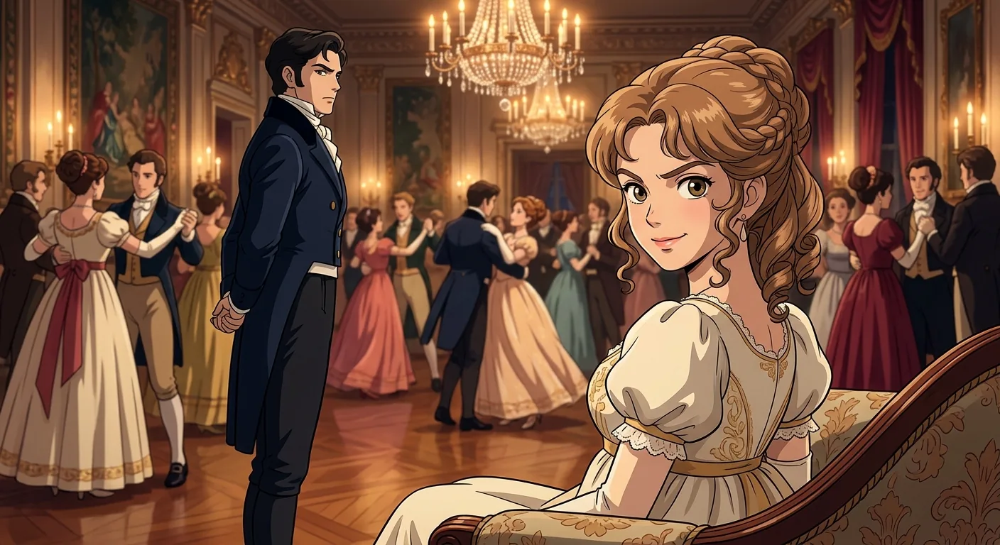
First Impressions at the Assembly Ball
Despite the combined efforts of Mrs. Bennet and all five of her daughters, no amount of questioning—whether through direct inquiry, clever speculation, or artful hints—could persuade Mr. Bennet to offer any satisfactory account of the mysterious Mr. Bingley. The man proved utterly impervious to their collective curiosity, and the ladies were forced to content themselves with intelligence gathered secondhand from their neighbour, Lady Lucas. The report proved most encouraging: Sir William had found the young gentleman delightful in every respect—wonderfully handsome, exceedingly agreeable, and, most thrillingly, resolved to attend the upcoming assembly with a large party in tow. Mrs. Bennet's hopes soared, for what could be more promising than a young man fond of dancing?
Mr. Bingley soon returned Mr. Bennet's visit, though his ten minutes in the library afforded him no glimpse of the celebrated young ladies whose beauty had reached his ears. The Bennet girls, however, managed to observe from an upper window that the gentleman wore a blue coat and rode a black horse—intelligence of the most vital importance. An invitation to dinner followed swiftly, but was regrettably declined, as Mr. Bingley found himself obliged to return to London. Mrs. Bennet's consternation was only soothed by Lady Lucas's suggestion that he had gone merely to gather a larger party for the ball.
When at last the evening of the assembly arrived, Mr. Bingley's party consisted not of the rumoured twelve ladies and seven gentlemen, but of five persons altogether: Mr. Bingley himself, his two sisters, the elder sister's husband Mr. Hurst, and another young man—Mr. Darcy. Bingley proved everything amiable, with pleasant countenance and easy manners, quickly making himself agreeable to the entire neighbourhood and dancing every dance with evident delight. His friend Mr. Darcy, however, presented a striking contrast. Though his tall figure, handsome features, and reported income of ten thousand a year initially drew considerable admiration, his proud and reserved manner soon turned opinion decidedly against him. He danced but twice, declined introductions, and spent the evening walking about with an air of superiority that rendered him thoroughly disagreeable to all present.
Elizabeth Bennet, sitting out for want of partners, overheard an exchange between the two gentlemen that sharpened her dislike considerably. When Bingley urged his friend to dance and pointed out Elizabeth herself as pretty and agreeable, Darcy glanced her way only to pronounce her merely "tolerable" and certainly not handsome enough to tempt him. Elizabeth bore the insult with characteristic spirit, relating the tale with such playful wit among her friends that the slight became more amusing than wounding.
The evening concluded happily for the Bennet family. Jane had been twice distinguished by Mr. Bingley's attentions and praised by his sisters; Mary had been mentioned as accomplished; and the younger girls had never wanted for partners. Mrs. Bennet returned home in triumphant spirits, eager to recount every particular to her husband, whose patience wore thin long before she had exhausted Bingley's dance partners or the elegance of Mrs. Hurst's lace. Her narrative concluded with bitter denunciation of Mr. Darcy's shocking rudeness, assuring Mr. Bennet that Elizabeth had lost nothing by failing to please such a proud, conceited, and altogether detestable man.
Yet first impressions, however firmly declared, have a peculiar way of shifting when circumstances—and further acquaintance—demand reconsideration.
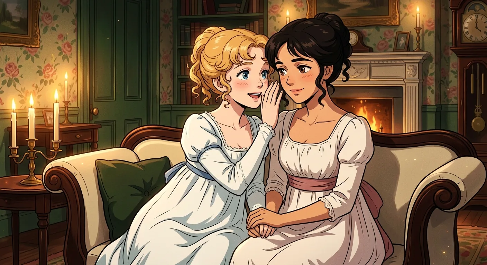
Sisters Reflect on Character and Fortune
When at last the sisters found themselves alone, Jane could no longer contain the warmth of feeling she had so carefully guarded in company. Mr. Bingley, she declared, was everything a young man ought to be—sensible, good-humoured, lively—possessed of such happy manners and perfect ease as she had rarely encountered. Elizabeth, ever ready with her playful wit, agreed heartily, adding that he was handsome besides, which rendered his character quite complete. Jane confessed herself flattered by his asking her to dance a second time, a compliment she had not anticipated. But Elizabeth would hear none of such modesty; she had fully expected it, for what could be more natural than his singling out a woman five times prettier than any other in the room?
Here the fundamental difference between the sisters revealed itself most charmingly. Elizabeth chided Jane for her eternal inclination to think well of everyone, to see no fault in any human creature, to take the good of every character and make it still better while saying nothing of the bad. Such genuine candour, Elizabeth observed, was rare indeed—for affectation of goodwill was common enough, but to be truly generous without design belonged to Jane alone. And so it followed that Jane found even Miss Bingley and Mrs. Hurst to be pleasing women, though Elizabeth listened in unconvinced silence. Her quicker observation and less pliable temper had already formed a different judgment.
The narrator then draws back the curtain upon the Bingley sisters with clear-eyed precision. They were fine ladies indeed—handsome, educated at one of the first private seminaries in town, possessed of twenty thousand pounds apiece—yet proud and conceited withal. They spent more than they ought, associated with people of rank, and were therefore entitled, in their own estimation, to think well of themselves and meanly of others. That their fortune had been acquired through trade was a circumstance they preferred to forget, though their brother's hundred thousand pounds and their own gentility rested upon that same commercial foundation.
Mr. Bingley himself had inherited his wealth from a father who intended to purchase an estate but died before accomplishing it. The son harboured similar intentions, yet those who knew his easy temper doubted whether he would ever bestir himself to act, particularly now that Netherfield suited him so admirably. His sisters wished him settled on his own land, though neither was unwilling to preside at his table in the meantime—Mrs. Hurst having married a man of more fashion than fortune, and Miss Bingley being quite content to play mistress of his household.
The friendship between Bingley and Darcy, despite their opposition of character, proved remarkably steady. Bingley's openness and ductility endeared him to the reserved, fastidious Darcy, who was undoubtedly his superior in understanding. Yet in manners, Bingley held every advantage—sure of being liked wherever he appeared, while Darcy was continually giving offence. Their differing accounts of the Meryton assembly illustrated this perfectly: Bingley had found everyone pleasant and Miss Bennet an absolute angel, while Darcy had seen only a collection of unfashionable people and declared even the acknowledged beauty smiled too much.
The Bingley sisters, though they shared Darcy's reservations, pronounced Jane a sweet girl whom they should not object to know better—and with such commendation, their brother felt himself quite authorized to think of her as he chose.
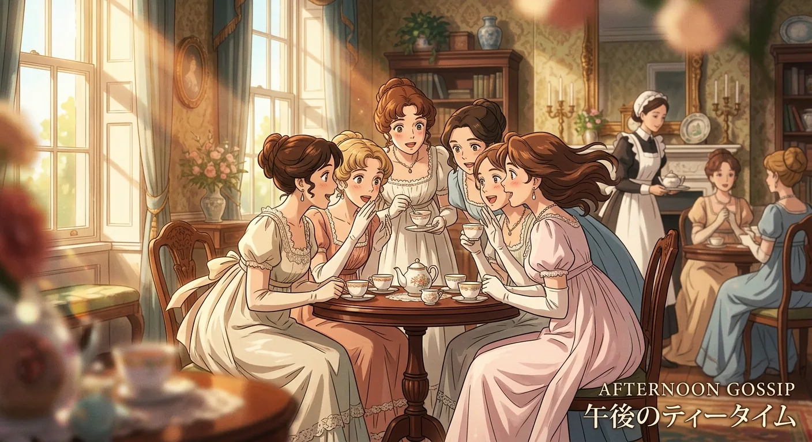
Neighbors Dissect the Ball's Events
The morning following the Meryton assembly found the Miss Lucases making their way to Longbourn, for what purpose could be more pressing than the thorough dissection of a ball? The Lucas family resided but a short distance away at Lucas Lodge, a dwelling whose very name commemorated Sir William Lucas's elevation to knighthood—a distinction bestowed during his mayoralty and one which had so thoroughly altered his view of himself that trade and market towns became insufferable to him. Having made a tolerable fortune in Meryton, Sir William now devoted himself entirely to the pleasant occupation of being civil to everyone he encountered, his presentation at St. James's having perfected what nature had already made agreeable and obliging. Lady Lucas, meanwhile, proved herself a most valuable neighbor to Mrs. Bennet by the simple virtue of not being too clever, and their eldest daughter Charlotte—a sensible young woman of seven-and-twenty—had long been Elizabeth's most intimate companion.
The conversation turned immediately to Mr. Bingley's attentions, with Mrs. Bennet acknowledging, in tones of civil restraint, that Charlotte had been his first partner. Charlotte, however, was quick to redirect praise toward Jane, revealing what she had overheard: Mr. Bingley, when pressed by Mr. Robinson to name the prettiest woman in attendance, had declared without hesitation that the eldest Miss Bennet was beyond a doubt the most handsome. Mrs. Bennet received this intelligence with characteristic vacillation between triumph and caution, allowing that it might yet come to nothing.
Charlotte then turned her wit upon Elizabeth, teasing her for being deemed merely "tolerable" by Mr. Darcy. Mrs. Bennet, ever ready to defend her daughters through attack, pronounced the gentleman so thoroughly disagreeable that his good opinion would constitute a misfortune, citing Mrs. Long's account of his sitting beside her for half an hour without uttering a syllable. Jane, characteristically gentle, ventured to suggest there might be some mistake, and offered Miss Bingley's explanation that Mr. Darcy spoke little except among intimate acquaintance. This defense Mrs. Bennet dismissed entirely, attributing his behavior to insufferable pride—perhaps, she speculated, he had learned that Mrs. Long arrived in a hack chaise rather than a private carriage.
When Charlotte expressed her wish that Darcy had danced with Elizabeth, and Mrs. Bennet counseled her daughter to refuse him should the opportunity arise, Elizabeth readily promised never to dance with him at all. Yet Charlotte offered a measured perspective: a young man possessed of family, fortune, and every advantage might reasonably think well of himself. Elizabeth's reply carried the evening's sharpest insight—she could forgive his pride readily enough, had it not wounded her own.
Mary, ever eager to display her philosophical bent, delivered a ponderous distinction between pride and vanity, while young Master Lucas declared that were he as rich as Darcy, he should keep foxhounds and drink a bottle of wine daily—a pronouncement that devolved into a spirited dispute with Mrs. Bennet over the propriety of such consumption, which argument occupied the remainder of the visit.
As the Lucas family departed, the neighborhood's judgment of Mr. Darcy had been thoroughly established, though whether that judgment might prove as fixed as it now appeared remained yet to be seen.
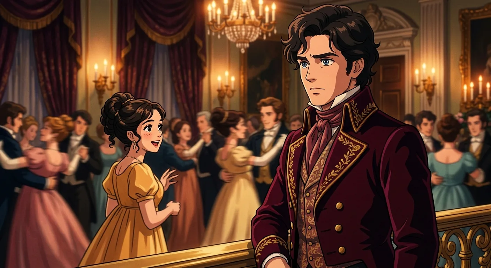
Guarded Hearts and Shifting Glances
The acquaintance between the families of Longbourn and Netherfield progressed with all the ceremony that neighbourhood custom required. The Bennet ladies paid their visit, and it was duly returned, though the Bingley sisters found little to admire beyond the two eldest Miss Bennets—the mother being judged quite intolerable and the younger girls beneath notice. Jane received their attentions with her characteristic warmth and gratitude, ever ready to think well of those who showed her any kindness. Elizabeth, however, perceived the superciliousness that coloured their every interaction, and she could not bring herself to like them, though she acknowledged their civility to Jane had some merit, arising as it most likely did from their brother's evident admiration.
That Mr. Bingley admired Jane was plain to anyone with eyes to see, and Elizabeth observed with sisterly satisfaction that Jane was yielding to a preference of her own. Yet Elizabeth took comfort in knowing her sister's composure and steady cheerfulness would shield her growing attachment from the prying speculations of the neighbourhood. When she confided this observation to Charlotte Lucas, her friend offered a markedly different philosophy on the matter. Charlotte counselled that concealment, however pleasant for one's dignity, might prove a disadvantage—that a woman who hides her feelings too well risks losing her chance altogether. Encouragement, she argued, was necessary to secure a man's affections, for vanity and gratitude played their parts in every attachment.
Elizabeth disputed this mercenary view with spirit, insisting that Jane's nature would not permit such calculated display, and that a fortnight's acquaintance was hardly sufficient to understand any man's true character. Charlotte countered with her own brand of pragmatic wit, suggesting that happiness in marriage was entirely a matter of chance, and that prolonged study of a partner's disposition offered no particular advantage. Elizabeth laughed at her friend's cynicism, certain Charlotte could never act upon such principles herself.
While Elizabeth busied herself observing Bingley's attentions to Jane, she remained entirely unaware that she had become an object of interest to another quarter. Mr. Darcy, who had at first dismissed her as barely tolerable, found himself drawn against his will to the intelligence sparkling in her dark eyes and the easy playfulness of her manner. What began as criticism transformed, imperceptibly, into fascination. He attended to her conversations, drew near when she spoke, and at Sir William Lucas's gathering, his scrutiny did not escape her notice.
When Sir William attempted to press them into dancing together, Elizabeth refused with cheerful firmness, unwilling to accept what she supposed would be a reluctant partner. Yet Darcy had not been unwilling at all—and when Miss Bingley later attempted to draw him into contempt for the evening's company, she found him quite otherwise engaged. He confessed, with something like defiance, that he had been contemplating the very great pleasure a pair of fine eyes in a pretty woman's face could bestow—and those eyes belonged to Miss Elizabeth Bennet.
Miss Bingley's astonishment gave way to teasing prophecies of matrimony and warnings of Mrs. Bennet as a mother-in-law, but Darcy received her barbs with perfect composure, betraying nothing. And so the evening closed, with admiration stirring where none had been expected, and schemes of the heart beginning to take shape beneath the surface of civil society.
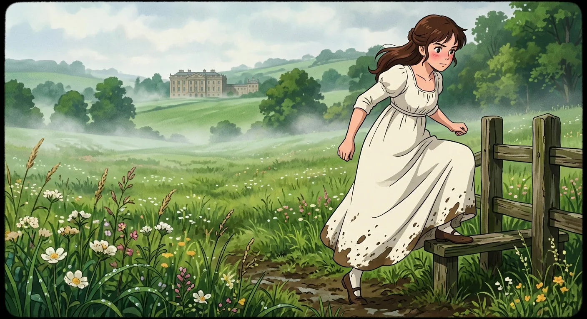
Officers, Entails, and a Fateful Invitation
The fortunes of the Bennet family rested upon precarious ground, for Mr. Bennet's estate of two thousand a year was entailed away from his daughters to a distant male relation, and Mrs. Bennet's own inheritance—four thousand pounds left by her father, a Meryton attorney—could scarcely make up the difference. Her connexions were modest but respectable: a sister married to Mr. Philips, who had taken over her father's legal practice, and a brother established in trade in London.
The village of Longbourn lay but a mile from Meryton, a distance the young Bennet ladies found most agreeable for their frequent visits to their aunt Philips and the milliner's shop across the way. Catherine and Lydia, the two youngest, proved especially devoted to these excursions, their minds being rather more vacant than their elder sisters' and therefore more easily diverted by local gossip. Their current source of fascination—indeed, of rapture—was the militia regiment newly quartered in Meryton for the winter. Every visit to their aunt yielded fresh intelligence regarding the officers' names, lodgings, and connexions, until Mr. Bingley's considerable fortune became utterly insignificant compared to the regimentals of an ensign.
Mr. Bennet, having endured one morning's worth of their effusions, observed with characteristic dryness that his two youngest daughters must be among the silliest girls in the country. Catherine fell silent at this rebuke, but Lydia continued her raptures over Captain Carter quite undisturbed. Mrs. Bennet rose to their defence with predictable indignation, insisting all her children were clever, and confessing she still harboured a fondness for a red coat herself—particularly if attached to a colonel with five or six thousand a year.
Their discourse was interrupted by a note from Netherfield. Jane read aloud Miss Bingley's invitation to dine, the gentlemen being engaged with the officers. Mrs. Bennet's scheming mind seized upon opportunity: she refused Jane the carriage, insisting she ride horseback despite the threatening weather, calculating that rain would necessitate an overnight stay. Elizabeth perceived her mother's design but could not prevent it, and Jane departed on horseback beneath her mother's cheerful prognostications of foul weather.
The rain obliged magnificently. Mrs. Bennet congratulated herself repeatedly on her clever contrivance, though the full extent of her success remained unknown until morning, when a note arrived announcing Jane had fallen ill from her soaking. Mr. Bennet remarked acidly that should their daughter die, at least it would be in pursuit of Mr. Bingley and under Mrs. Bennet's orders—a barb his wife deflected with blithe unconcern.
Elizabeth, genuinely anxious, resolved to walk the three miles to Netherfield, dismissing her mother's objections about dirt and propriety. She set off with Catherine and Lydia, who accompanied her as far as Meryton before peeling away to seek glimpses of officers. Elizabeth continued alone, crossing fields and leaping stiles with impatient energy, arriving at Netherfield with muddy stockings, weary ankles, and a complexion glowing from exertion.
Her appearance scandalised Miss Bingley and Mrs. Hurst, though Mr. Bingley received her with genuine kindness, and Mr. Darcy found himself caught between admiration for her brightened complexion and doubt regarding the propriety of such an expedition. Jane proved feverish and unwell, and when the apothecary confirmed a violent cold, Elizabeth remained devotedly at her sister's side. By three o'clock, when Elizabeth reluctantly prepared to depart, Jane's distress at parting prompted Miss Bingley to convert her offer of a carriage into an invitation to stay—and so Elizabeth found herself settled at Netherfield, a servant dispatched home for her clothes, while her sister lay ill upstairs and the household dynamics shifted into unfamiliar territory.
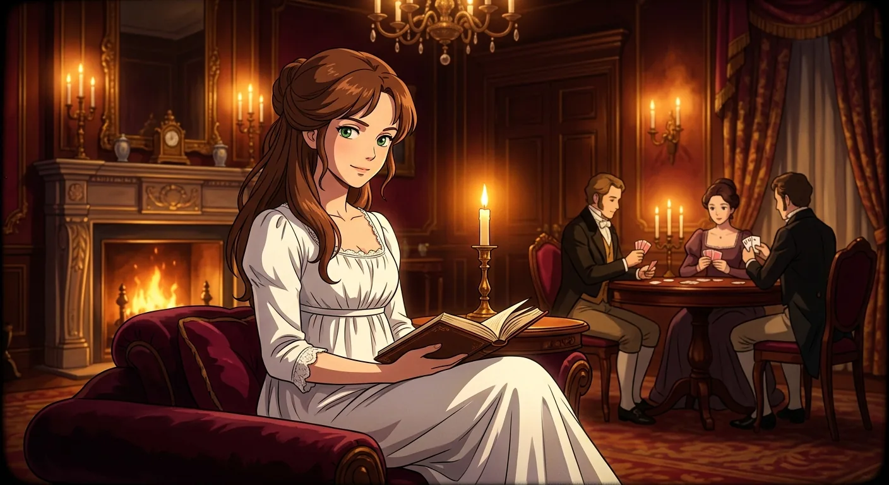
Mud, Manners, and Fine Eyes
The evening at Netherfield unfolds with all the subtle warfare of drawing-room society, where civilities mask indifference and compliments conceal contempt. When Elizabeth descends to dinner at half-past six, she finds herself the subject of polite inquiries regarding Jane's health—though only Mr. Bingley's concern carries any genuine weight. His sisters, upon hearing that Jane remains unwell, perform their obligatory expressions of sympathy with such theatrical excess that the hollowness of their sentiments stands quite exposed. Their indifference, the moment Jane ceases to be the topic at hand, restores Elizabeth most completely to her original dislike of them both.
Indeed, Mr. Bingley proves the sole member of the party whose company Elizabeth can tolerate with any degree of pleasure. His evident anxiety for Jane and his attentions to herself provide some comfort against the unmistakable sense that she is regarded as an intruder by everyone else present. Miss Bingley remains wholly engrossed by Mr. Darcy, her sister scarcely less so, while Mr. Hurst—an indolent creature who lives only to eat, drink, and play at cards—dismisses Elizabeth entirely upon discovering she prefers plain dishes to ragouts.
The moment Elizabeth quits the dining room to attend her sister, the abuse commences with remarkable swiftness. Her manners are pronounced very bad indeed—a mixture of pride and impertinence—and she is declared wanting in conversation, style, taste, and beauty. Mrs. Hurst recalls with horror Elizabeth's wild appearance that morning, her muddy petticoat six inches deep in filth. Yet Mr. Bingley offers gentle resistance to his sisters' cruelty, declaring Elizabeth looked remarkably well, and when Miss Bingley attempts to enlist Mr. Darcy in condemning Elizabeth's conceited independence, he observes instead that her fine eyes were brightened by the exercise—a remark that produces a telling silence.
The sisters shift their attack to Jane's unfortunate connections, lamenting her uncles in trade—one an attorney in Meryton, another residing near Cheapside. Though Bingley protests that such relations would not make the Bennets one jot less agreeable, Darcy coolly agrees that their connections must materially lessen any chance of marrying men of consideration.
Later that evening, Elizabeth declines an invitation to join the party at cards, preferring instead to occupy herself with a book—a choice that astonishes Mr. Hurst utterly. The conversation turns to accomplishments, with Miss Bingley and Darcy constructing between them an impossible standard of female achievement that Elizabeth challenges with characteristic wit, remarking that she has never encountered such a paragon as they describe. Miss Bingley, once Elizabeth departs, accuses her of deliberately undervaluing her own sex to recommend herself to men—though Darcy's response, condemning all arts of cunning captivation, leaves Miss Bingley less than satisfied.
The evening concludes with news that Jane has worsened. While Bingley urges that the apothecary be sent for, his sisters recommend summoning an eminent physician from London—though their wretchedness finds adequate solace in duets after supper, while Bingley can only ease his feelings by ensuring every possible attention be paid to the sick lady and her devoted sister.
As night settles over Netherfield, the battle lines between genuine feeling and fashionable pretense grow ever more distinct, and Elizabeth's continued presence promises further occasion for both conflict and unexpected alliance.
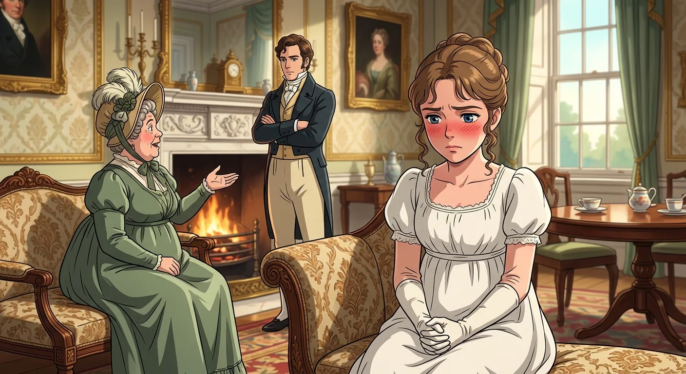
Mrs. Bennet's Triumphant Visit to Netherfield
Elizabeth passed the greater portion of that restless night at Jane's bedside, watchful and attentive, and by morning found herself able to return a tolerably hopeful answer to Mr. Bingley's early inquiries, delivered first through a housemaid and subsequently through the two elegant ladies attending his sisters. Yet despite this improvement in Jane's condition, Elizabeth thought it prudent to send a note to Longbourn, requesting her mother come and judge the situation for herself. Mrs. Bennet arrived with admirable swiftness, bringing in her wake the two youngest Bennet girls, and descended upon Netherfield shortly after the family had breakfasted.
Upon finding Jane in no immediate danger, Mrs. Bennet's spirits lifted considerably—though not so much that she wished for her daughter's speedy recovery. Such restoration to health would only hasten Jane's removal from Netherfield, and from Mr. Bingley's most attentive company. She therefore dismissed all talk of carrying Jane home, a position conveniently supported by the apothecary who arrived around the same time. When Miss Bingley appeared and invited the party into the breakfast parlour, Mrs. Bennet seized the opportunity with characteristic enthusiasm, declaring to Mr. Bingley that Jane was far too ill to be moved and they must trespass upon his kindness a while longer. Bingley, ever amiable, insisted removal was not to be thought of, while Miss Bingley offered her assurances of every possible attention with a civility as cold as it was correct.
What followed was an exercise in mortification for Elizabeth. Her mother, profuse in her thanks, launched into a rambling discourse that touched upon Jane's sweetness of temper, the superiority of Netherfield's views, and her fervent hope that Mr. Bingley would not quit the neighbourhood. When the conversation turned to the study of character, Elizabeth found herself engaged in a lively exchange with Bingley, defending the pleasures of observing human nature even in confined country society. Mr. Darcy's cool remark that country neighbourhoods offered little variety for such study drew Mrs. Bennet's immediate offense, and she proceeded to champion the country with an enthusiasm that made Elizabeth blush with embarrassment. Her mother's triumph over what she perceived as Darcy's defeat was complete, though Darcy merely turned silently away.
The conversation grew no less painful as Mrs. Bennet disparaged Charlotte Lucas's plainness while boasting of Jane's beauty, recounting tales of past admirers and verses written in her honour. Elizabeth's sharp observation about poetry driving away love rather than nourishing it prompted a rare moment of agreement with Darcy, who suggested poetry was the food of love—to which Elizabeth cleverly replied that while strong love might be nourished by verse, a slight inclination would be starved entirely by one good sonnet. Darcy could only smile in response.
Before departing, young Lydia, bold and assured at fifteen, reminded Mr. Bingley of his promise to give a ball at Netherfield. He graciously confirmed he would keep his engagement once Jane recovered, inviting them to name the very day. Satisfied, Mrs. Bennet collected her daughters and departed, leaving Elizabeth to return instantly to Jane's side—and leaving her own conduct and that of her relations to the critical remarks of Miss Bingley and Mr. Darcy, the latter of whom, notably, refused to join in any censure of Elizabeth herself, despite all of Miss Bingley's pointed witticisms regarding certain fine eyes.
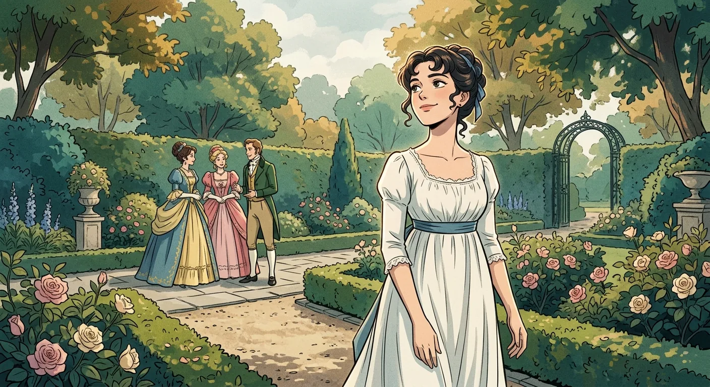
Wit and Words in the Drawing Room
The day at Netherfield unfolded much as its predecessor had done, with Mrs. Hurst and Miss Bingley dutifully attending the invalid Jane, who continued her gradual recovery. When evening drew the party together in the drawing-room, Elizabeth found herself an observer of a most diverting scene. Mr. Darcy sat composing a letter while Miss Bingley hovered nearby, showering him with excessive compliments on his penmanship, his even lines, and the impressive length of his correspondence—all of which he received with perfect indifference. Elizabeth watched their exchange with quiet amusement, finding in it confirmation of her opinions regarding both parties.
The conversation soon expanded when Mr. Bingley teased Darcy about his laboured writing style, prompting Elizabeth to remark upon Bingley's disarming humility. Darcy, however, proved less charmed, declaring that humility often masked mere carelessness or served as an indirect boast. What followed was a spirited philosophical debate between Elizabeth and Darcy on the nature of persuasion and conviction. When Darcy suggested that yielding to a friend's request without proper argument showed weakness of understanding, Elizabeth countered that he allowed nothing for the influence of friendship and affection—that regard for another might reasonably prompt compliance without demanding logical justification.
Bingley, ever good-natured but uncomfortable with such intellectual sparring, begged them to defer their argument until he had quit the room, joking that Darcy's imposing height alone commanded his deference. Elizabeth graciously ended the debate, suggesting Mr. Darcy finish his letter, which he did.
The evening continued with music. Miss Bingley performed at the pianoforte with her sister, and Elizabeth could not help noticing how frequently Mr. Darcy's gaze fell upon her. She could scarcely believe herself an object of admiration to so proud a man and concluded instead that something in her manner must strike him as particularly objectionable. The thought troubled her not at all—she cared too little for his good opinion to feel its absence.
When a lively Scotch air prompted Darcy to enquire whether Elizabeth felt inclined to dance a reel, she surprised him with her refusal, declaring she would not give him the satisfaction of despising her taste. Her archness and spirit left Darcy more bewitched than ever; indeed, he privately acknowledged that were it not for her inferior connections, he might find himself in some danger.
Miss Bingley, sensing this growing attachment, grew jealous and desperate. The following day, while walking with Darcy in the shrubbery, she attempted to provoke his disdain for Elizabeth by mockingly anticipating their marriage—offering impertinent advice about managing Elizabeth's vulgar relations. Darcy, however, refused to be baited, even admitting the remarkable beauty of Elizabeth's eyes.
Their private conference was interrupted when Mrs. Hurst and Elizabeth appeared on another path. The ladies arranged themselves rudely, leaving Elizabeth to walk alone, but she merely laughed and excused herself with graceful wit, delighting in the prospect of returning home soon—for Jane had recovered sufficiently to leave her room that very evening.
With Jane's health improving and her own observations of Netherfield's inhabitants proving increasingly illuminating, Elizabeth looked forward to quitting the estate and all its curious entanglements.
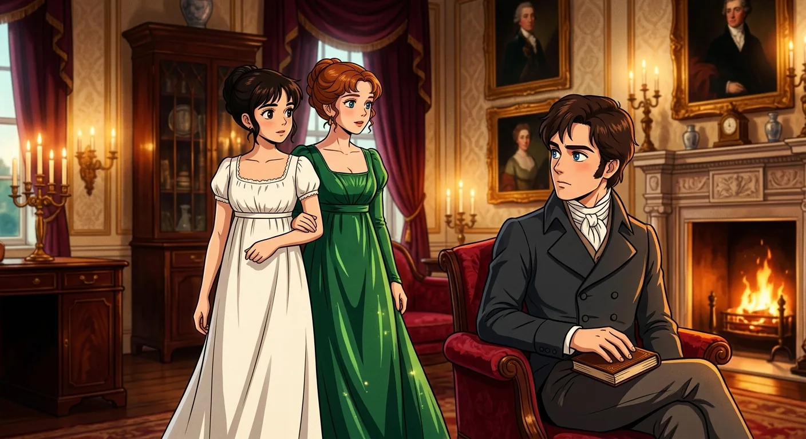
An Evening of Artful Pursuits
The evening began pleasantly enough when Elizabeth accompanied her recovering sister to the drawing-room, where Miss Bingley and Mrs. Hurst proved themselves capable of agreeable conversation—at least until the gentlemen arrived. The moment Mr. Darcy entered, Miss Bingley's attention shifted with almost comical swiftness, and Jane became merely part of the furniture. Mr. Bingley, however, remained devoted to his invalid guest, fussing over the fire and repositioning her chair with such tender solicitude that Elizabeth, watching from her corner, could scarcely contain her satisfaction at the promising scene unfolding before her.
The card-table was suggested and promptly dismissed, Miss Bingley having discovered that Darcy wished no part in such amusement. Poor Mr. Hurst found himself with nothing to do but stretch upon a sofa and drift into slumber. Darcy took up a book, and Miss Bingley, ever attentive to his pursuits, selected the second volume of his own reading material—though her eyes wandered far more frequently to his page than to her own. Her attempts at engaging him in conversation met with polite indifference, and she soon abandoned all pretense of literary interest, declaring with magnificent irony how delightful reading was and how wretched she would be without an excellent library of her own.
When talk of a ball at Netherfield arose between Bingley and Jane, Miss Bingley attempted to quash the idea, suggesting that some present company might find dancing a punishment rather than a pleasure. Her brother dismissed her objections with cheerful determination—the ball was settled, and Darcy could take himself to bed if he objected. Undeterred, Miss Bingley tried another approach, parading about the room in hopes of capturing Darcy's notice. Failing still, she enlisted Elizabeth in her scheme, inviting her to take a turn about the room.
This stratagem proved more successful. Darcy looked up, closed his book, and offered his observation that the ladies must either have secrets to discuss or wished to display their figures to advantage. What followed was a sparring match between Elizabeth and Darcy that crackled with wit and mutual provocation. She accused him of being impossible to laugh at; he suggested that those who make everything a joke render even wisdom ridiculous. She pressed him on pride and vanity; he distinguished between the two with careful self-assurance. When he confessed his temper to be resentful, his good opinion once lost being lost forever, Elizabeth declared it a fault indeed—though one she could not laugh at.
Their exchange culminated in a pointed thrust from each: she accused him of hating everybody; he countered that her defect was willfully misunderstanding them. Miss Bingley, finding herself excluded from a conversation that had grown rather too intimate for her liking, called for music. And Darcy, after a moment's reflection, found himself grateful for the interruption—for he was beginning to recognize the danger of attending too closely to Elizabeth Bennet.
As the pianoforte was opened and Mr. Hurst roused from his slumber, the evening's strange alchemy of attraction and resistance settled into safer entertainments, though the undercurrents between Elizabeth and Darcy had only grown stronger.
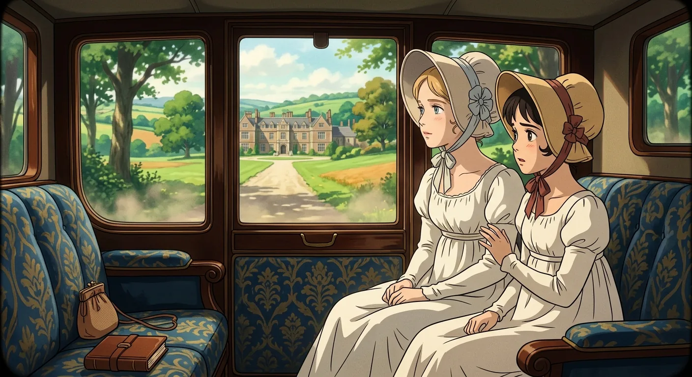
Departures and Guarded Hearts
The morning following their sisterly conference, Elizabeth put pen to paper, requesting that their mother send the carriage to retrieve them from Netherfield. Mrs. Bennet, however, had made her own calculations on the matter—calculations that extended precisely to the following Tuesday, which would round out a full week since Jane had first taken ill. The notion of receiving her daughters any sooner held no appeal whatsoever. Her response proved as unhelpful as Elizabeth had feared: the carriage could not possibly be spared before Tuesday, and should Mr. Bingley and his sister express any desire for their continued presence, Mrs. Bennet could manage quite well without them at Longbourn.
Elizabeth found herself entirely unmoved by her mother's schemes. She remained steadfast in her determination to quit Netherfield at the earliest opportunity, convinced that prolonging their stay would render them unwelcome guests rather than cherished visitors. She pressed Jane to request the use of Mr. Bingley's carriage at once, and it was agreed that their intention to depart that very morning should be made known.
The announcement produced the expected expressions of regret—sufficient, at least, to work upon Jane's tender sensibilities. Their departure was consequently postponed until the morrow, a delay that Miss Bingley immediately came to rue. Her dislike of Elizabeth far outweighed any sisterly affection she might profess for Jane, and another day of Elizabeth's company proved a poor exchange indeed. Mr. Bingley himself heard the news with genuine disappointment, making repeated attempts to convince Jane that her health remained too fragile for travel. But Jane, when certain of her own judgment, could not be swayed.
For Mr. Darcy, however, the intelligence came as something of a relief. Elizabeth had remained at Netherfield quite long enough—long enough, in truth, to attract him rather more than he found comfortable. Miss Bingley's pointed incivility toward Elizabeth, combined with her increasingly tiresome attentions to himself, had rendered the situation altogether disagreeable. He resolved with considerable wisdom to betray no sign of admiration in these final hours, nothing that might elevate Elizabeth's expectations regarding his affections. Throughout Saturday he maintained his guard, speaking scarcely ten words to her, and when circumstance left them alone together for half an hour, he devoted himself most conscientiously to his book, refusing even to glance in her direction.
Sunday morning brought the parting that suited nearly everyone's purposes. Miss Bingley's civility toward Elizabeth underwent a remarkable improvement as their departure grew imminent, her warmth toward Jane becoming positively effusive. She embraced Jane tenderly, assured her of the perpetual pleasure her company would bring, and even condescended to shake Elizabeth's hand. Elizabeth, for her part, departed in excellent spirits.
Their reception at Longbourn proved considerably less enthusiastic. Mrs. Bennet expressed bewilderment at their early return, pronouncing them quite wrong to have caused such inconvenience, and declared herself certain that Jane would catch cold once more. Mr. Bennet, though characteristically spare in his expressions of pleasure, was genuinely gratified by their return—the family circle had suffered markedly in their absence, the evening conversations having lost both their wit and their substance. Mary remained absorbed in her studies of music and morality, while Catherine and Lydia bubbled over with news of an altogether different nature: officers dining with their uncle, a private flogged, and tantalizing whispers that Colonel Forster himself might soon marry.
The Bennet sisters had returned to the familiar rhythms of home, though certain attachments formed at Netherfield would prove rather more difficult to leave behind.
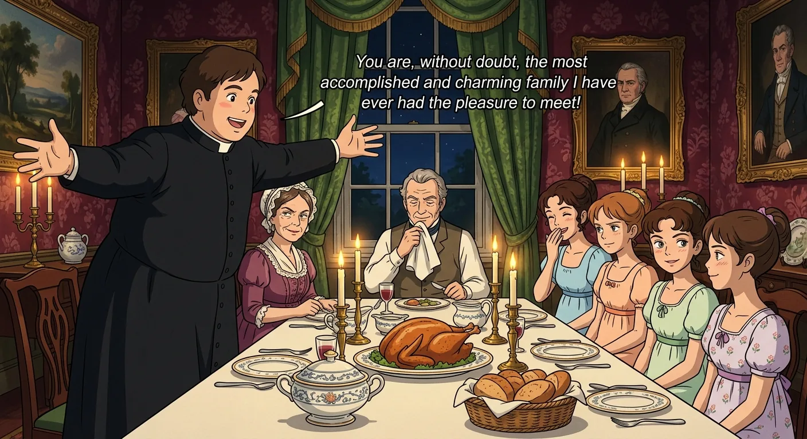
The Arrival of Mr. Collins
The quiet of breakfast at Longbourn was disturbed most agreeably when Mr. Bennet announced, with that dry pleasure he took in provoking his wife's nerves, that they might expect an addition to their party that very day. Mrs. Bennet's imagination flew at once to Mr. Bingley, and she was already lamenting the want of fish and calling for the housekeeper when her husband corrected her—the visitor was not Bingley, but a perfect stranger, a man he had never laid eyes upon in his life.
This intelligence produced a flurry of curiosity among the assembled ladies, which Mr. Bennet indulged for some time before revealing the truth. The expected guest was none other than Mr. Collins, his cousin and heir, the very man destined by the cruel workings of the entail to inherit Longbourn and cast its present inhabitants into the hedgerows upon Mr. Bennet's death. Mrs. Bennet could scarcely hear the name without launching into bitter complaints against the injustice of entails—a subject upon which neither Jane nor Elizabeth's patient explanations could make the slightest impression.
Mr. Bennet then read aloud the letter Mr. Collins had sent, a remarkable document whose every line dripped with obsequious self-satisfaction. The young clergyman expressed his desire to heal the breach between their families, cited his recent ordination and his great fortune in securing the patronage of the illustrious Lady Catherine de Bourgh, and hinted mysteriously at making amends to the Bennet daughters for the injury of his inheritance. He proposed arriving that very Monday at four o'clock and staying until the following Saturday—a plan he assured them Lady Catherine would graciously permit.
The family's reactions to this epistle varied considerably. Jane charitably supposed his intentions must be good. Elizabeth, with her sharper eye, observed his excessive deference to Lady Catherine and pronounced him an oddity whose letter betrayed both servility and pomposity in equal measure. Mr. Bennet confessed great hopes of finding him quite absurd. Mary approved the composition. Catherine and Lydia, whose interests ran exclusively toward officers in regimentals, found nothing whatever to engage their attention in a mere clergyman cousin.
Mr. Collins arrived punctually—a tall, heavy young man of five-and-twenty with grave airs and formal manners. He wasted no time in complimenting Mrs. Bennet on her fine daughters, declaring that fame had understated their beauty and expressing confidence that they would all be well married. When Mrs. Bennet alluded to the painful matter of the entail, he responded with mysterious hints about coming prepared to admire his fair cousins, promising to say more when better acquainted.
His admiration extended beyond the young ladies to encompass the hall, the dining-room, and every article of furniture—praise that might have pleased Mrs. Bennet had she not suspected he was merely surveying his future property. At dinner, his commendation of the meal led him to inquire which cousin had prepared it, an error Mrs. Bennet corrected with some sharpness. Though she soon declared herself unoffended, Mr. Collins continued his apologies for a quarter of an hour, revealing himself to be precisely the mixture of absurdity and self-importance that promised considerable entertainment for the days ahead.
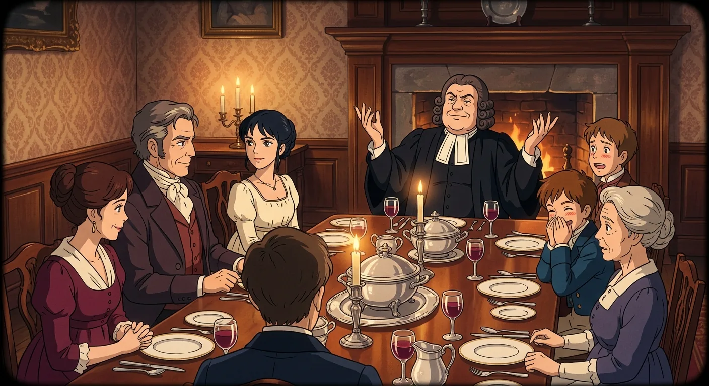
Mr. Collins Praises His Noble Patroness
Dinner at Longbourn passed in relative silence, but when the servants withdrew, Mr. Bennet found himself at last prepared to draw out his curious guest on a subject certain to produce the most entertaining results. He had merely to mention Lady Catherine de Bourgh, and Mr. Collins required no further encouragement to launch into rapturous praise of his noble patroness.
With an air of profound importance, the clergyman catalogued Lady Catherine's many condescensions toward his humble person. She had graciously approved his sermons—both of them—and had twice invited him to dine at Rosings. More remarkably still, she had summoned him only the previous Saturday to complete her card table for quadrille. Though many considered her proud, Mr. Collins had witnessed nothing but the most generous affability. Her ladyship treated him as she would any gentleman, raised no objection to his mingling with the neighbourhood, and even permitted him to leave his parish for visits to relations. She had counselled him to marry with discretion, and had once descended upon his parsonage to inspect and approve his domestic improvements—going so far as to suggest shelves for the closets upstairs.
Mrs. Bennet, ever alert to matters of eligible young ladies and their fortunes, soon steered the conversation toward Miss de Bourgh. She learned that Lady Catherine's only daughter stood as heiress to Rosings and extensive property besides—a circumstance that prompted Mrs. Bennet's envious observation that the girl was better off than many. As for Miss de Bourgh's person, Mr. Collins assured them she was charming indeed, her mother declaring her beauty superior to all her sex, marked as it was by the distinction of noble birth. A sickly constitution had regrettably hindered her accomplishments, yet she remained perfectly amiable, often condescending to drive her phaeton past his humble abode.
Mr. Collins then revealed, with evident satisfaction, his talent for paying delicate compliments—having told Lady Catherine that Miss de Bourgh seemed born to be a duchess, and that the highest rank would be adorned rather than elevated by her presence. Mr. Bennet, barely suppressing his amusement, inquired whether such pleasing attentions arose spontaneously or through careful preparation. The clergyman confessed that while his compliments generally sprang from the moment, he did occasionally arrange elegant phrases for ordinary occasions, always striving to give them an unstudied air.
Mr. Bennet's expectations were fully answered. His cousin proved precisely as absurd as hoped, and he listened with keen enjoyment while maintaining perfect composure, sharing his private pleasure only through occasional glances at Elizabeth.
By tea-time, however, even Mr. Bennet had absorbed sufficient entertainment. When he invited Mr. Collins to read aloud, the clergyman recoiled from a novel as though it were contaminated, selecting instead Fordyce's Sermons. His droning monotony had scarcely survived three pages before Lydia interrupted with gossip about her uncle's manservant and the officers. Though her elder sisters silenced her, Mr. Collins took offence, lamenting that young ladies cared nothing for improving literature. He abandoned the book and challenged Mr. Bennet to backgammon instead, while the family offered civil apologies that did nothing to restore him to his sermon.
As the two men settled at the backgammon table, Mr. Collins nursing his wounded dignity and Mr. Bennet quietly relishing the evening's absurdities, it became clear that the clergyman's visit would continue to supply amusement—though perhaps of a rather trying variety for some members of the household.
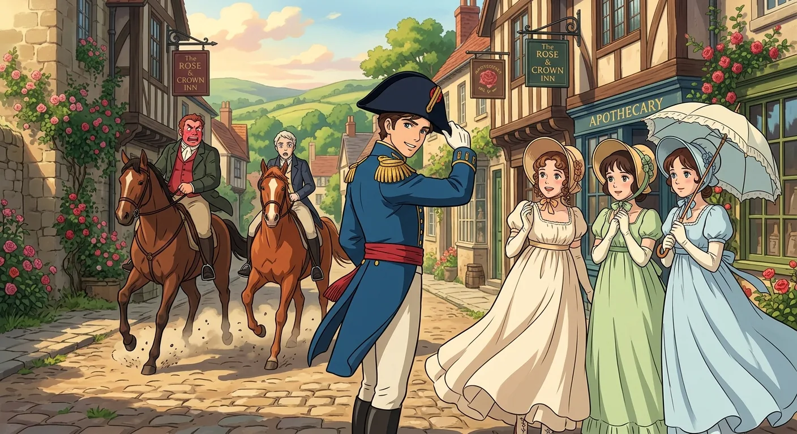
Mr Collins Shifts His Sights to Elizabeth
Mr. Collins, it must be understood, was a man whose natural deficiencies of sense had never found remedy through education or society. Raised beneath the heavy hand of an illiterate, miserly father and having passed through university without forming a single useful connection, he had emerged into the world with a peculiar disposition—a strange compound of inherited humility and newfound self-conceit. His good fortune in securing the patronage of the great Lady Catherine de Bourgh had only compounded this curious mixture, rendering him at once obsequious and proud, deferential and self-important, in measures that shifted as readily as the weather.
Now possessed of a comfortable living and a respectable income, Mr. Collins had turned his thoughts to matrimony, and with characteristic self-satisfaction, had devised what he considered a most generous scheme: he would marry one of his Bennet cousins, thereby making amends for the entail that would one day deprive them of their home. That he considered this plan excessively noble and disinterested speaks volumes of his character.
Upon first laying eyes on the Bennet daughters, his choice fell naturally upon Jane, whose lovely countenance satisfied both his notions of beauty and his respect for seniority. Yet this settled intention survived only until breakfast the following morning, when a brief private conversation with Mrs. Bennet altered everything. With complaisant smiles and artful hints, that scheming mother steered him away from Jane—who was, she intimated, soon to be engaged—and toward her second daughter. Thus, with no more ceremony than it took Mrs. Bennet to stir the fire, Mr. Collins transferred his matrimonial ambitions from Jane to Elizabeth. Mrs. Bennet, delighted by this turn, found herself suddenly well-disposed toward the man she could scarcely tolerate the day before, already envisioning two daughters advantageously married.
The chapter's second movement carries the party to Meryton, where Mr. Bennet, desperate to reclaim the sanctuary of his library from Mr. Collins's relentless prattle about parsonages and gardens, dispatched his cousin to accompany the young ladies on their walk. There, amid the familiar pursuits of bonnet-gazing and officer-watching, the Bennet sisters encountered a stranger of most striking appearance—a Mr. Wickham, newly arrived from London with a commission in the regiment. His countenance was handsome, his figure pleasing, his conversation easy and unassuming, and the younger ladies were instantly captivated.
Yet the chapter's most intriguing moment came when Darcy and Bingley rode into view. As greetings were exchanged, Elizabeth observed something remarkable: upon catching sight of Wickham, both men changed colour—one turning white, the other red—and their mutual salutation was barely civil. The meaning of this charged encounter remained wholly mysterious, though impossible not to wonder at.
The party concluded their visit at Aunt Philips's house, where arrangements were made for an evening gathering that would include the fascinating Mr. Wickham. As Elizabeth walked home with Jane, she recounted the strange scene between Darcy and the newcomer, but neither sister could account for it.
Whatever history lay between those two gentlemen, it seemed certain to reveal itself before long.
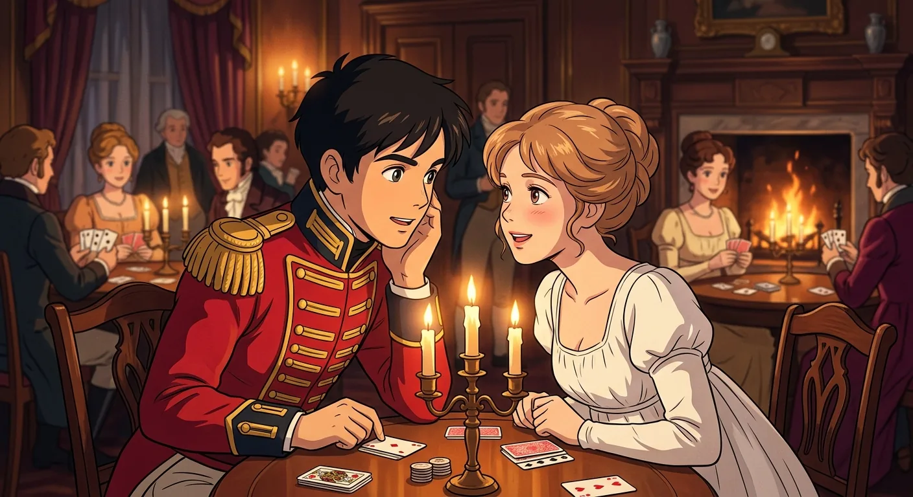
Wickham's Charming Revelations Begin
The evening at Mrs. Philips's house in Meryton began with a coach journey that conveyed Mr. Collins and his five cousins to their aunt's dwelling, where the young ladies learned with considerable pleasure that Mr. Wickham had accepted the invitation and was already present. Upon entering the drawing-room, Mr. Collins found himself so thoroughly impressed by the size and furnishings of the apartment that he declared it might almost rival the small summer breakfast parlour at Rosings—a comparison that initially puzzled Mrs. Philips until she understood the magnificence of Lady Catherine de Bourgh's estate, whereupon she received the compliment with gratified delight and listened with rapt attention to every detail of grandeur her guest could supply.
While Mr. Collins happily occupied himself in describing Lady Catherine's splendours and his own humble improvements at Hunsford, the young ladies endured tedious minutes examining china on the mantelpiece until the gentlemen finally arrived. When Mr. Wickham entered the room, Elizabeth found herself struck anew by his superior appearance—his person, countenance, and manner far exceeding those of the other officers, who themselves stood leagues above the broad-faced, port-wine-breathing Mr. Philips.
Mr. Wickham became the happy man towards whom nearly every female eye turned, and Elizabeth became the happy woman beside whom he chose to seat himself. Their conversation, though beginning with nothing more remarkable than observations about wet weather, proved engaging through his evident skill as a speaker. When card tables were arranged, Mr. Collins obliged Mrs. Philips by joining the whist party, while Mr. Wickham positioned himself at the other table between Elizabeth and Lydia. The latter's enthusiasm for lottery tickets soon absorbed her entirely, leaving Wickham at leisure to converse with Elizabeth on matters far more interesting than games of chance.
He himself broached the subject Elizabeth most wished to discuss—his acquaintance with Mr. Darcy. With careful hesitation and apparent reluctance, Wickham revealed a history of intimate connection with the Darcy family, claiming that the late Mr. Darcy, his godfather, had intended to provide him with a valuable church living. This bequest, he asserted, had been cruelly denied him by the present Mr. Darcy, who chose to doubt its terms and accused Wickham of extravagance and imprudence. Elizabeth listened with growing indignation, her opinion of Darcy darkening with each revelation. Wickham spoke of his own forbearance, declaring he could never expose the son while honouring the memory of the father, and Elizabeth found herself admiring both his sentiments and his handsome countenance as he expressed them.
Their discussion expanded to include Miss Darcy, whom Wickham described as proud like her brother, and Lady Catherine de Bourgh, revealed to be Mr. Darcy's aunt. Wickham's mention that Miss de Bourgh was expected to marry her cousin and unite their estates made Elizabeth smile at the thought of Miss Bingley's futile attentions. The evening concluded with supper, during which Wickham's graceful manners recommended him to all present, and the journey home found Elizabeth's head so full of him that she could think of nothing else—though she had no opportunity to speak his name amid Lydia's endless chatter about lottery tickets and Mr. Collins's elaborate cataloguing of the evening's civilities and dishes.
Elizabeth retired that night with her thoughts consumed by Wickham's revelations, quite unaware of how thoroughly she had accepted his version of events without question.
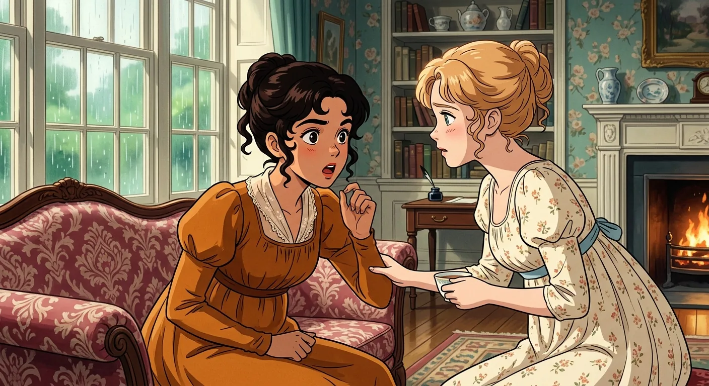
Jane's Generous Doubt and Dancing Plans
The morning after her illuminating conversation with Mr. Wickham, Elizabeth lost no time in sharing every particular of that gentleman's history with Jane. Her sister received the intelligence with all the astonishment and concern that might be expected, yet found herself caught between two equally distressing impossibilities—for how could she believe Mr. Darcy capable of such unconscionable cruelty, when he enjoyed the intimate friendship and regard of a man so amiable as Mr. Bingley? And yet, how could she doubt the word of a young man whose countenance spoke so plainly of sincerity and good nature?
Jane's tender heart, ever disposed to think well of everyone, settled upon the only conclusion available to her generous spirit: that both gentlemen must have been deceived by interested parties, and that misrepresentation rather than genuine villainy lay at the root of their estrangement. Elizabeth could not resist teasing her sister for this excessive charity, observing with characteristic wit that Jane's determination to clear everyone must eventually extend even to those shadowy figures responsible for the mischief. Yet Jane held firm in her conviction that no man of common humanity could treat his father's favourite so abominably, while Elizabeth maintained that the truth had been perfectly evident in Wickham's looks.
Their philosophical debate was interrupted by the arrival of the Bingley party, come to deliver in person the long-anticipated invitation to the Netherfield ball, now fixed for the following Tuesday. Miss Bingley and Mrs. Hurst made their usual show of effusive affection toward Jane whilst treating the remainder of the family with barely concealed disdain, and departed with such haste as suggested an urgent desire to escape Mrs. Bennet's hospitality.
The prospect of the ball threw every female in the household into delightful anticipation, each according to her own particular hopes. Mrs. Bennet viewed the invitation as a compliment to Jane; Elizabeth looked forward to dancing with Wickham and observing Mr. Darcy's guilty countenance; while Kitty and Lydia required nothing more than the promise of officers and music to ensure their happiness. Even Mary condescended to approve the engagement, philosophising that society held claims upon them all.
Elizabeth's high spirits, however, proved her undoing when she playfully enquired whether Mr. Collins intended to dance. That gentleman not only confirmed his willingness but seized the opportunity to secure Elizabeth's hand for the first two dances—the very sets she had reserved in her imagination for Mr. Wickham. Too late she recognised her error, and with it came a more alarming revelation: Mr. Collins's increasing civilities, his clumsy compliments to her wit, all pointed unmistakably toward his intention of making her mistress of Hunsford Parsonage. Mrs. Bennet's transparent hints confirmed what Elizabeth had already begun to suspect, though she wisely chose to ignore her mother's pleasure rather than invite the quarrel that must inevitably follow any refusal.
A succession of rainy days confined the younger sisters to Longbourn, preventing any expedition to Meryton and leaving even Elizabeth to feel the trial of weather that suspended all progress in her acquaintance with Wickham—though the promise of Tuesday's ball made the tedious wait just bearable.
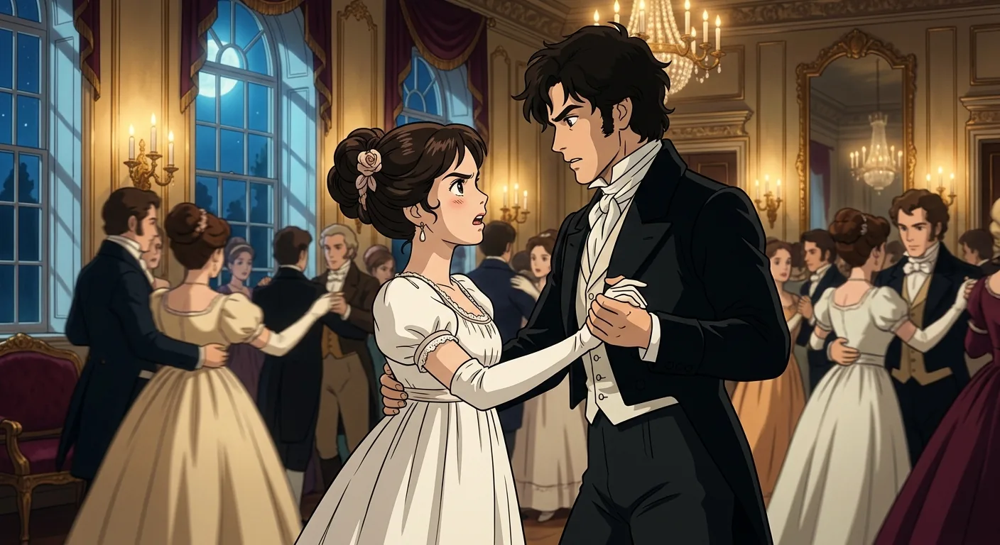
Sparring Steps at the Netherfield Ball
Elizabeth Bennet arrived at the Netherfield ball with spirits higher than prudence might have advised, having dressed with particular care and fully expecting to find Mr. Wickham among the assembled officers. She had prepared herself for nothing less than the conquest of whatever portion of his heart remained unclaimed. Yet when she searched the sea of red coats and found him absent, a cold suspicion seized her—that Mr. Darcy had arranged for his exclusion. Mr. Denny soon confirmed the essence of her fears, revealing with a knowing smile that Wickham had conveniently departed for London on business, clearly to avoid a certain gentleman present. This intelligence sharpened every feeling of displeasure Elizabeth harbored against Darcy, and when he approached her with civil inquiries, she could barely manage tolerable courtesy in return.
Though Elizabeth was not formed for sustained ill-humor, the evening's early mortifications proved considerable. Her first dances with the awkward and oblivious Mr. Collins brought nothing but shame—he apologized where he should have attended, moved wrong without awareness, and left her counting the moments until her release. Relief came briefly in dancing with an officer who spoke well of Wickham, but then Mr. Darcy appeared before her, requesting her hand with such unexpectedness that she accepted without quite knowing what she did.
Their dance became a peculiar contest of wits and silences. Elizabeth, determined to make him as uncomfortable as possible, prodded him into conversation by suggesting he remark upon the room's dimensions or the number of couples. When he smiled and complied, she archly declared they shared a similarity of disposition—both too taciturn to speak unless certain of amazing the entire assembly. The verbal sparring grew sharper when Elizabeth mentioned their encounter at Meryton and their mutual acquaintance with Wickham. Darcy's features darkened, and he observed coolly that Wickham possessed manners to make friends, though whether he could retain them remained uncertain. Elizabeth pressed further, questioning whether Darcy ever allowed prejudice to blind his judgment, but he grew distant and cold. They parted dissatisfied—though in Darcy's breast stirred feelings that soon pardoned her entirely.
The evening's trials compounded relentlessly. Miss Bingley approached with civil disdain, warning Elizabeth against Wickham and revealing him to be merely a steward's son who had treated Darcy infamously. Elizabeth dismissed this as malicious interference. Meanwhile, Mr. Collins mortified her further by introducing himself to Darcy without invitation, delivering a pompous speech about Lady Catherine de Bourgh while Darcy regarded him with barely concealed contempt. Mrs. Bennet broadcast her expectations of Jane's marriage to Bingley in tones audible to half the room, including Darcy himself. Mary performed poorly at the pianoforte until Mr. Bennet silenced her with embarrassing bluntness.
By evening's end, Elizabeth felt her family had conspired to expose themselves with remarkable thoroughness, and she could only hope Bingley had noticed little of the folly while dreading what sport his sisters and Mr. Darcy would make of it. The Bennets departed last, lingering awkwardly while their hosts barely concealed their impatience—yet Mrs. Bennet left perfectly satisfied, already calculating the months until Jane would be settled at Netherfield.
What she could not know was that forces were already gathering to threaten these fond expectations entirely.
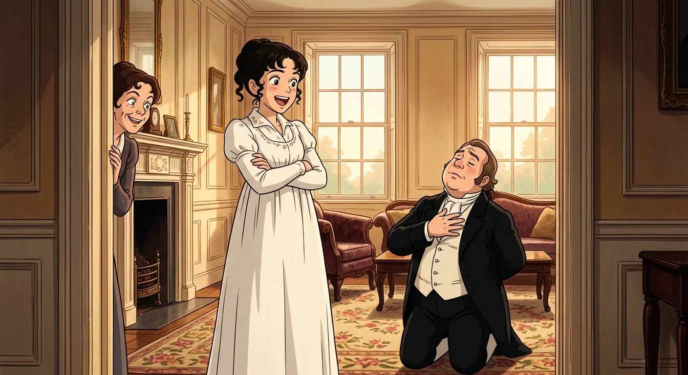
Mr. Collins Proposes with Methodical Certainty
The morning following brought to Longbourn a scene of considerable absurdity, for Mr. Collins had resolved to make his proposal to Elizabeth without delay—his leave of absence extending only to Saturday, and his self-assurance extending, it seemed, well beyond the bounds of reason.
Upon discovering Mrs. Bennet, Elizabeth, and Kitty assembled after breakfast, he approached the matron with all the ceremony he supposed requisite to such occasions, requesting the honour of a private audience with her fair daughter. Mrs. Bennet, whose delight at the prospect of securing a son-in-law could scarcely be contained, hastened to oblige, dragging poor Kitty upstairs despite Elizabeth's urgent protestations that Mr. Collins could have nothing to say that required privacy. But Mrs. Bennet would hear none of it, insisting with maternal authority that Lizzy remain precisely where she was.
Thus abandoned to her fate, Elizabeth resolved to endure the inevitable with what composure she could muster, her feelings divided most unequally between distress and the irresistible urge toward laughter.
Mr. Collins commenced his address with magnificent obliviousness, interpreting Elizabeth's reluctance as charming modesty rather than genuine aversion. He proceeded to enumerate his reasons for marrying with all the romantic sensibility of a man reading aloud from a ledger—first, that clergymen ought to set an example of matrimony; second, that it would contribute to his happiness; and third, most crucially, that Lady Catherine de Bourgh had twice condescended to recommend it, going so far as to specify that he should choose a gentlewoman of useful disposition, not brought up high, whom her ladyship would deign to visit.
He further explained that in selecting a wife from among the Bennet daughters, he meant to soften the blow of eventually inheriting their home—a consideration he clearly expected Elizabeth to find irresistibly generous. His declaration concluded with assurances regarding her meagre fortune, promising that no reproach should ever escape his lips on that subject once they were married.
Elizabeth interrupted with firmness, declining his proposal in terms she believed perfectly clear. But Mr. Collins, armoured in his own complacency, dismissed her refusal as the customary coyness of young ladies, the expected performance before eventual acceptance. Elizabeth's increasingly plain speech—that she could not make him happy, that Lady Catherine would surely disapprove of her—fell upon ears determined not to hear. When she declared the matter finally settled and rose to leave, he assured her he would await a more favourable answer, attributing her present coldness to feminine delicacy.
With mounting warmth, Elizabeth insisted she was no elegant female tormenting him with suspense, but a rational creature speaking plainly from her heart. Yet Mr. Collins remained immovable, persuaded that parental authority would ultimately deliver what Elizabeth's own words would not.
She withdrew in silence, resolved that if his willful self-deception persisted, she must appeal to her father—whose refusal, at least, could never be mistaken for coquetry.
But whether Mr. Bennet's intervention would prove sufficient to penetrate such determined delusion remained to be seen, and the household was far from finished with the consequences of this most unfortunate morning.
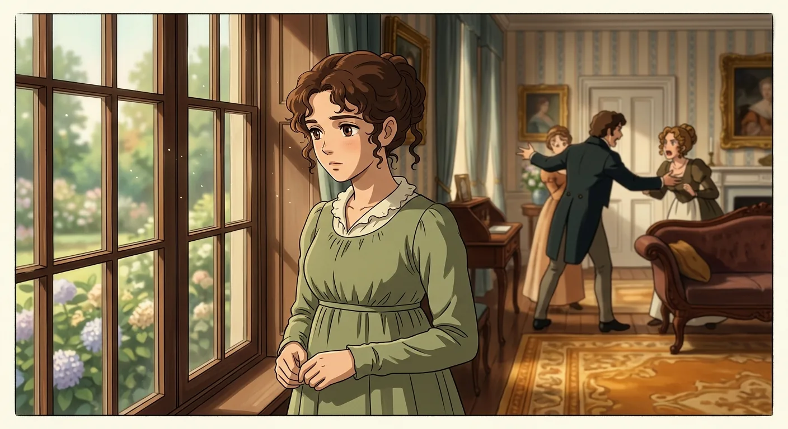
A Father's Wry Ultimatum
The silence that followed Mr. Collins's ill-fated proposal proved exceedingly brief, for Mrs. Bennet had stationed herself most strategically in the vestibule, and upon witnessing Elizabeth's hasty retreat up the staircase, she descended upon the breakfast-room with all the eager triumph of a woman who believes herself on the verge of securing a most advantageous match. Her congratulations flowed freely to Mr. Collins, who received them with that particular satisfaction belonging to a man wholly convinced of his own desirability—for he had already persuaded himself that Elizabeth's refusal sprang not from genuine disinclination but from that charming bashfulness so becoming in young ladies of delicate sensibility.
Mrs. Bennet's joy, however, was swiftly replaced by consternation when she comprehended the true nature of the interview's conclusion. She declared, with all the determination a mother could muster, that Lizzy should be brought to reason forthwith—a pronouncement that gave Mr. Collins unexpected pause. If Elizabeth were indeed headstrong and foolish, he mused aloud, perhaps she would not prove so very desirable a wife after all. Mrs. Bennet, alarmed at the prospect of losing her quarry through her own candour, hastily amended her characterization: Lizzy was headstrong only in such matters as these, and in everything else, quite the most agreeable creature imaginable.
Without permitting further deliberation, Mrs. Bennet flew to the library, where Mr. Bennet sat in his customary repose, and demanded his immediate intervention. Her husband, raising his eyes from his book with an expression of calm unconcern that the most pressing domestic crisis could not alter, listened to her agitated account with something approaching amusement. When Elizabeth was summoned and her refusal confirmed, Mr. Bennet delivered his verdict with characteristic dryness: an unhappy alternative lay before his daughter, for her mother would never see her again if she did not marry Mr. Collins, and he would never see her again if she did.
Elizabeth could scarce suppress her smile at this conclusion, though Mrs. Bennet found nothing in it to gratify her. Her husband's request for the free use of his understanding, and of his library, did little to satisfy her maternal anxieties, and she continued her campaign through the day—now coaxing, now threatening—enlisting Jane's aid without success, and lamenting her cruel usage to any who would listen.
Charlotte Lucas arrived amidst this domestic tempest, greeted first by Lydia's gleeful report of the morning's entertainment, then by Kitty's eager repetition, and finally by Mrs. Bennet's sorrowful appeals for assistance. Mr. Collins, meanwhile, had retreated into dignified meditation, his pride wounded but his heart entirely untouched, for his regard for Elizabeth had been quite imaginary from the first. At length, he emerged to address Mrs. Bennet with all the pompous resignation of a man who had convinced himself that the blessing denied had already begun to lose its value, formally withdrawing his pretensions with elaborate apologies for any manner that might have been thought objectionable.
The household remained in considerable disarray, though one quiet observer had watched these proceedings with rather more attention than she pretended, lingering by the window as schemes of her own began to take shape.
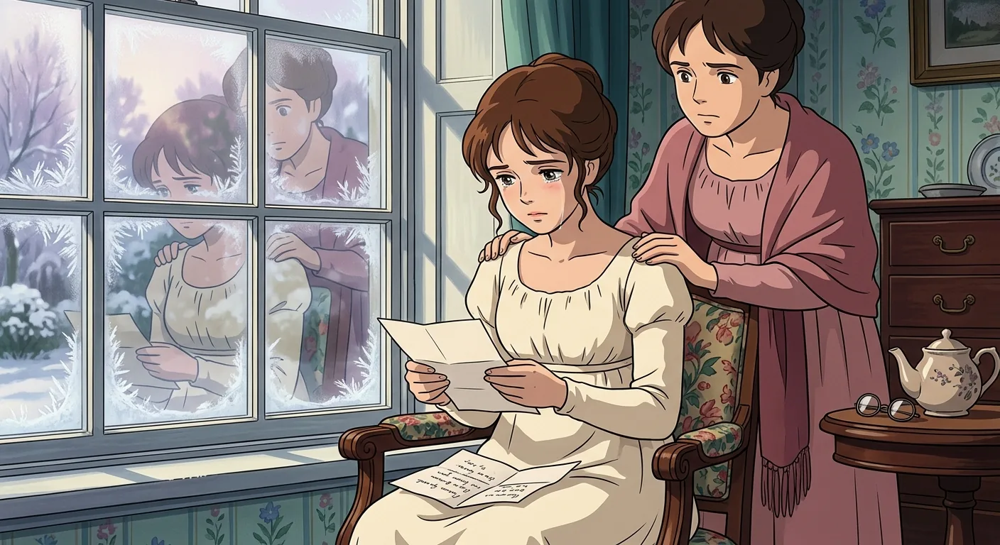
A Letter Shatters Jane's Hopes
The unfortunate business of Mr. Collins's rejected proposal lingered like an unwelcome guest, leaving Elizabeth to endure her mother's peevish complaints whilst the gentleman himself took refuge in wounded pride and resentful silence. Rather than embarrassment or dejection, Collins chose stiffness as his response, transferring his assiduous attentions most pointedly to Miss Lucas—a redirection that proved a seasonable relief to all, and most particularly to Elizabeth herself. Mrs. Bennet's ill humour showed no sign of abating, and though Elizabeth harboured some hope that Collins's resentment might hasten his departure, the man remained obstinately fixed upon staying until Saturday as originally planned.
The following morning brought the Bennet sisters to Meryton, where they sought news of Mr. Wickham and the mystery of his absence from the Netherfield ball. He soon joined their party, and to Elizabeth he made a most interesting confession—his absence had been entirely self-imposed. He had determined it wiser not to place himself in the same room with Mr. Darcy for so many hours together, fearing that unpleasant scenes might arise. Elizabeth found herself thoroughly approving his forbearance, and when Wickham walked back to Longbourn with their party, she felt the compliment keenly, delighting in the opportunity to introduce him to her parents.
Yet the pleasures of Wickham's company were soon overshadowed by more troubling news. A letter arrived for Jane from Netherfield, penned in Caroline Bingley's fair, flowing hand, and Elizabeth watched her sister's countenance change as she read its contents. The intelligence was alarming indeed—the entire Netherfield party had quit Hertfordshire for London, with no intention of returning.
Caroline's letter dripped with high-flown expressions of friendship whilst delivering its true purpose: to inform Jane that Mr. Bingley would not return that winter, and worse still, to plant the notion that his affections were directed elsewhere—towards Miss Georgiana Darcy, whom Caroline praised extravagantly and hoped might soon become her sister through marriage to Charles.
Elizabeth listened to these machinations with all the insensibility of distrust, her sharp understanding piercing through Caroline's artful words. She offered Jane her own interpretation with characteristic directness: Miss Bingley perceived her brother's attachment to Jane and wished him to marry Miss Darcy instead. The removal to London was nothing more than a scheme to keep Bingley from returning, whilst the letter itself aimed to convince Jane of his indifference.
Jane, with her unfailing sweetness, could not believe Caroline capable of wilful deception—though she allowed she might be deceived herself. Elizabeth, ever practical, reminded her sister that if she truly loved Bingley, the disapprobation of his sisters should weigh little against the happiness of being his wife. Jane admitted, with a faint smile, that she could not hesitate if the choice were ever required—though she feared six months might bring a thousand changes.
Elizabeth dismissed such fears with contempt, convinced that Caroline's interested wishes could never influence a young man so independent as Bingley. Her reassurances gradually revived Jane's spirits, and hope began to triumph over doubt. They resolved to tell their mother only of the family's departure, sparing her the particulars of Caroline's designs—though even this partial intelligence set Mrs. Bennet lamenting most exceedingly.
Yet as the sisters retired that evening, the shadow of uncertainty remained, and neither could know what schemes were being laid in London, nor what consequences awaited them when the paths of Netherfield and Longbourn crossed again.
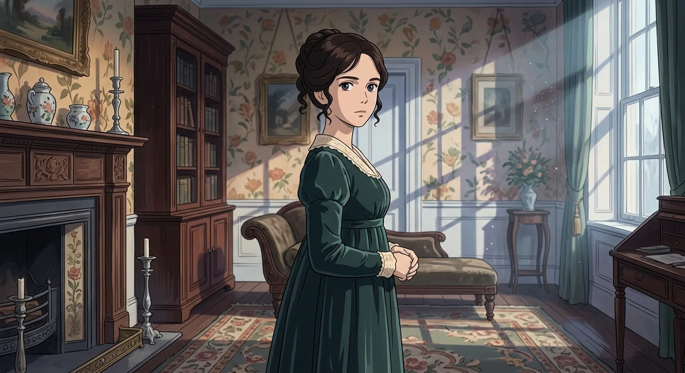
Charlotte's Calculated Pursuit of Security
The Bennets dined with the Lucases, and once more Charlotte Lucas proved herself the most obliging of friends by keeping Mr. Collins thoroughly occupied throughout the evening. Elizabeth, grateful beyond measure for this reprieve, offered her heartfelt thanks, little suspecting that Charlotte's kindness sprang from motives far more calculated than simple friendship. For Charlotte had devised a scheme of her own—nothing less than securing Mr. Collins's attentions permanently, thereby freeing Elizabeth from any further danger of his addresses by directing them squarely toward herself.
The signs proved favorable enough that Charlotte might have felt assured of success, had Mr. Collins not been departing Hertfordshire so soon. Yet she underestimated the gentleman's ardor and determination. The very next morning, he slipped away from Longbourn House with remarkable stealth, hastening to Lucas Lodge to throw himself at Charlotte's feet. Having suffered the humiliation of Wednesday's rejection, he wished to keep his purpose secret until triumph could be announced. His reception exceeded all hopes—Charlotte, having spotted him from an upper window, contrived to meet him "accidentally" in the lane, where she found awaiting her more declarations of love and eloquence than she had dared imagine.
In as brief a time as Mr. Collins's lengthy speeches would permit, everything was settled between them. Charlotte accepted him with clear eyes and a steady heart, moved not by affection but by the "pure and disinterested desire of an establishment." At seven-and-twenty, plain and possessed of little fortune, she understood matrimony as the only respectable provision available to women of her circumstances—a preservative from want, if not a guarantee of happiness.
Sir William and Lady Lucas bestowed their consent with jubilant alacrity. Lady Lucas immediately began calculating how many years Mr. Bennet might reasonably be expected to live, while Sir William anticipated the day when Mr. Collins, master of Longbourn, would present himself and his wife at St. James's. The entire household rejoiced, each member finding private advantage in the match.
Charlotte alone remained composed, troubled only by the pain her news must cause Elizabeth, whose friendship she valued above all others. She resolved to tell Elizabeth herself, extracting from Mr. Collins a promise of secrecy he could barely keep, so eager was he to proclaim his prosperous love.
When Charlotte called at Longbourn the following morning and revealed her engagement, Elizabeth's astonishment burst forth with an exclamation she could not suppress: "Engaged to Mr. Collins! My dear Charlotte, impossible!" Though she quickly recovered herself and offered congratulations, her shock remained profound. Charlotte defended her choice with steady practicality—she was not romantic, she asked only for a comfortable home, and her chance of happiness seemed as fair as most could expect upon entering marriage.
Left alone with her thoughts, Elizabeth found herself unable to reconcile the match. That Charlotte should sacrifice every better feeling to worldly advantage seemed incomprehensible, and the image of her sensible friend as Mrs. Collins struck her as deeply humiliating. Worse still was the conviction that no happiness could await Charlotte in such a union.
Yet Charlotte's pragmatic choice would soon force Elizabeth to examine her own assumptions about marriage, love, and the limited options available to women of small fortune—questions that would press upon her with increasing urgency as new entanglements drew ever nearer.
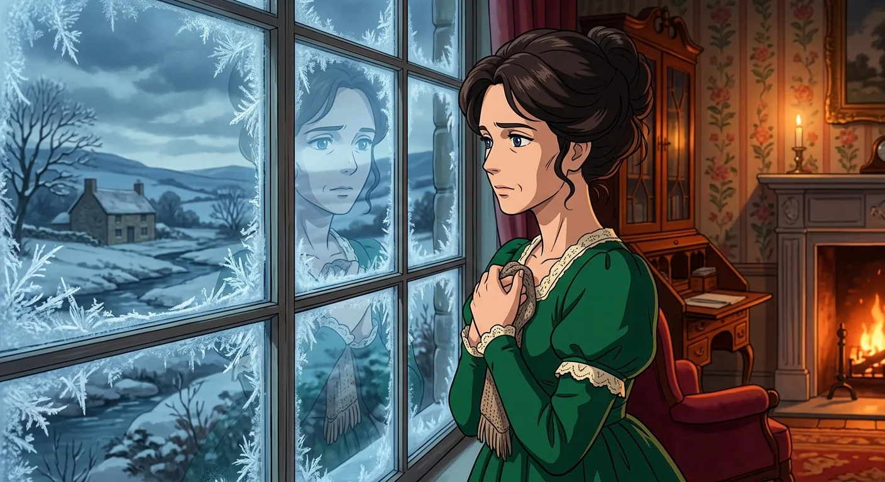
Mrs. Bennet's Unending Resentment
The news of Charlotte Lucas's engagement to Mr. Collins spread through Longbourn with all the delicacy of a summer storm. Sir William Lucas himself arrived to deliver the intelligence, brimming with compliments and self-congratulation at the prospect of uniting their two families, only to find his audience not merely astonished but utterly disbelieving. Mrs. Bennet, abandoning politeness in favour of persistence, insisted he must be mistaken, while Lydia burst out with characteristic tactlessness that Mr. Collins had surely meant to marry Lizzy. Only Sir William's impeccable breeding preserved him from mortification, and Elizabeth, recognising his predicament, stepped forward to confirm the truth of the matter, having heard it from Charlotte's own lips.
Once Sir William had departed, Mrs. Bennet's feelings found full expression. She disbelieved the engagement; she was certain Mr. Collins had been deceived; she trusted the pair would never find happiness together; and she hoped the match would be broken off entirely. From this catalogue of grievances, two conclusions emerged paramount in her mind: Elizabeth was the true author of all this mischief, and she herself had been barbarously ill-used. A week passed before she could look upon Elizabeth without scolding, a month before she could address Sir William or Lady Lucas with civility, and many months more before she could bring herself to forgive Charlotte at all.
Mr. Bennet's response proved characteristically philosophical. The affair afforded him considerable amusement, for it revealed Charlotte Lucas—whom he had always considered tolerably sensible—to be quite as foolish as his wife, and rather more foolish than his daughter. Jane, ever generous, expressed surprise but dwelt far more upon her hopes for the couple's happiness than upon any doubts. Kitty and Lydia remained supremely indifferent, for a mere clergyman held no fascination for them; the engagement served only as fresh gossip to spread about Meryton.
Lady Lucas, meanwhile, could not resist her triumph. She called at Longbourn with gratifying frequency to express her joy, impervious to Mrs. Bennet's sour countenance and ill-natured remarks. Between Elizabeth and Charlotte, however, a new restraint had settled. They spoke not of the engagement, and Elizabeth felt certain that the confidence they had once shared could never be restored. This disappointment turned her heart more tenderly toward Jane, whose steadfast rectitude and delicacy remained beyond question.
Mr. Collins's letter arrived, thick with gratitude and rapturous declarations of his happiness. Lady Catherine, he reported, heartily approved the match and wished it concluded with all possible haste. He intended to return to Longbourn within a fortnight—news that filled Mrs. Bennet with fresh vexation. That he should choose Longbourn over Lucas Lodge struck her as both strange and troublesome.
Yet even these complaints gave way to the greater distress of Mr. Bingley's continued absence. Reports circulated through Meryton that he would not return to Netherfield all winter, and Elizabeth began to fear—though she fought against the notion—that his sisters and his friend Mr. Darcy might succeed in keeping him away permanently. Jane bore her anxiety in silence, though Mrs. Bennet provided no such restraint, speaking hourly of Bingley and demanding Jane confess she would feel ill-used should he not return.
Mr. Collins arrived punctually, though his welcome proved cooler than before. Happily occupied with courtship, he spent his days at Lucas Lodge, leaving Longbourn in relative peace. Mrs. Bennet, however, found no relief. The sight of Charlotte became odious to her, for she saw in that young woman her own future dispossession—the mistress-to-be of Longbourn, come to turn her and her daughters from their home the moment Mr. Bennet should die. When she poured forth these fears to her husband, he offered only his characteristic wit: "Let us flatter ourselves that I may be the survivor."
As winter deepened and Bingley's absence stretched on, the anxieties of both heart and hearth weighed heavily upon the household, and darker clouds seemed to gather on the horizon.
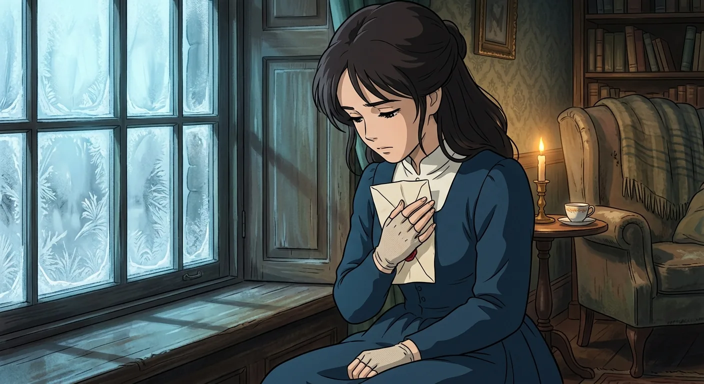
Hope Extinguished, Sisters Consoling
Miss Bingley's letter arrived at Longbourn with all the finality of a door closing forever. The Bingley party had settled in London for the winter, with no intention of returning to Hertfordshire, and Jane's fragile hopes were extinguished completely. What comfort could the letter offer? Precious little—only Caroline's professed affection, which rang hollow against her effusive praise of Miss Darcy and her barely concealed predictions that Mr. Bingley would soon be united with that young lady. Caroline wrote with undisguised pleasure of her brother residing at Mr. Darcy's house, as though the very furniture being ordered there held more significance than any connection left behind in the country.
Elizabeth received this intelligence from Jane with silent indignation, her heart torn between sympathy for her sister and resentment toward those who had engineered this separation. She dismissed Caroline's insinuations about Bingley's preference for Miss Darcy as pure fabrication, remaining convinced of his genuine attachment to Jane. Yet this conviction only deepened her contempt for Bingley himself—that weak, pliable man who allowed his designing friends to govern his happiness and, worse still, her sister's peace.
When Jane finally gathered courage to speak of her feelings, she did so with characteristic selflessness, expressing concern only that their mother's constant lamentations caused her pain. She insisted she would forget him, that the attachment had been merely an error of fancy on her part, harming no one but herself. Elizabeth, moved beyond measure, declared her sister's sweetness and disinterestedness truly angelic.
Their conversation turned to broader discontents. Elizabeth confessed her growing dissatisfaction with the world, citing Charlotte's inexplicable marriage to Mr. Collins as evidence of the inconsistency of human character. Jane, ever gentle, urged her sister toward charity and understanding, defending Charlotte's practical choice and pleading that Elizabeth not think ill of Bingley. She preferred to believe his attentions had meant nothing rather than imagine him capable of deliberate cruelty or his sisters capable of interference.
Elizabeth could not share such generous blindness. She attributed Bingley's conduct not to design but to thoughtlessness and want of resolution, influenced by his sisters and his friend. Yet she yielded to Jane's wish for peace, and from that day forward, Bingley's name was scarcely mentioned between them.
Mrs. Bennet continued her bewildered complaints, while Mr. Bennet addressed the matter with his usual sardonic detachment, congratulating Jane on being crossed in love and suggesting Elizabeth try her luck with Wickham. Meanwhile, that gentleman's society proved a welcome distraction, his tale of ill-usage at Darcy's hands now openly discussed throughout the neighborhood—though only Jane remained capable of imagining any extenuating circumstances in the case.
As winter settled over Hertfordshire, the Bennet household adjusted to disappointment in their various ways, yet the wounds inflicted by absent friends remained tender, and new acquaintances carried their own hidden dangers.
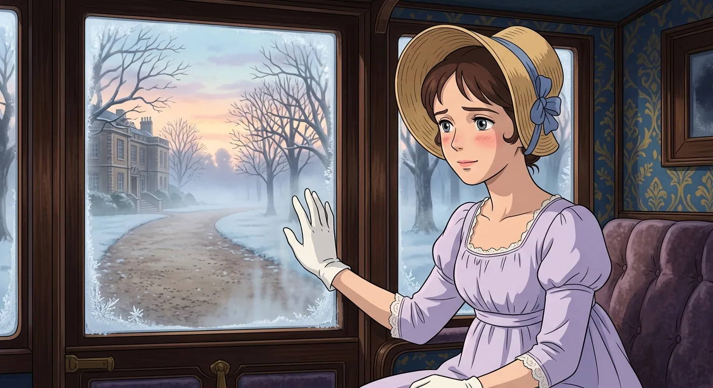
The Gardiners Bring Comfort and Counsel
Mr. Collins departed Longbourn on Saturday, his week of devoted courtship drawing to its ceremonious close. Though the pain of parting from his amiable Charlotte might have afflicted a more ardent lover, Mr. Collins found sufficient consolation in contemplating the preparations awaiting him—for soon, very soon, he should return to Hertfordshire to fix the happy day that would make him the most blessed of men. He took his leave with all the solemnity one might expect, bestowing health and happiness upon his fair cousins and promising yet another letter of thanks to their father.
The Monday following brought far more welcome visitors to Longbourn: Mr. and Mrs. Gardiner arrived to spend Christmas with the family, as was their agreeable custom. Mr. Gardiner proved himself a sensible, gentlemanlike man, so vastly superior to his sister in both nature and education that the Netherfield ladies would scarcely have believed a man who lived by trade, within view of his own warehouses, could possess such breeding and agreeable manners. His wife, several years younger than Mrs. Bennet, was an intelligent, elegant woman who had secured a particular place in the affections of her Longbourn nieces, especially the two eldest, who had frequently stayed with her in town.
Mrs. Gardiner's first business upon arriving was the pleasant duty of distributing presents and describing the newest fashions. This accomplished, she assumed the less active role of listener—for Mrs. Bennet had grievances aplenty to unburden. Two daughters had been on the very point of marriage, and yet here they remained, quite unmarried! Jane, she allowed, could not be blamed, for Jane would have secured Mr. Bingley had it been within her power. But Lizzy—oh, the perverseness of that girl!—might have been Mrs. Collins by now, had she not refused his proposal in that very room. The consequence? Lady Lucas would have a married daughter before Mrs. Bennet, and Longbourn remained as entailed as ever. The Lucases, she declared, were artful people indeed.
Mrs. Gardiner, already apprised of these matters through correspondence with her nieces, turned the conversation with merciful tact. Later, speaking privately with Elizabeth, she addressed the matter of Jane and Bingley more directly. Such attachments, she observed, were often fleeting—young men fell in love with pretty girls for a few weeks and forgot them just as easily when circumstances separated them.
Elizabeth would not accept such consolation. This was no accident of fate, she insisted, but deliberate interference. When pressed about the violence of Bingley's attachment, Elizabeth replied with characteristic wit: had not his inattention to every other person, his neglect of young ladies awaiting dances, his failure to hear her own conversation twice over, been the finest symptoms of love? Was not general incivility its very essence?
Mrs. Gardiner, pitying Jane's tender disposition, proposed that her niece return with them to London. A change of scene might prove useful, and there was little danger of encountering Bingley in their unfashionable part of town—Gracechurch Street being a location Mr. Darcy would hardly deign to acknowledge, much less permit his friend to visit.
Jane accepted the invitation with pleasure. The Gardiners remained a week at Longbourn, during which Mrs. Gardiner observed with some unease the evident preference between Elizabeth and Mr. Wickham. She resolved to caution her niece before departing. Wickham, meanwhile, charmed Mrs. Gardiner with memories of Derbyshire, where she had once spent considerable time. He spoke of Pemberley, which she had seen, and of the late Mr. Darcy, whose character she had admired—and when she learned of the present Mr. Darcy's treatment of Wickham, she found herself recollecting that the young master had always been spoken of as a proud, ill-natured boy.
As the holiday visit drew to its close, Jane prepared to accompany her aunt and uncle to London, carrying with her a heart that hoped—despite all evidence—that the story of Mr. Bingley was not yet entirely finished.
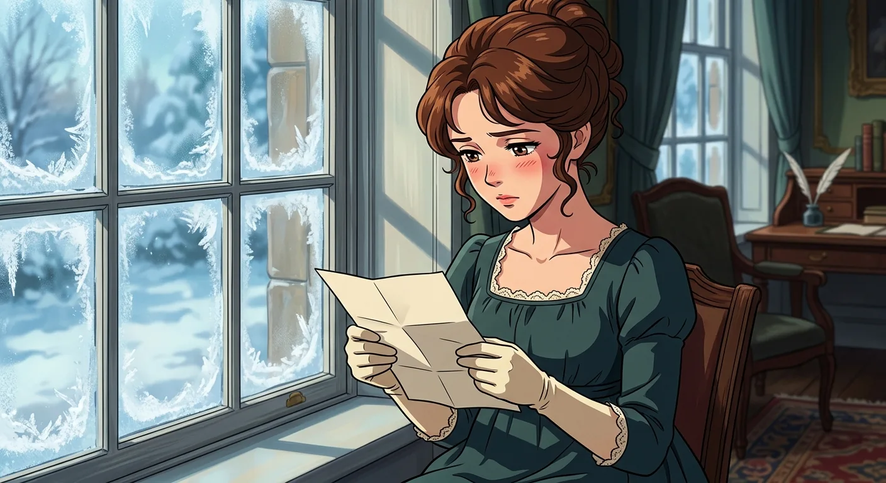
Farewells and Fading Intimacies
Mrs. Gardiner, ever the sensible relation, seized her first private moment with Elizabeth to deliver a warning regarding Mr. Wickham. She spoke with characteristic directness, acknowledging Elizabeth's good sense while urging caution: a match with a man of no fortune, however agreeable he might be, would prove imprudent indeed. Elizabeth's father depended upon her judgment, her aunt reminded her, and she must not disappoint him.
Elizabeth received this counsel with her usual wit, half in earnest and half in playful deflection. She could not deny Wickham's charms—he remained, beyond all comparison, the most agreeable man she had ever encountered—yet she understood the folly of encouraging an attachment that could lead nowhere advantageous. With a characteristic flash of spirit, she cursed that abominable Mr. Darcy for his role in Wickham's misfortune. Still, she promised her aunt to exercise patience, to avoid hastening her own hopes, and to refrain from encouraging her mother's invitations. Mrs. Gardiner departed satisfied, and the exchange concluded without resentment—a rare triumph where unsolicited advice is concerned.
Meanwhile, Mr. Collins returned to Hertfordshire to claim his bride. Mrs. Bennet, resigned at last to Charlotte's victory, could only manage ill-natured wishes for the couple's happiness. Elizabeth, ashamed of her mother's ungracious manner, accompanied Charlotte downstairs during her farewell visit. There, Charlotte extracted a promise that Elizabeth would visit Hunsford in March, a prospect Elizabeth accepted with little enthusiasm but sincere affection for her friend. The wedding proceeded without ceremony, the couple departing directly for Kent, and correspondence between the friends continued—though Elizabeth felt keenly that true intimacy had been lost forever. Charlotte's letters arrived cheerfully enough, praising house, neighbourhood, and Lady Catherine alike, but Elizabeth knew she must see Hunsford herself to understand the whole truth.
From London came news of a different sort entirely. Jane's letters revealed the painful unraveling of her hopes. A full week passed without word from Caroline Bingley, and when Jane finally called at Grosvenor Street, she found her former friend cold and evasive. Mr. Bingley was perpetually engaged with Mr. Darcy, she was told, and Miss Darcy was expected constantly. Four weeks elapsed without any sign of him. When Caroline at last returned the visit, her manner had so altered—formal, brief, devoid of warmth—that Jane could deceive herself no longer. In a letter marked by characteristic gentleness, Jane confessed to Elizabeth that she had been entirely deceived, though she pitied Caroline more than she blamed her, supposing anxiety for her brother's attachment to be the cause.
Elizabeth grieved for her sister's pain yet felt relief that Jane's eyes were finally opened. Her opinion of Bingley sank irretrievably; she even hoped he might marry Miss Darcy and regret what he had abandoned.
As for Wickham, Elizabeth had her own confession to make. His attentions had shifted to a Miss King, newly possessed of ten thousand pounds, and Elizabeth found herself remarkably uninjured. She acknowledged to her aunt that she had never truly been in love—for if she had, she would surely detest his very name rather than wish him well. Her vanity remained satisfied that fortune alone had prevented his choosing her, and she could sincerely hope for his happiness, even as Kitty and Lydia mourned his defection with far greater feeling.
With Charlotte settled at Hunsford, Jane disillusioned in London, and Wickham pursuing a more profitable attachment, Elizabeth found herself surrounded by lessons in the commerce of marriage—lessons that would soon prove more personal than she yet imagined.
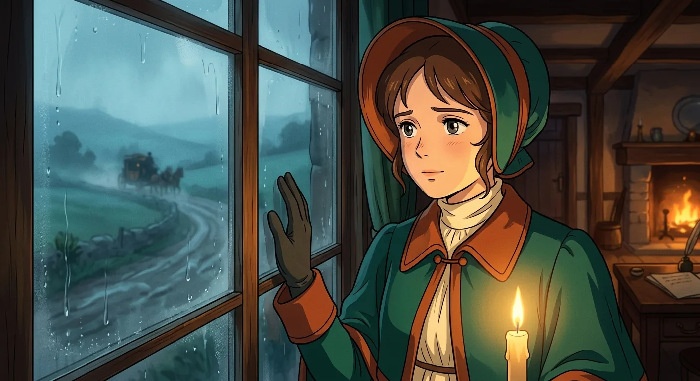
Departures and Lingering Attachments
The quiet months of January and February slipped away at Longbourn with little to mark their passage beyond the familiar walks to Meryton, undertaken in weather that alternated between muddy and bitter cold. Yet March promised something altogether different, for it would carry Elizabeth to Hunsford.
She had not, at first, given the visit much serious consideration, but Charlotte's evident dependence upon the scheme gradually transformed Elizabeth's reluctant acquiescence into genuine anticipation. The passage of time had worked its subtle influence—her longing to see Charlotte had grown stronger while her distaste for Mr. Collins had softened somewhat. The prospect of change held its own appeal; with such a mother and such uncompanionable sisters, home could hardly claim perfection, and novelty offered its own reward. Better still, the journey would afford her a glimpse of Jane in London. By the time her departure approached, Elizabeth would have mourned any delay.
All arrangements proceeded smoothly according to Charlotte's original design. Elizabeth would travel with Sir William Lucas and his second daughter, Maria, with the happy addition of a night spent in London perfecting the plan entirely.
Her sole regret lay in leaving her father, who would certainly feel her absence. When the moment arrived, he liked her going so little that he charged her to write and very nearly promised to reply.
Her parting from Wickham proved perfectly cordial—indeed, rather more so on his side. His present pursuit of Miss King could not erase his memory of Elizabeth as the first to capture his interest, the first to listen with sympathy, the first to earn his admiration. In his farewell, with his good wishes and knowing references to Lady Catherine de Bourgh, Elizabeth detected a solicitude that must forever secure her sincere regard. She departed convinced that Wickham, whether married or single, would always remain her model of everything amiable and pleasing.
Her traveling companions the following day did nothing to diminish this favorable impression. Sir William Lucas and Maria, a good-humored girl but as empty-headed as her father, offered nothing worth hearing. Elizabeth had long exhausted her amusement at Sir William's absurdities; his tales of presentation at court and his worn civilities had lost all power to entertain.
They reached Gracechurch Street by noon, where Jane awaited them at the window. Elizabeth examined her sister's face with anxious scrutiny and found it as healthful and lovely as ever, though Mrs. Gardiner later confided that Jane still suffered periods of dejection despite her brave spirits. Jane had, from her heart, relinquished all hope regarding Bingley.
Mrs. Gardiner then teased Elizabeth about Wickham's desertion, questioning whether his sudden pursuit of Miss King revealed mercenary motives. Elizabeth parried with characteristic wit, demanding to know where prudence ended and avarice began—had not her aunt warned against the imprudence of Wickham marrying a girl without fortune? Her spirited defense carried an edge of bitterness that prompted her aunt's gentle warning: such speeches savored strongly of disappointment.
Yet before the evening's theatre entertainment concluded, Elizabeth received news that swept away all vexation—an invitation to accompany the Gardiners on a summer tour to the Lakes. Her rapture knew no bounds. "What are men to rocks and mountains?" she cried, embracing the prospect of transport and discovery, of landscapes that would not disappoint or deceive.
With summer's promised adventure glowing before her, Elizabeth prepared to continue her journey toward Hunsford, where altogether different discoveries awaited her at Rosings Park.
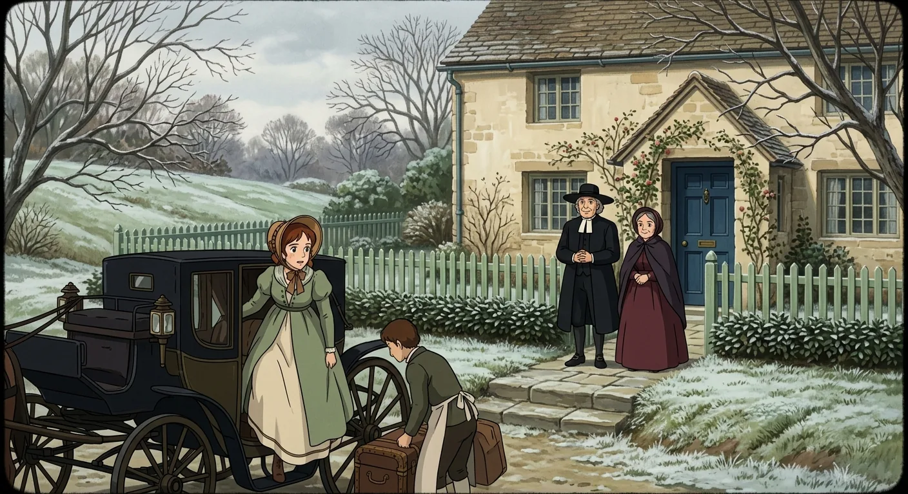
Arrival at Hunsford Parsonage
Elizabeth Bennet's journey to Hunsford proved a tonic for her spirits, each mile bringing fresh diversions and the pleasant assurance that Jane's health had quite recovered. The northern tour she had planned stretched before her imagination like a promise, and she found herself in that agreeable state where anticipation doubles every pleasure.
As the carriage turned from the high road into the narrower lane leading to the Parsonage, all eyes strained forward in search of their destination. The pale fencing of Rosings Park marked one boundary of their path, and Elizabeth could not suppress a smile at the thought of its illustrious inhabitants—those personages of whom she had heard such excessive praise from her cousin's own lips.
The Parsonage revealed itself at last: a modest house set within sloping gardens, bordered by green pales and a laurel hedge. Mr. Collins and Charlotte stood waiting at the door, and the moment the carriage halted at the small gate, the whole party descended amid much nodding and smiling. Charlotte welcomed Elizabeth with genuine warmth, and Elizabeth felt her decision to visit vindicated by such an affectionate reception.
Mr. Collins, she observed immediately, remained wholly unaltered by matrimony. His formal civilities detained her at the gate while he inquired after each member of her family with tedious particularity. He then led them into the house, pausing only to direct their attention to the neatness of the entrance, before welcoming them a second time in the parlour with all his characteristic ostentation, repeating his wife's offers of refreshment as though she had not spoken at all.
Elizabeth had braced herself to witness Mr. Collins in his element, and she was not disappointed. As he displayed the proportions of the room and enumerated the virtues of every piece of furniture, she fancied his discourse aimed particularly at herself—a silent reminder of what she had forfeited in refusing his hand. Yet the neat and comfortable surroundings stirred no regret in her breast; she wondered instead how Charlotte could appear so cheerful beside such a companion. When Mr. Collins uttered something particularly mortifying—which occurred with distressing regularity—Elizabeth glanced at her friend, catching occasionally a faint blush, though Charlotte had wisely perfected the art of selective deafness.
The garden tour proved equally exhausting. Mr. Collins led them through every walk with a minuteness that murdered beauty, numbering distant fields and counting trees in far-off clumps. Yet no prospect could rival, in his estimation, the view of Rosings glimpsed through an opening in the trees—a handsome modern building upon rising ground that commanded his reverence absolutely.
When the ladies' thin shoes proved unequal to the frosty meadows, Charlotte seized the opportunity to show them the house without her husband's commentary. Small but well-built, the Parsonage bore everywhere the marks of Charlotte's practical taste, and Elizabeth credited her friend with its atmosphere of genuine comfort—comfort most apparent, she suspected, when Mr. Collins could be forgotten.
At dinner, Mr. Collins held forth upon Lady Catherine de Bourgh's condescension and affability, promising Elizabeth the honour of her notice after Sunday's church service. Charlotte added her measured praise of their patroness as a sensible and attentive neighbour, and the evening dissolved into familiar Hertfordshire gossip.
That night, alone in her chamber, Elizabeth contemplated Charlotte's apparent contentment, her skill in managing and enduring her husband. She acknowledged it was all done remarkably well, even as she anticipated the quiet routines ahead, punctuated by Mr. Collins's interruptions and their social engagements at Rosings.
The following midday brought unexpected excitement: Maria burst upon Elizabeth with news of a marvellous sight below. Elizabeth hurried down to find merely two ladies in a phaeton at the garden gate—Miss De Bourgh and her companion, Mrs. Jenkinson. The sickly, cross-looking heiress struck Elizabeth with a particular thought: she would make Mr. Darcy a very proper wife indeed.
The visit concluded with an invitation that set Mr. Collins aglow with satisfaction—the whole party was to dine at Rosings on the morrow, bringing Elizabeth face to face at last with the formidable Lady Catherine herself.
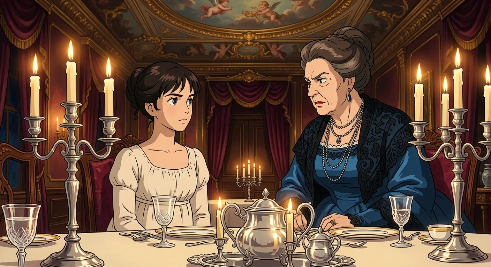
An Audience with Lady Catherine
Mr. Collins could scarcely contain his delight upon receiving an invitation for the entire party to dine at Rosings, for here was precisely the opportunity he had longed for—to display before his wondering visitors the full magnificence of his noble patroness and to bask in the reflected glory of her condescension. That the invitation should arrive so immediately after Elizabeth and Sir William's arrival struck him as an extraordinary mark of Lady Catherine's favour, though he confessed he would not have been surprised by a mere invitation to tea, such was his intimate knowledge of her affability.
Sir William, not to be outdone in self-importance, declared himself equally unsurprised, claiming that his experience at court had accustomed him to such instances of elegant breeding among the great. Between the two gentlemen, scarcely anything else was spoken of for a day and a half, with Mr. Collins taking particular care to prepare his guests for the splendours awaiting them—lest the sight of so many servants and so fine a dinner should wholly overpower their senses.
Before the ladies could even dress, Mr. Collins thought it prudent to advise Elizabeth on her attire, assuring her that Lady Catherine required no particular elegance from those beneath her station, for she preferred the distinction of rank to be preserved. Poor Maria Lucas, unused to such formidable company, trembled with apprehension at the very thought of the introduction, though Elizabeth's courage remained unshaken. She had heard nothing of Lady Catherine that suggested any extraordinary merit beyond the mere stateliness of fortune and position, and these she felt she could encounter without trepidation.
Upon arriving at the great house, Elizabeth found her composure fully equal to the scene. Lady Catherine proved to be exactly as Mr. Wickham had described—a tall, imposing woman whose authoritative manner betrayed her conviction that her judgment ought never to be questioned. Miss de Bourgh, by contrast, appeared pale and insignificant, speaking little except to Mrs. Jenkinson, her devoted companion. The dinner was handsome, the plate abundant, and Mr. Collins, seated by her Ladyship's desire at the bottom of the table, carved and praised and commended with such delighted alacrity that Elizabeth wondered Lady Catherine could bear it—though bear it she did, with gracious smiles for their excessive admiration.
In the drawing-room, Lady Catherine held court without intermission, dispensing advice on Charlotte's domestic management, inquiring into Elizabeth's family circumstances with imperious familiarity, and expressing astonishment at the Bennet girls' lack of a governess, their want of artistic accomplishments, and the shocking impropriety of all five sisters being out in society at once. Elizabeth answered composedly but with spirit, defending her family's choices and her younger sisters' right to society's pleasures. When pressed for her age, she replied with a playful evasion that left Lady Catherine quite astonished—perhaps the first creature who had ever dared trifle with so much dignified impertinence.
The evening concluded with cards, speeches of excessive thankfulness from Mr. Collins, and Lady Catherine's confident predictions for the morrow's weather, leaving Elizabeth with impressions she softened considerably for Charlotte's sake—though not nearly enough to satisfy her obsequious cousin.
Yet even as Elizabeth reflected upon the absurdities of Rosings and its imperious mistress, she could not have anticipated that these visits would soon bring encounters far more consequential to her future happiness.
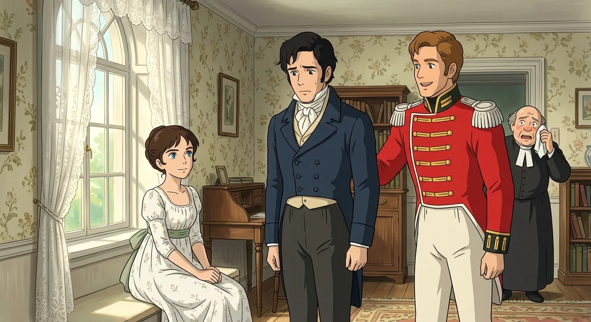
Charlotte's Quiet Strategy at Hunsford
Sir William Lucas departed Hunsford after a week's stay, quite satisfied that his daughter Charlotte had secured both a comfortable situation and that rarest of combinations—a devoted husband and an illustrious neighbour. With his departure, the household resumed its ordinary rhythms, and Elizabeth found herself grateful that Mr. Collins's absence from their company had not diminished in the least. Her cousin now occupied his mornings most industriously in the garden or sequestered in his book room, which commanded a prospect of the road—a vantage point he guarded with considerable vigilance. The ladies, meanwhile, sat in a room facing backwards, affording no view of the lane whatsoever. Elizabeth had initially puzzled over Charlotte's choice to forsake the more agreeable dining parlour for their daily use, but comprehension soon dawned: had they situated themselves in a room of equal liveliness to Mr. Collins's retreat, he should certainly have haunted their company far more frequently. Elizabeth silently commended her friend's shrewd domestic arrangement.
From their secluded drawing-room, the ladies remained entirely ignorant of passing carriages—a deficiency Mr. Collins remedied with unfailing enthusiasm, announcing each vehicle with particular attention to Miss De Bourgh's phaeton, which traversed the lane with almost daily regularity. That sickly young lady occasionally deigned to pause at the Parsonage for brief conversation with Charlotte, though she could scarcely ever be persuaded to alight.
Mr. Collins's pilgrimages to Rosings occurred with such devoted frequency that Elizabeth could not fathom the sacrifice of so many hours until she recollected that other family livings might yet be disposed of. Lady Catherine herself occasionally graced the Parsonage with her presence, and nothing within those walls escaped her imperious observation. She scrutinized their needlework, prescribed alterations, found fault with the furniture arrangement, detected negligence in the housemaid, and, upon accepting refreshment, seemed principally occupied with determining that Mrs. Collins's joints of meat exceeded what was proper for so modest a household. Though this great lady held no official commission of the peace, she served as most active magistrate within her own parish, sallying forth to settle disputes among cottagers and scold them into harmony and plenty whenever they proved quarrelsome, discontented, or insufficiently grateful for their poverty.
Dinners at Rosings continued twice weekly, each evening a faithful reproduction of the first. Elizabeth, however, passed her time comfortably enough. Half hours of pleasant conversation with Charlotte provided genuine enjoyment, and the fine weather drew her frequently out of doors to a sheltered path along the grove edging the park—a retreat no one else seemed to value, and where she felt deliciously beyond the reach of Lady Catherine's intrusive curiosity.
A fortnight slipped quietly away, and with Easter approaching, word came that Mr. Darcy was expected at Rosings. Elizabeth felt little pleasure at the prospect—there were few acquaintances she did not prefer to him—yet his arrival would furnish fresh amusement, particularly in observing how thoroughly Miss Bingley's designs upon him would be thwarted by his evident destiny with his cousin, whom Lady Catherine discussed with proprietary satisfaction.
Mr. Collins stationed himself within view of the lodges the entire morning of Darcy's anticipated arrival, and upon witnessing the carriage turn into the park, hurried home to report the intelligence. The following morning brought an unexpected honour: Mr. Darcy returned Mr. Collins's call, accompanied by Colonel Fitzwilliam, his cousin and fellow nephew to Lady Catherine. The Colonel proved agreeable—about thirty, not handsome, but possessing the easy address of a true gentleman. Mr. Darcy, meanwhile, appeared precisely as he had in Hertfordshire: reserved, composed, offering Elizabeth no particular acknowledgment beyond civil inquiry after her family's health. She seized the opportunity to mention that Jane had been in London these three months—had he never chanced to see her there? His slight confusion as he denied ever meeting Miss Bennet told Elizabeth all she wished to know.
The gentlemen departed shortly thereafter, leaving Elizabeth to contemplate what further encounters this Easter season at Rosings might bring.
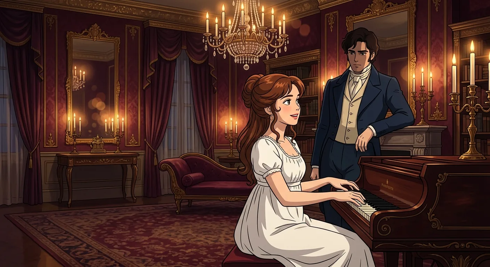
Sparring at the Pianoforte
The arrival of Colonel Fitzwilliam at Rosings had not gone unnoticed by the inhabitants of the Parsonage, whose appreciation for his agreeable manners stood in marked contrast to the somewhat cooler reception afforded by the great house itself. Though the Colonel had taken it upon himself to call at the Parsonage on more than one occasion during the first week of his visit, Mr. Darcy had been glimpsed only at church, maintaining that deliberate distance which seemed so characteristic of his nature. As for any invitation to Rosings, the party at the Parsonage was made to understand, without the indelicacy of direct statement, that while distinguished visitors occupied Lady Catherine's attention, humbler acquaintances must content themselves with patience. It was not until Easter-day that such an honour was at last bestowed, and even then with the air of an afterthought, the invitation extended as they departed church.
Upon arriving at Lady Catherine's drawing-room that evening, the company was received with civility, though it was abundantly clear that their presence served merely to fill seats rather than to provide any genuine pleasure to their hostess. Her Ladyship devoted herself almost entirely to her nephews, reserving for Darcy in particular the greater portion of her condescension. Colonel Fitzwilliam, however, proved himself a man who found any diversion welcome at Rosings, and Mrs. Collins's pretty friend had quite captured his interest. He seated himself beside Elizabeth, and together they embarked upon such a lively discourse—touching upon Kent and Hertfordshire, the pleasures of travel and the comforts of home, new publications and musical accomplishments—that Elizabeth found herself better entertained than she had ever been within those grand walls.
Their animated conversation soon drew curious glances from Mr. Darcy, whose eyes turned repeatedly in their direction, and eventually provoked Lady Catherine herself to demand an account of their discussion. Upon learning that music was their subject, her Ladyship seized the opportunity to expound at length upon her own natural superiority in musical taste—a proficiency that existed, remarkably, without the inconvenience of ever having learnt to play. She extended this self-congratulation to her daughter Anne, whose delicate health had alone prevented her from achieving similar imaginary excellence, before turning her attention to Darcy's sister Georgiana with advice that was neither requested nor, apparently, required.
When Elizabeth took her place at the pianoforte at Colonel Fitzwilliam's request, Darcy soon positioned himself where he might observe her countenance as she played. Elizabeth met this scrutiny with characteristic archness, accusing him of attempting to intimidate her with his august presence. What followed was an exchange of wit and understanding between them, as Elizabeth playfully recounted his unsociable behaviour at the Meryton assembly, and Darcy offered something approaching an explanation—or perhaps an excuse—for his inability to converse easily with strangers. Elizabeth's clever rejoinder, comparing his unwillingness to practise social graces with her own admitted neglect of musical practice, drew from him a smile and a compliment that acknowledged their shared reluctance to perform for those they did not know.
Lady Catherine, naturally, could not allow such intimate discourse to continue without interruption, and soon resumed her commentary on Elizabeth's playing, mixing criticism with instruction in her customary manner. Elizabeth bore it all with admirable composure, continuing at the instrument until her Ladyship's carriage was called.
Throughout the evening, Elizabeth had watched carefully for any sign of particular attachment between Darcy and his cousin Anne, but could discern nothing resembling affection—a circumstance that offered cold comfort indeed to Miss Bingley's hopes, for it suggested that Darcy's indifference extended equally to all eligible connexions.
As the evening drew to a close, Elizabeth could not help but reflect upon the peculiar nature of her exchanges with Mr. Darcy, conversations that seemed to carry currents beneath their playful surface.
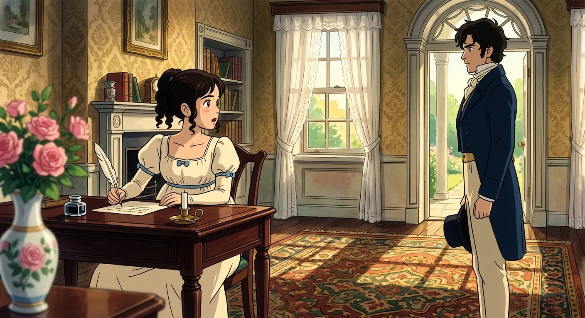
Awkward Silences and Hidden Intentions
Elizabeth found herself quite alone one morning at Hunsford, engaged in correspondence with Jane, while Charlotte and Maria had gone into the village on some errand or other. The ring at the door startled her, and supposing it must be Lady Catherine come to impose herself, Elizabeth hastily concealed her half-finished letter to escape the inevitable impertinent inquiries. But the figure who entered was not Lady Catherine at all—it was Mr. Darcy, entirely alone, looking nearly as astonished to find her unaccompanied as she was to see him.
What followed was an interview of considerable awkwardness. After the briefest civilities regarding Rosings, they seemed destined to sink into utter silence. Elizabeth, casting about for anything to discuss, ventured to mention the hasty departure from Netherfield the previous November and to inquire after Mr. Bingley's intentions regarding the place. Darcy's replies were maddeningly brief—he believed Bingley might give up Netherfield entirely—and Elizabeth, afraid of pressing too far on the subject of his friend, resolved to leave the burden of conversation squarely upon his shoulders.
He took up the challenge with admirable effort, commenting on the Parsonage and Mr. Collins's good fortune in his choice of wife. Elizabeth could not resist observing that Charlotte was one of very few sensible women who would have accepted Mr. Collins, or could have made him happy—a remark delivered with her characteristic mixture of fondness and irony. When Darcy suggested that Charlotte must find comfort in being settled so near her family, Elizabeth disputed the notion that fifty miles could be called near, and a curious little exchange ensued about distance, fortune, and attachment to home. At one point, Darcy drew his chair closer to her, observing pointedly that *she* could not have such strong local attachment, that she could not have always been at Longbourn—but something in the moment shifted, and he withdrew, taking up a newspaper and resuming a colder tone until Charlotte and Maria returned and rescued them all from the strange encounter.
Charlotte's immediate suspicion was that Mr. Darcy must be in love with Elizabeth, though his silence during the visit made even that romantic hypothesis seem improbable. They settled at last upon the notion that he had simply nothing better to do—a conclusion supported by the continued visits of both Darcy and Colonel Fitzwilliam to the Parsonage in the days that followed. Colonel Fitzwilliam's motives were transparent enough; he clearly delighted in Elizabeth's company, and she found herself reminded of Wickham by his easy manners, though she thought Fitzwilliam perhaps the more informed of the two. But Darcy remained an enigma—sitting in brooding silence, speaking only from necessity, watching Elizabeth with a gaze that Charlotte could not quite interpret as admiration.
Charlotte, ever practical in her affections, began to entertain schemes for Elizabeth's future happiness, weighing the merits of Colonel Fitzwilliam's pleasantness against Mr. Darcy's considerable church patronage—though she dared not press the matter too far, lest she raise hopes destined for disappointment.
And so the days continued, with visits growing more frequent and glances more difficult to read, as the quiet currents beneath the surface at Hunsford began to stir toward something neither Elizabeth nor Darcy could yet name.
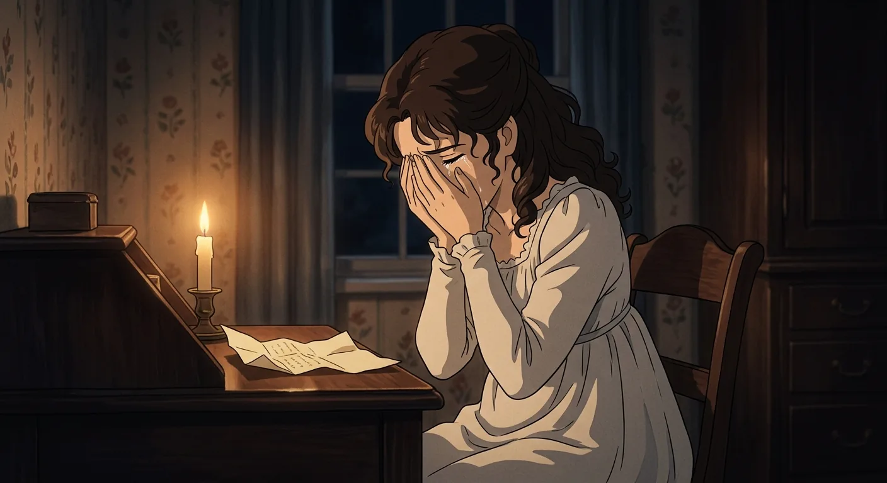
Unexpected Encounters and Revealing Conversations
During her daily rambles through the park at Hunsford, Elizabeth found herself crossing paths with Mr. Darcy far more often than chance alone could account for. Though she had taken care to inform him that these particular walks were her favourite haunt—hoping, perhaps, to discourage his presence—he appeared again and again, turning back to accompany her with an odd persistence that puzzled her exceedingly. Their conversations were neither long nor particularly animated, yet Elizabeth could not help but notice the peculiar nature of his questions: her pleasure in Kent, her fondness for solitary exercise, her thoughts on the Collinses' domestic arrangements. Stranger still was his apparent assumption that she might one day return to Kent as a guest at Rosings itself. Elizabeth, attempting to make sense of such intimations, wondered if Colonel Fitzwilliam might be the object of his meaning—a supposition that unsettled her more than she cared to examine.
It was Colonel Fitzwilliam, in fact, whom she encountered on another of her walks, her spirits already lowered by the melancholy tone of Jane's most recent letter. Their conversation turned easily to the subject of Mr. Darcy—his fondness for arranging matters to his own liking, his wealth affording him liberties that others could not claim. The Colonel spoke with some feeling of the constraints placed upon younger sons, confessing that men in his position could not marry where they chose. Elizabeth coloured at this, uncertain whether she was meant to receive the observation as a personal caution, but she recovered her composure swiftly, turning the exchange into light raillery.
Yet what followed stripped away all lightness from her heart. Colonel Fitzwilliam, speaking without any consciousness of the wound he inflicted, mentioned that Darcy had lately congratulated himself upon saving a friend from an imprudent marriage—separating him from a young lady whose connections presented strong objections. Elizabeth required no names to understand the truth: Mr. Darcy had been the architect of Jane's misery, not merely an accessory to Miss Bingley's schemes. His pride, his insufferable presumption in judging what was suitable for his friend's happiness, had torn Bingley from Jane and left her sister to suffer in quiet dignity.
Her heart swelled with indignation as she walked on in silence, barely able to maintain the civility the conversation required. Once alone in her room, she gave full vent to her feelings, reviewing all that she knew of Darcy's character and finding in it the confirmation of every unkind suspicion she had ever harboured. The objections against Jane could only have been her family's want of consequence—an uncle in trade, a mother wanting in propriety—nothing that touched Jane's own excellence of mind and sweetness of disposition. The agitation brought on such a headache that Elizabeth could not bear the thought of facing Darcy that evening at Rosings, and she remained behind at the Parsonage, leaving Mr. Collins to fret over Lady Catherine's certain displeasure at her absence.
Little did Elizabeth know that the evening ahead would bring a confrontation far more momentous than any she could have anticipated.
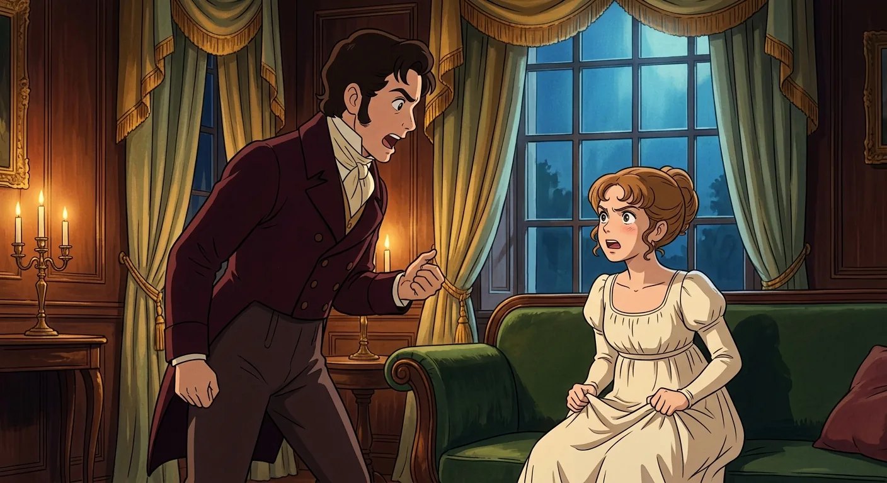
A Most Unwelcome Proposal
Left alone after the others' departure, Elizabeth set herself to a task designed to stoke the flames of her indignation against Mr. Darcy. She pored over every letter Jane had written since her arrival in Kent, searching each line for evidence of suffering. Though Jane had voiced no direct complaint, Elizabeth now perceived what her earlier, more careless readings had missed—an absence of that natural cheerfulness which had always characterized her sister's correspondence, a heaviness where lightness ought to have been. Mr. Darcy's proud confession of having separated Jane from Bingley lent fresh sharpness to every melancholy phrase, and Elizabeth found some small comfort only in knowing that his visit to Rosings would soon conclude, and that she herself would shortly return to Jane's side.
Her thoughts turned briefly to Colonel Fitzwilliam, who would depart alongside his cousin, but she dismissed any stirring of regret. He had made his lack of serious intentions plain enough, and she refused to waste sentiment on the matter.
The sound of the door-bell interrupted her reflections. She half-expected the Colonel himself, perhaps come to inquire after her health—but the figure who entered the room banished all such suppositions instantly. Mr. Darcy stood before her, agitated and restless, his manner betraying some inner tumult she could not immediately comprehend. He inquired after her health with hurried formality; she answered with cold civility. He sat, then rose, pacing the room in evident distress while Elizabeth watched in bewildered silence.
At last, he approached her and spoke words that struck her dumb with astonishment: he declared his ardent love, confessed he had struggled against his feelings in vain, and asked for her hand in marriage. Yet even as he laid bare his heart, he dwelt upon her inferior connections, the degradation such a match would represent, the obstacles his judgment had long opposed to his inclination. His proposal was less a tender entreaty than a catalogue of condescensions, and Elizabeth's initial surprise soon curdled into resentment.
She refused him with deliberate composure, declaring she felt no gratitude for sentiments so unwillingly bestowed. His astonishment gave way to wounded pride, and he demanded to know why she rejected him with so little civility. Elizabeth, her anger now fully kindled, confronted him with his crimes—his role in destroying Jane's happiness, his cruel treatment of Mr. Wickham. Darcy admitted freely to separating Bingley from Jane, professing he had acted in his friend's best interest. When Elizabeth pressed him on Wickham's misfortunes, he responded with barely concealed contempt, offering no defense but scorn.
The confrontation reached its bitter crescendo when Elizabeth declared him the last man in the world she could ever be prevailed upon to marry. Stung at last beyond endurance, Darcy offered a curt farewell and departed, leaving Elizabeth alone with the tumult of her emotions. She wept for half an hour, astonished by what had passed—that such a proud man had loved her, yet equally certain that his pride, his cruelty, and his unrepentant arrogance rendered him wholly undeserving of her regard.
When the sound of Lady Catherine's carriage reached her ears, Elizabeth fled to her room, unwilling to face Charlotte's observant eyes while her spirits remained in such violent disorder—and wholly unprepared for whatever consequences this extraordinary evening might yet bring.
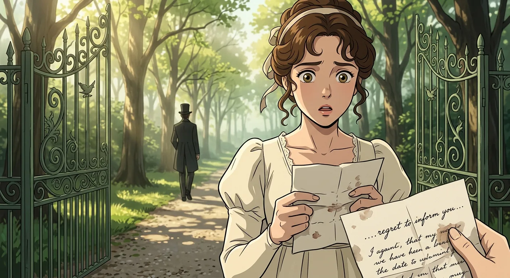
A Letter Demands Her Justice
Elizabeth woke still haunted by the extraordinary events of the previous evening, her mind turning over the same thoughts that had finally permitted her to close her eyes. Rest had brought no clarity—only the persistent astonishment at what had passed between herself and Mr. Darcy. Finding herself wholly unfit for any occupation, she resolved after breakfast to seek what solace she might in air and exercise.
She had nearly reached her favourite walk when the unwelcome recollection that Mr. Darcy sometimes frequented those grounds arrested her steps. She turned instead up the lane leading farther from the main road, keeping the park paling as her boundary, and passed through one of the gates onto the grounds. The morning was uncommonly pleasant; five weeks in Kent had transformed the countryside, and the early trees were daily increasing in verdure. Elizabeth paused at the gates to admire the prospect before her—and it was then she caught a glimpse of a gentleman moving through the grove that edged the park.
Fearing it might be Mr. Darcy, she immediately began to retreat, but the figure advanced with such purpose that escape proved impossible. He called her name, and though she had turned away, she found herself moving again towards the gate. He reached it just as she did, and with a look of haughty composure, held out a letter, which she took instinctively. "I have been walking in the grove some time, in the hope of meeting you," said he. "Will you do me the honour of reading that letter?" With a slight bow, he disappeared into the plantation before she could respond.
Elizabeth opened the letter with no expectation of pleasure but the keenest curiosity. Two sheets written in a close hand, the envelope itself covered—he had much indeed to say. The letter, dated from Rosings at eight o'clock that morning, began with assurances that she need not fear any renewal of his addresses. He wrote only because his character demanded it, and he claimed her attention not as a suitor, but in the name of justice.
He addressed the two charges she had levelled against him. First, regarding his separation of Mr. Bingley from Jane, he confessed freely to his interference, explaining that he had observed no sign of particular regard on Jane's part—her serene countenance had convinced him her heart was not touched. He acknowledged the objectionable behaviour of her mother and younger sisters as additional reasons for discouraging the match, though he was careful to exempt Elizabeth and Jane from such censure. He admitted further that he had concealed from Bingley the knowledge of Jane's presence in London, a deception he now allowed might have been beneath him.
The second accusation—that he had ruined Mr. Wickham—he refuted at greater length and with greater feeling. He laid out the whole history: how his own father had supported Wickham's education, how Wickham had declined the church living intended for him in favour of three thousand pounds, how he had squandered that sum and then returned demanding the living after all. But the most painful revelation Darcy saved for last: not a year before, Wickham had nearly succeeded in persuading Darcy's young sister Georgiana—then but fifteen—to elope with him, his object being her fortune of thirty thousand pounds and, Darcy suspected, revenge upon Darcy himself.
He closed by offering Colonel Fitzwilliam as witness to the truth of all he had related, and entrusted his honour and his sister's secret to Elizabeth's keeping.
The letter concluded, but its contents would not so easily be set aside—Elizabeth had scarcely begun to comprehend all that she had read.
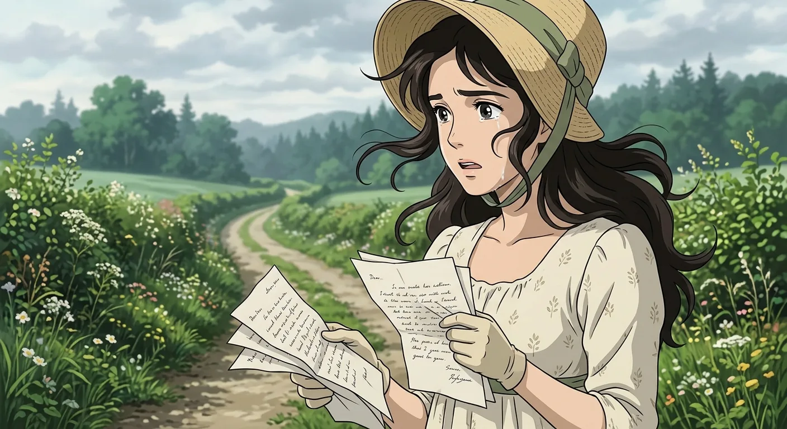
Prejudice Shattered by Painful Truth
When Elizabeth received Mr. Darcy's letter, she had formed no expectation of what it might contain, certainly not a renewal of his suit. Yet whatever she had imagined, nothing could have prepared her for the contrariety of emotions the pages would excite within her breast.
She began reading with all the prejudice of wounded pride, steadfastly convinced that no explanation could justify his conduct, that any apology must be veiled in shame. His account of separating Jane from Mr. Bingley she dismissed at once—his belief in her sister's insensibility she pronounced false, his enumeration of the Bennet family's deficiencies insufferable. His tone struck her as haughty rather than penitent, all pride and insolence, and she found nothing in his words to satisfy her sense of injury.
But when she came to the matter of Mr. Wickham, her feelings grew more acutely painful and far more difficult to define. Here was a relation of events that, if true, must overthrow every cherished opinion she had formed. Astonishment, apprehension, and even horror oppressed her as she read. She wished desperately to discredit it all, crying aloud that it must be the grossest falsehood. She thrust the letter away, vowing never to look upon it again.
Yet within half a minute, she had unfolded the pages once more.
With forced composure, Elizabeth commanded herself to examine every sentence relating to Wickham. She compared Darcy's account with what Wickham himself had told her—and found, to her mounting dismay, that the particulars aligned until they reached the matter of the living and the three thousand pounds received in its stead. She deliberated, she weighed each circumstance with what she meant to be impartiality, but on both sides it was only assertion against assertion. Still she read on, and every line proved more clearly that the affair she had thought impossible to represent favourably was capable of rendering Darcy entirely blameless.
She struggled to recall some instance of Wickham's goodness, some distinguished trait of integrity that might rescue him from these accusations. But no such recollection befriended her. She could summon only his charming countenance and pleasing address—nothing of more substantial virtue than the general approbation of the neighbourhood. The story of his designs upon Miss Darcy found confirmation in what Colonel Fitzwilliam had shared only the morning before, and Elizabeth was forced to acknowledge that Darcy would never have hazarded such a proposal without assurance of his cousin's corroboration.
Memory after memory returned to condemn her former favourite. She recalled Wickham's impropriety in confiding such matters to a stranger upon their first meeting, his boast of standing his ground against Darcy though he had avoided the Netherfield ball entirely, his convenient silence about Darcy's character until the family had quit the country. His attentions to Miss King now appeared hatefully mercenary; his behaviour toward herself, mere vanity.
Elizabeth grew absolutely ashamed. "How despicably have I acted!" she cried to herself. "I, who have prided myself on my discernment! Till this moment, I never knew myself."
Turning her thoughts to Jane and Bingley, she reread Darcy's explanation with altered eyes. She could not deny the justice of his observations about her sister's reserved manners, nor could she escape the mortifying truth of his reproaches against her family's conduct at the Netherfield ball. The shame was severe, the depression beyond anything she had ever known.
After two hours wandering the lane, reconciling herself as best she could to so sudden and important a change, Elizabeth returned home resolved to appear cheerful. She learned that both gentlemen from Rosings had called—Darcy briefly to take his leave, Colonel Fitzwilliam for nearly an hour hoping for her return. Yet Elizabeth could only affect concern at missing them; in truth, she rejoiced, for Colonel Fitzwilliam was no longer an object of interest. She could think only of her letter, and all it had revealed about others—and about herself.
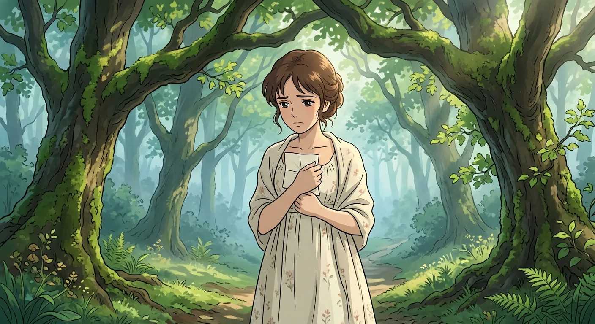
Unpleasant Recollections and Solitary Walks
The departure of Mr. Darcy and Colonel Fitzwilliam from Rosings set into motion the chapter's events, though their absence served chiefly as backdrop to Elizabeth's tumultuous inner world. Mr. Collins, ever vigilant in his attentions to his patroness, stationed himself near the lodges to witness their leave-taking and returned with the satisfying report that both gentlemen appeared well enough, considering the melancholy of their recent farewells. He then hurried to Rosings to offer consolation, returning with Lady Catherine's summons to dinner—her Ladyship finding herself so dull without her nephews that company became a necessity.
Elizabeth dined at Rosings with a secret amusement playing about her thoughts. She could not look upon Lady Catherine without reflecting that she might, had she chosen differently, have been presented as Darcy's future wife. The mere imagination of her Ladyship's indignation at such a prospect afforded Elizabeth considerable private entertainment.
Lady Catherine held forth at length upon how keenly she felt the loss of the young men, declaring that nobody suffered the absence of friends as acutely as herself. She remarked particularly upon Darcy's attachment to Rosings, observing that he seemed to feel the parting most deeply this year—a comment Elizabeth received with what composure she could muster. When Lady Catherine noticed Elizabeth's subdued spirits and attributed them to reluctance at leaving Kent, she pressed her to extend her stay, offering eventually to convey her to London in the barouche alongside Dawson, provided the weather proved cool enough to accommodate two young women who were, after all, neither of them large. Elizabeth declined with polite firmness, citing her father's wishes for her return.
Lady Catherine's attention then turned to the propriety of their travelling arrangements, insisting that Mrs. Collins must send a servant with them, for two young women travelling post alone was highly improper. She invoked Miss Darcy's example—how Georgiana had been attended by two men-servants on her journey to Ramsgate, as befitted her station. Elizabeth quietly assured her that her uncle would send a servant, which satisfied Lady Catherine enough to allow her to move on to detailed inquiries about horses, routes, and the proper method of packing gowns.
Yet beneath these social performances, Elizabeth's mind was ceaselessly occupied with weightier matters. In her solitary walks, she gave herself over to reflection, finding in those hours her greatest relief—though the recollections she indulged were far from pleasant. Darcy's letter she had nearly committed to memory, studying every sentence until her feelings toward its author shifted and swayed like weather. His manner of address still provoked her indignation, yet when she considered how unjustly she had condemned him, her anger turned inward. His attachment now excited her gratitude, his character her respect—though she could not approve him entirely, nor did she feel the slightest wish to see him again.
Her family's defects weighed upon her with fresh heaviness. Her father would never bestir himself to check her younger sisters' wildness; her mother remained insensible to any impropriety. Lydia and Kitty were beyond reform—ignorant, idle, and vain, forever chasing officers while their parents looked on with indifference or indulgence. And Jane—poor Jane, who had lost Bingley through no fault but her family's folly—remained a source of anxious regret. When Elizabeth added to all this her new understanding of Wickham's true character, it was little wonder her spirits, once so buoyant, now struggled to maintain even a tolerable cheerfulness.
The final evening at Rosings passed in the usual manner, with Lady Catherine dispensing travel advice so minutely that Maria felt compelled to repack her trunk entirely. At their parting, her Ladyship condescended to wish them well and invited them to return the following year, while Miss de Bourgh exerted herself sufficiently to curtsy and extend her hand—and with these modest civilities, Elizabeth's time in Kent drew to its close, her heart heavy with reflections that would accompany her homeward.
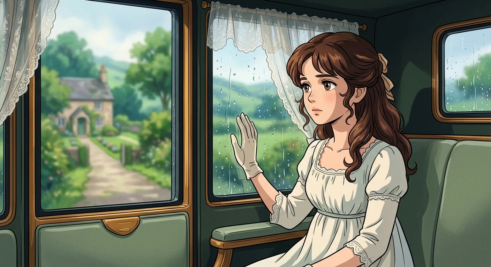
Farewells and Secrets to Keep
On the morning of Elizabeth's departure from Hunsford, Mr. Collins seized upon the quiet interval before breakfast to deliver what he considered the essential courtesies demanded by the occasion. With characteristic self-satisfaction, he assured Elizabeth that, despite the humble circumstances of the parsonage—its small rooms, few servants, and general obscurity—he trusted she had not found her stay entirely disagreeable. Indeed, he could not help but observe, with swelling pride, that their intimate connection with Rosings had surely elevated the visit beyond what such a modest household might otherwise provide. The privilege of Lady Catherine's frequent notice, he declared, was a blessing few could claim, and he walked about the room in an excess of feeling, quite overcome by the grandeur of his own situation.
Elizabeth, exercising that delicate art of uniting civility with truth, offered what sincere gratitude she could muster. She had genuinely enjoyed her six weeks with Charlotte, whose kind attentions had made the visit pleasant despite its peculiar trials. Mr. Collins, oblivious to any shade of irony, pressed on to assure his cousin that she might carry a favorable report of their domestic happiness back to Hertfordshire. He and Charlotte, he proclaimed, were perfectly matched in mind and temperament—designed for each other in every particular.
Elizabeth could honestly affirm that such harmony was indeed a great happiness, though she felt a pang of melancholy watching poor Charlotte, who entered the room with quiet composure. Her friend had chosen this life with clear eyes, and though she plainly regretted the departure of her visitors, she seemed content enough with her parish duties, her household management, and her poultry. It was not a fate Elizabeth could envy, but neither did Charlotte appear to seek compassion.
At length the carriage arrived, trunks were secured, and the moment of parting came. Mr. Collins escorted Elizabeth down the garden path, dispensing compliments and respects to be delivered to every member of her family, including the Gardiners, whom he had never met. Just as the carriage door was closing, he recalled with some alarm that they had neglected to leave any message for Lady Catherine and her daughter—an oversight he hastily corrected on their behalf.
As the chaise rolled away, Maria Lucas exclaimed over how swiftly the weeks had passed and how much she would have to relate. Elizabeth privately reflected on how much she would have to conceal. The journey passed quietly, and within four hours they arrived at the Gardiners' London residence, where Jane awaited them.
Elizabeth found her sister looking well, though the flurry of social engagements arranged by their generous aunt left little opportunity for deeper observation. She longed to confide in Jane about Mr. Darcy's astonishing proposal—the temptation to share such extraordinary news nearly overwhelmed her—but she remained uncertain how much to reveal, and she feared that any mention of the matter might lead her to speak of Bingley, reopening wounds better left untouched.
With Jane soon to accompany her back to Longbourn, Elizabeth resolved to wait, knowing that home would provide the leisure and privacy such confidences required.
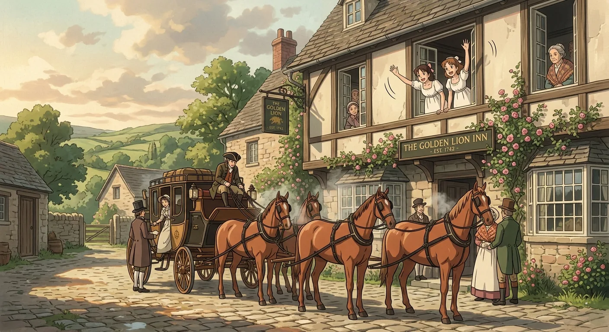
Lydia's Frivolous Homecoming
It was the second week of May when Elizabeth, Jane, and Maria Lucas departed from Gracechurch Street, bound for Hertfordshire and the familiar comforts of home. As their carriage approached the appointed inn, they spied Kitty and Lydia peering down from an upstairs dining-room window—those two giddy creatures having occupied themselves for the past hour with pursuits entirely suited to their dispositions: examining bonnets at the milliner's, watching soldiers stand guard, and arranging a salad of cucumber.
The younger sisters greeted them with triumphant pride, displaying a table of cold meats and declaring their intention to treat the party—though they should require a loan, having already exhausted their funds on purchases. Lydia exhibited her new bonnet with characteristic indifference to its plainness, announcing her plans to dismantle and reconstruct it, for what did it signify what one wore after the regiment departed Meryton in a fortnight?
This intelligence brought Elizabeth considerable satisfaction, though Lydia's subsequent scheme—that their father should take the whole family to Brighton, where the soldiers would be encamped—filled her with private horror. Brighton! A whole campful of officers for a family already compromised by their connections with one modest militia regiment!
At table, Lydia could scarcely contain herself with her news regarding Wickham: Mary King had been sent away to Liverpool, and thus Wickham was *safe*. Elizabeth noted wryly that Mary King was equally safe—from a connection imprudent as to fortune. Yet when Lydia dismissed the girl as a "nasty little freckled thing," Elizabeth felt the sting of recognition, for had not her own breast harbored similarly coarse sentiments, however differently expressed?
The journey home proved an endurance of Lydia's endless prattle—tales of dressing up Mr. Chamberlayne in women's clothes at Colonel Forster's, speculations on husbands, and the constant, unavoidable mention of Wickham's name. Elizabeth listened as little as she could manage.
Their reception at Longbourn was warm. Mrs. Bennet delighted in Jane's undiminished beauty, while Mr. Bennet quietly expressed his pleasure at Elizabeth's return. The dining room swelled with Lucases come to collect Maria and gather news, and amid this cheerful confusion, Lydia's voice rang loudest of all, recounting the morning's amusements to anyone who would attend. Mary's grave pronouncement that she would infinitely prefer a book fell upon entirely deaf ears.
That afternoon, Lydia pressed urgently for a walk to Meryton, but Elizabeth firmly opposed the scheme. The Miss Bennets should not appear to chase after officers within hours of arriving home—and Elizabeth had her own particular dread of encountering Wickham again. The regiment's approaching removal offered comfort beyond expression; in a fortnight they would be gone, and with them, she hoped, every source of plague on his account.
Yet she had scarcely settled back into the rhythms of Longbourn before discovering that the Brighton scheme was already a matter of frequent debate between her parents—her father clearly unmoved, her mother undeterred in her campaign, and the household poised once more on the edge of domestic upheaval.
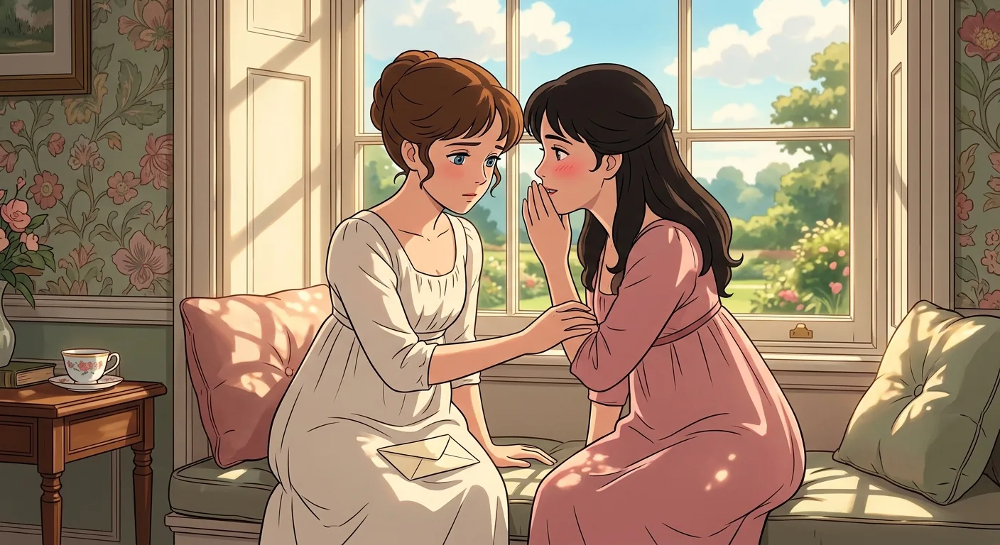
Sisters Share Shocking Secrets
Elizabeth could no longer contain herself. The weight of all she had witnessed and learned pressed too heavily upon her heart, and so, with careful deliberation, she resolved to unburden herself to Jane—though not entirely. She would speak of Mr. Darcy's astonishing proposal and her refusal, but every particular touching upon Jane's own situation with Mr. Bingley she would keep locked away, a secret still too tender to expose.
Jane's astonishment at hearing of Darcy's addresses was quickly tempered by her generous nature; that any man should admire her sister seemed perfectly natural to her. Yet she grieved for Mr. Darcy's disappointment, her kind heart aching for the pain Elizabeth's rejection must have caused him. When Elizabeth pressed her—did Jane blame her for refusing him? For speaking so warmly against Wickham?—Jane could offer no censure, only sympathy.
But it was the letter that truly shattered Jane's tranquility. Elizabeth recounted its contents regarding George Wickham, and poor Jane, who would have traversed the whole world believing mankind incapable of such concentrated villainy, found herself confronted with an evil she could scarcely comprehend. She laboured earnestly to find some error in the account, some way to preserve the goodness of both gentlemen, until Elizabeth cut through her sister's hopeful confusion with characteristic wit: there was only enough merit between the two men for one decent sort of fellow, and of late it had been shifting about considerably. She was now inclined to give it all to Mr. Darcy.
A smile was slow in coming to Jane's lips, but come it did. She mourned for Darcy's suffering—his disappointment compounded by Elizabeth's ill opinion and the pain of exposing his sister's near-ruin. Elizabeth, with her usual playful deflection, declared that Jane's abundant compassion quite relieved her of the necessity of feeling any herself. Yet beneath her archness lay genuine self-reproach; she confessed how uncomfortable, how truly unhappy she had been upon first reading that letter, with no Jane beside her to offer comfort or absolution.
The sisters turned to a matter of practical consequence: ought Wickham's true character be made known? After deliberation, they agreed it should not. Mr. Darcy had not authorized such disclosure, the neighbourhood's prejudice against him was too violent to overcome, and Wickham would soon depart with his regiment. Time would eventually reveal the truth, and they might then laugh at the general stupidity.
This conversation brought Elizabeth considerable relief, yet one burden she could not lay down. The portion of Darcy's letter concerning Bingley's affection for Jane—and his own interference—she dared not speak of. Only a perfect understanding between all parties could justify such a disclosure, and until that improbable day arrived, the knowledge remained hers alone.
Now settled at home, Elizabeth observed what she had long suspected: Jane was not happy. Her tender attachment to Bingley persisted with all the warmth and steadiness of a first love, and only her good sense prevented her from sinking into regrets that would have injured both her health and her family's peace. Mrs. Bennet, meanwhile, declared herself determined never to speak of the sad business again—immediately before speaking of it at considerable length, pronouncing Bingley undeserving and expressing her morbid certainty that Jane would die of a broken heart.
Elizabeth offered no reply to such comfort, and the conversation shifted to the Collinses and their household management, with Mrs. Bennet speculating bitterly on their expectations regarding Longbourn. The entail remained, as ever, a wound that would not heal.
As the days at Longbourn resumed their familiar rhythm, Elizabeth found herself caught between relief and restlessness, the secrets she still harboured casting long shadows over whatever peace she might have claimed.
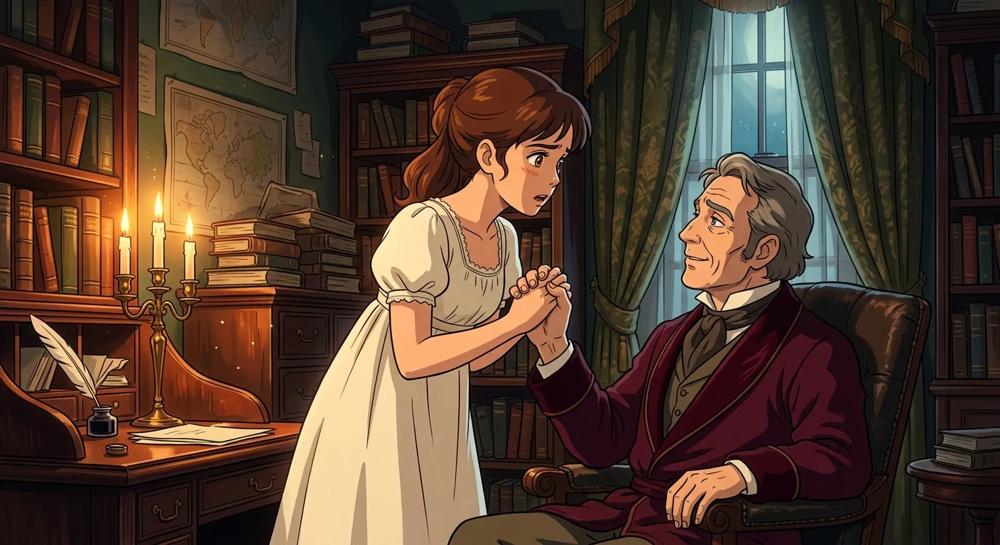
Lydia's Brighton Invitation Sparks Warning
The regiment's departure from Meryton cast a pall over the neighbourhood, reducing the young ladies of the district to universal dejection—all save Jane and Elizabeth, who maintained their composure with admirable steadiness. This sensible comportment earned them sharp reproaches from Kitty and Lydia, whose misery knew no bounds, and from Mrs. Bennet herself, who recalled with theatrical fondness her own heartbreak when Colonel Miller's regiment had departed five-and-twenty years prior.
The household echoed with lamentations and schemes for Brighton, that promised paradise of officers and sea-bathing, though Mr. Bennet remained unmoved by such appeals. Elizabeth could scarcely find amusement in these domestic theatrics, for they served only to deepen her mortification and confirm the justice of Mr. Darcy's objections to her family's conduct. Never had she been more inclined to forgive his interference in Bingley's affairs.
Lydia's gloom, however, proved short-lived. An invitation arrived from Mrs. Forster—wife of the colonel, a very young woman whose intimate friendship with Lydia had blossomed remarkably from a mere three months' acquaintance—to accompany her to Brighton. The household erupted accordingly: Lydia in rapturous ecstasy, Mrs. Bennet in maternal delight, and poor Kitty in bitter mortification at being passed over.
Elizabeth viewed this invitation with dread rather than celebration. Convinced it would prove the death-warrant of Lydia's common sense, she took the extraordinary step of privately counselling her father against permitting the journey. She laid before him the improprieties of Lydia's conduct, the dangers of Mrs. Forster's influence, and the certain mischief awaiting at Brighton. Yet Mr. Bennet met her earnest warnings with characteristic cynicism—Lydia would expose herself eventually, he reasoned, and better she do so with minimal expense to the family. When Elizabeth pressed further, speaking of the general disgrace that Lydia's wildness must bring upon them all, her father only teased her about frightened suitors. Her impassioned plea that both Lydia and Kitty would become the most determined, contemptible flirts—censured and despised wherever known—moved him to take her hand affectionately, but not to alter his course.
Elizabeth departed disappointed but resigned, having done her duty. Lydia, meanwhile, remained blissfully ignorant of her sister's intercession, lost in visions of Brighton's streets teeming with officers and herself flirting tenderly with at least six at once.
Elizabeth's final encounter with Wickham proved equally illuminating. Time and reflection had stripped away her former partiality, revealing the affectation beneath his gentleness. His presumption in renewing attentions—as though her vanity might be gratified at any moment by his notice—provoked rather than pleased her. At their last dinner, she deliberately mentioned her acquaintance with Colonel Fitzwilliam and Mr. Darcy at Rosings, observing with quiet satisfaction Wickham's alarm when she remarked that Darcy improved upon acquaintance. His attempts to attribute any improvement to mere calculation fell upon knowing ears, and Elizabeth could only smile at his continued pretensions.
They parted with mutual civility and, perhaps, mutual relief. Lydia's farewell proved characteristically noisy, her sisters' gentler adieus lost beneath the clamour—and so the household settled into a new quiet, awaiting whatever fresh disturbance the summer might bring.
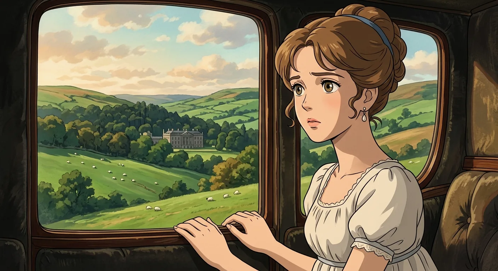
A Marriage's Lessons in Disappointment
Elizabeth Bennet had long observed the wreckage of her parents' marriage with a clear and unsparing eye. Her father, having been foolish enough in his youth to wed for beauty and the mere appearance of good temper, had discovered far too late that his wife possessed neither sense nor generosity of spirit. Whatever affection, whatever respect he might once have harboured had withered early, leaving him to seek his consolations elsewhere—in books, in the quiet pleasures of country life, and, rather less admirably, in the sport of ridiculing Mrs. Bennet's follies. Elizabeth, though grateful for her father's partiality toward her, could not help but perceive the cruelty in this—the way he had, by his mockery, exposed his wife to the contempt of her own children, and by his indolence, failed to guide his younger daughters toward anything resembling propriety.
The departure of the regiment from Meryton, which Elizabeth had anticipated with such relief after Wickham's removal, proved a hollow victory. Her mother and Kitty descended into relentless complaint, casting a pall over the household. Lydia, meanwhile, had gone off to Brighton with Mrs. Forster, her letters home revealing nothing but officers, new gowns, and the sort of breathless frivolity that promised future disgrace. Elizabeth could only console herself by looking ahead—to the northern tour she was to take with her aunt and uncle Gardiner, a scheme that now became the repository of all her hopes for happiness.
Yet even this pleasure was to be curtailed. A letter from Mrs. Gardiner brought the unwelcome intelligence that business would delay their departure and shorten their journey considerably. The Lakes must be given up; they would venture only as far as Derbyshire. Elizabeth bore the disappointment with her characteristic good temper, though she could not quite suppress a pang. Derbyshire, of course, brought with it certain associations—impossible to think of that county without thinking of Pemberley, and of its master.
When, after several weeks of waiting, the Gardiners at last arrived at Longbourn and the tour commenced, Elizabeth found in her aunt and uncle precisely the companions she could have wished—sensible, cheerful, and affectionate. Their route carried them through Oxford, Blenheim, and Warwick before bringing them into Derbyshire, where Mrs. Gardiner had once lived and wished to revisit. It was here that Elizabeth learned Pemberley lay but five miles distant from the little town of Lambton, and her aunt, with innocent enthusiasm, proposed they should see the place.
Elizabeth's alarm was immediate and profound. The very thought of encountering Mr. Darcy on his own grounds—after all that had passed between them—made her colour rise. She invented excuses, professed herself weary of grand houses, but Mrs. Gardiner would not be deterred. At last, Elizabeth resolved upon a stratagem: she would inquire privately whether the family was in residence. Upon learning from the chambermaid that they were not, her objections vanished entirely, replaced by a curiosity she could now safely indulge.
And so it was settled—to Pemberley they would go, and Elizabeth would at last behold the home of the man whose proposal she had so decidedly refused.
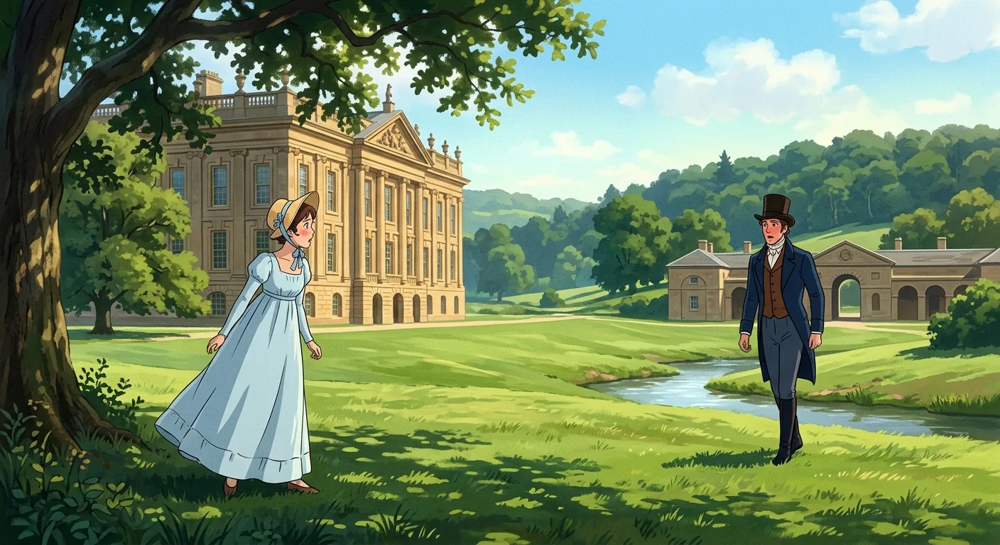
Pemberley Reveals Its Master's True Nature
Elizabeth approached Pemberley Woods with a flutter of nerves she could scarcely contain, her mind too full for conversation as the carriage wound through the vast park. When at last the house revealed itself—a handsome stone building set against wooded hills, with a stream swelling naturally before it, its banks neither formal nor falsely adorned—she found herself quite delighted. Here was a place where nature had been allowed to reign, where taste had not intruded upon beauty. And in that moment, gazing upon it all, she permitted herself to feel what she had not before: that to be mistress of Pemberley might indeed be something.
Inside, the respectable housekeeper Mrs. Reynolds led them through rooms that were lofty and elegant without being gaudy—a testament to their owner's refinement that Elizabeth could not help but admire. She thought with something like regret of what might have been, until she recollected that had she accepted Mr. Darcy, her dear aunt and uncle would have been lost to her, for she should never have been permitted to invite them. This was a fortunate thought indeed, and it saved her from dwelling too long in that dangerous territory.
But it was Mrs. Reynolds's account of her master that truly astonished Elizabeth. Here was praise most extraordinary—that he had never spoken a cross word in his life, that he was the sweetest-tempered, most generous-hearted boy who had grown into the best landlord and best master that ever lived. "Can this be Mr. Darcy?" Elizabeth wondered, listening with increasing amazement. The proud, ill-tempered man of her firmest opinion seemed to dissolve before this portrait of kindness and constancy. Even the housekeeper's dismissal of his reputation for pride—attributing it merely to his not rattling away like other young men—gave Elizabeth pause.
She lingered before his portrait in the gallery, contemplating features that wore a smile she remembered seeing directed at herself. A gentler sensation stirred within her than she had ever felt toward him, and she thought of his regard with a deeper gratitude, softening now what she had once called improper.
Then came the shock of shocks. Crossing the lawn toward the river, Elizabeth turned back to look once more at the house—and there was Mr. Darcy himself, emerged suddenly from the stables, not twenty yards away. Both blushed deeply. Both stood momentarily immobile. Yet when he approached, it was with civility so complete, so altered from their last bitter parting at Rosings, that Elizabeth scarcely knew what to make of it. She was mortified, convinced he must think she had thrown herself in his way, yet he spoke with a gentleness utterly foreign to her experience of him.
Their second meeting, when he sought her out along the river walk, proved still more remarkable. He asked to be introduced to her uncle and aunt—those very relations whose connection had once revolted his pride—and bore the revelation of their trade connections with fortitude. He invited Mr. Gardiner to fish his streams, conversed with genuine warmth, and finally, walking beside Elizabeth alone, asked if he might introduce his sister during her stay at Lambton. The compliment was extraordinary; it was, she understood, the highest kind.
As the carriage carried her away, Elizabeth could think of nothing but Mr. Darcy's altered manner and his astonishing wish for her to know Georgiana—a wish that could only have originated with him, and which meant, surely, that his resentment had not made him think ill of her after all.
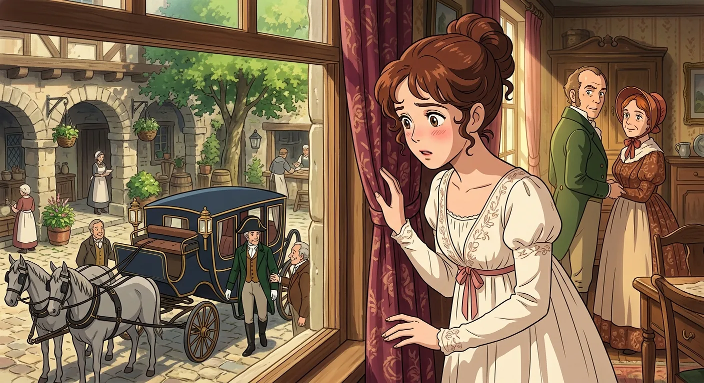
An Unexpected Visit at Lambton
Elizabeth had fully expected that Mr. Darcy would wait at least a day before bringing his sister to call upon her at the inn, and had therefore resolved to remain within sight of their lodgings throughout the morning. Yet her calculations proved entirely mistaken, for the visitors arrived on the very morning following the Gardiners' own arrival at Lambton. Elizabeth and her relations had only just returned from walking about the place with new acquaintances, and were preparing to dress for a dinner engagement, when the sound of a carriage drew them to the window. Elizabeth recognized the livery at once, and in communicating the honour about to be bestowed upon them, she imparted no small degree of astonishment to her uncle and aunt.
The Gardiners were all amazement—and Elizabeth's visible embarrassment, combined with the singular circumstances of the preceding day, opened to them a new and rather illuminating idea. Nothing had suggested it before, but they now perceived that such marked attentions from such a quarter could only be explained by supposing Mr. Darcy harboured a decided partiality for their niece. Elizabeth herself was in considerable perturbation, dreading that the brother's enthusiasm might have painted too favourable a picture of her, and fearing that every power of pleasing would desert her in the moment of greatest need.
When Miss Darcy and her brother appeared, the formidable introduction proved rather less daunting than anticipated. Elizabeth discovered with astonishment that Miss Darcy was quite as embarrassed as herself—not proud, as rumour had suggested, but merely exceedingly shy. She was tall and graceful, her figure womanly despite her being little more than sixteen, and her manners perfectly unassuming and gentle. Elizabeth found herself much relieved.
Bingley soon followed, and whatever anger Elizabeth had once harboured against him had long since dissolved. His unaffected cordiality, his good-humoured ease, and his friendly inquiries after her family disarmed her entirely. The Gardiners observed the whole party with lively attention, and soon drew from their observations the full conviction that Mr. Darcy, at least, knew what it was to love. Elizabeth, meanwhile, watched Bingley for any sign that his thoughts turned toward Jane—and was pleased to detect small intimations of tenderness and regret, particularly when he remarked with unusual precision that they had not met since the 26th of November at Netherfield.
Most striking of all was the transformation in Darcy himself. Elizabeth witnessed him seeking the acquaintance and courting the good opinion of the very relations he had once openly disdained, and the change struck so forcibly upon her mind that she could hardly conceal her astonishment.
The visitors stayed above half an hour, and upon departing extended an invitation to dinner at Pemberley. That evening, Elizabeth lay awake for two hours, endeavouring to understand her own heart. Hatred had long vanished; respect and esteem had replaced it. But above all, there was gratitude—gratitude for his continued love, his forgiveness of her harsh rejection, and his evident desire to preserve their acquaintance. She wished only to know how far she desired his happiness to depend upon herself.
The following morning, the ladies resolved to return Miss Darcy's civility with a call at Pemberley, while Mr. Gardiner departed to meet the gentlemen by the river.
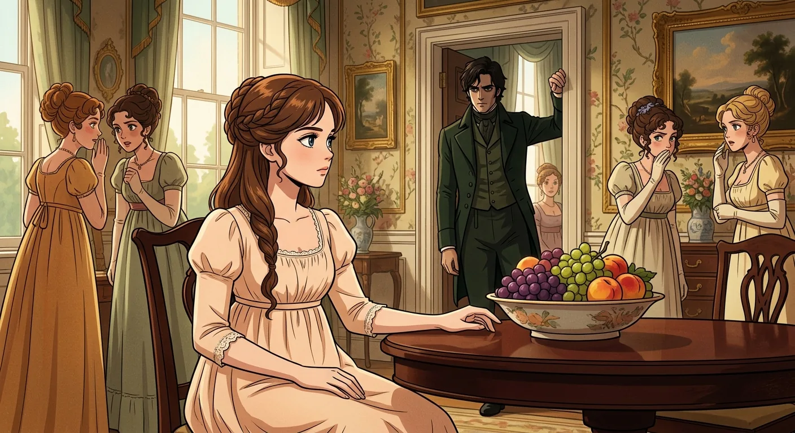
An Awkward Visit to Pemberley
Elizabeth arrived at Pemberley fully aware that her presence would be most unwelcome to Miss Bingley, whose dislike she now understood to spring entirely from jealousy. The visit began in a handsome saloon with windows opening onto the grounds, where Miss Darcy received them alongside Mrs. Hurst, Miss Bingley, and her London companion, Mrs. Annesley. Georgiana's manner, though civil, bore all the marks of painful shyness—that unfortunate diffidence which so often gives the appearance of pride to those inclined to perceive it. Elizabeth and Mrs. Gardiner, however, understood her better and felt only compassion.
The Bingley sisters acknowledged them with barely more than a curtsey, and an awkward silence settled over the room until Mrs. Annesley, proving herself the most genuinely well-bred among them, endeavoured to establish conversation. Elizabeth noticed Miss Bingley watching her every movement with jealous scrutiny, particularly when she addressed Miss Darcy. Yet Elizabeth's thoughts were elsewhere—fixed upon the door, wondering whether she wished or feared that Mr. Darcy might walk through it.
After a quarter hour of strained civility, refreshments appeared, and the party gathered round pyramids of grapes, nectarines, and peaches. It was then that Darcy entered, having left Mr. Gardiner fishing by the river upon learning of the ladies' visit. Elizabeth resolved immediately to appear perfectly at ease, though every eye in the room—especially Miss Bingley's—was fixed upon them both with undisguised curiosity.
Miss Bingley, her jealousy sharpened by observation, soon struck with malicious precision. She inquired after the militia's departure from Meryton, a veiled reference to Wickham designed to embarrass Elizabeth. The blow fell wide of its intended mark but struck others painfully—Darcy's complexion heightened, and Georgiana could not lift her eyes. Miss Bingley knew nothing of Georgiana's near-elopement with that very gentleman; she had aimed only to discompose Elizabeth and remind Darcy of her family's unfortunate connections.
Elizabeth's composure, however, quieted all agitation, and Miss Bingley's scheme achieved precisely the opposite of its intent—Darcy's attention fixed upon Elizabeth more warmly than before.
After the visitors departed, Miss Bingley gave full vent to her spite, criticising Elizabeth's appearance in terms Georgiana refused to echo, her brother's good opinion having entirely secured her own. When Darcy returned, Miss Bingley foolishly continued her attack, declaring Elizabeth brown, coarse, and devoid of beauty. Darcy bore it with cool indifference until she reminded him of his own former dismissal of Elizabeth's looks. At last provoked beyond restraint, he replied that whatever he had thought upon first acquaintance, he had for many months considered her one of the handsomest women of his acquaintance—and left Miss Bingley to the bitter satisfaction of having extracted a declaration that wounded no one but herself.
On the journey home, Elizabeth and Mrs. Gardiner discussed everything and everyone from the visit—except the one person who occupied both their minds entirely—each longing for the other to speak his name first.
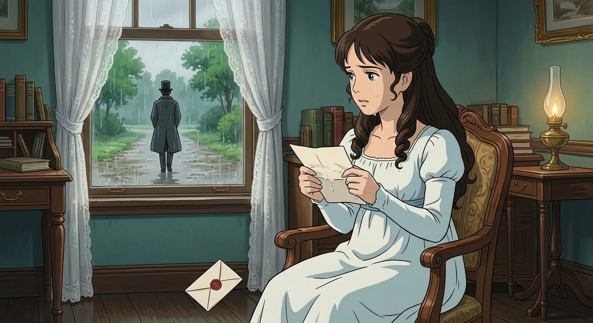
Lydia's Disgrace Revealed
Elizabeth's mounting disappointment at receiving no correspondence from Jane during her stay at Lambton dissolved entirely upon the third morning, when two letters arrived at once—one having been delayed by Jane's characteristically poor handwriting upon the direction. Her uncle and aunt departed for their walk, leaving Elizabeth to absorb the contents in solitude, and she turned first to the earlier letter, little suspecting the catastrophe its pages would unfold.
The opening contained the expected pleasantries of country life, but the latter portion, penned in evident distress, delivered intelligence of the most alarming nature. Lydia had fled Brighton with Wickham, bound, it was believed, for Scotland and a hasty marriage at Gretna Green. Jane's gentle optimism painted the affair as merely imprudent, her generous heart unwilling to think ill of Wickham despite all evidence to the contrary. Yet even as she wrote of hope, the agitation of her pen betrayed deeper fears.
The second letter obliterated what fragile comfort the first had offered. Colonel Forster had traced the runaways only as far as Clapham, where they had exchanged their chaise for a hackney-coach and vanished into the labyrinth of London. Denny's careless remark that Wickham never intended marriage had proved prophetic. There would be no Scottish wedding; there would, in all likelihood, be no wedding at all. Mrs. Bennet had taken to her room, Mr. Bennet was gone to London in frantic pursuit, and Jane—dear, steadfast Jane—begged for Elizabeth's return and their uncle's assistance with a desperation that pierced the heart.
Elizabeth had scarcely absorbed the horror of her sister's ruin when Mr. Darcy appeared at the door, his arrival marking the cruelest possible timing. Her pale countenance and trembling agitation alarmed him, and before she could compose herself, the whole wretched truth spilled forth—Lydia's elopement, Wickham's villainy, the family's disgrace laid bare before the very man whose good opinion she had only lately learned to value.
The anguish of confession gave way to bitter self-reproach. Had she but spoken of Wickham's true character, had she warned her family of his dissolute nature, this calamity might never have occurred. Yet even as she castigated herself, she observed Darcy's countenance darken, his brow contract in troubled meditation, and understood with painful clarity what his silence betokened. Whatever tender regard had blossomed between them at Pemberley must surely wither now, poisoned by the proof of her family's weakness and the assurance of their deepest disgrace. Never had she felt so acutely that she could have loved him as in this moment when all love must be rendered impossible.
Darcy departed with expressions of concern and promises of secrecy, yet his grave parting look spoke volumes of finality. Elizabeth watched him go with a regret sharpened by the certainty that their cordial acquaintance in Derbyshire had reached its unhappy conclusion. Within the hour, the Gardiners had settled their accounts, false excuses had been dispatched to their Lambton acquaintances, and Elizabeth found herself seated in the carriage, speeding toward Longbourn and whatever fresh miseries awaited her there.
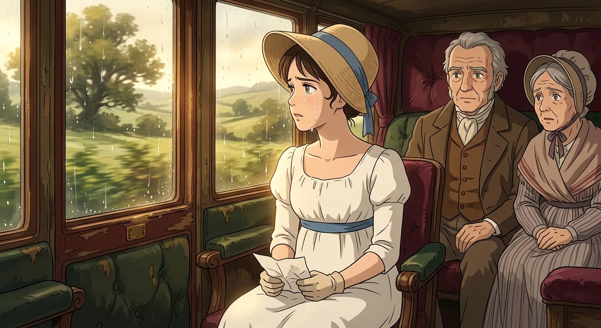
Doubt, Fear, and Wickham's True Character
As the carriage bore Elizabeth away from the town, her uncle Mr. Gardiner ventured to offer a thread of hope—however slender—that Wickham's intentions toward Lydia might not be so entirely dishonorable as they feared. What man of any sense, he reasoned, would risk such public disgrace, such certain exile from his regiment, for a girl who was neither without protection nor without friends who would surely step forward in her defense? Mrs. Gardiner found herself inclined to agree; the violation of decency required for such villainy seemed too great even for Wickham.
But Elizabeth, though her heart yearned to grasp at this comfort, could not quiet her understanding. She laid before them the cold arithmetic of Wickham's character: his debts, his profligacy, his steadfast devotion to his own interest above all else. What could Lydia offer him but youth and good humor? No fortune, no connections that might elevate him. And as for family interference—Elizabeth spoke with bitter clarity of her father's indolence, his long neglect of what transpired beneath his own roof. Wickham might well have calculated that Mr. Bennet would do as little about this matter as any father could.
When pressed on whether Lydia could truly have consented to live with a man outside of marriage, Elizabeth's eyes filled with tears. Her sister was young, thoughtless, given over entirely to vanity and flirtation since the regiment first came to Meryton. She had never been taught to think seriously on any subject, and Wickham possessed every charm of person and manner that could captivate an unguarded heart.
The conversation turned to what Elizabeth knew of Wickham's true nature—knowledge she had gained in Kent, too late to be of any use. She and Jane had kept his falsehoods secret, believing the regiment would soon depart and seeing no purpose in overturning the neighborhood's good opinion of him. That Lydia might be in any danger from such a man had never entered her thoughts. Now, fixed in the keenest anguish of self-reproach, Elizabeth could find no interval of ease throughout the journey home.
They reached Longbourn by dinnertime the following day, where Elizabeth rushed to embrace Jane, learning that no news had yet arrived of the fugitives. Mr. Bennet had gone to London, leaving behind only a brief note. Mrs. Bennet received them in her dressing-room with tears and lamentations, blaming everyone—the Forsters, fate, her own family—save the one person whose indulgent neglect had most contributed to Lydia's ruin. She spoke wildly of duels and death, of the Collinses turning them out of Longbourn, while Mr. Gardiner gently urged moderation and promised to assist in every effort to recover Lydia.
Jane shared what little intelligence she possessed: Colonel Forster had come himself to deliver Lydia's thoughtless letter, written in girlish excitement about eloping to Gretna Green, full of laughter and love for her angel Wickham. Elizabeth groaned at its contents—yet took some comfort that Lydia, at least, had believed herself bound for marriage. Mr. Bennet had departed for London in such shock and haste that Jane could barely discover his plans for tracing the couple through hackney coaches and posting houses.
As the household settled into its anxious vigil, the weight of what might yet unfold pressed heavily upon them all—and Elizabeth knew that whatever news the coming days might bring, the shadow of this disgrace would not easily be lifted.
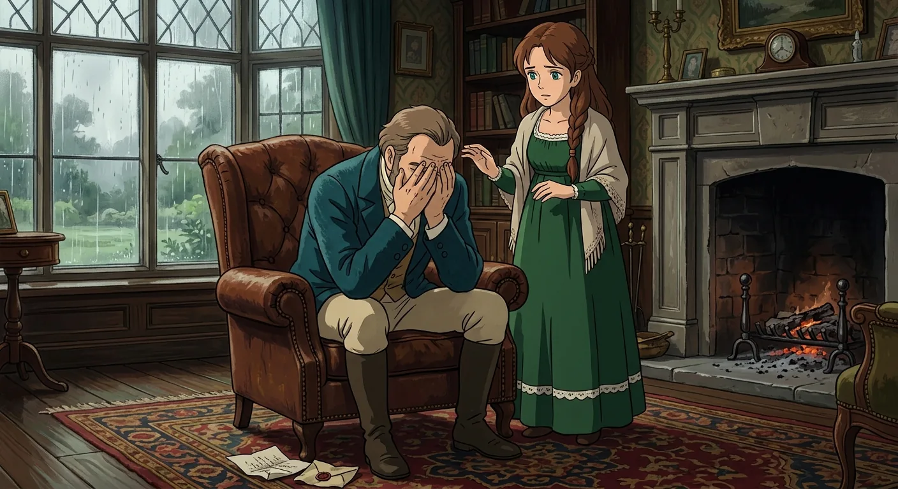
Whispers of Wickham's Wickedness Spread
The morning after Lydia's disgrace had fallen upon the house, the family at Longbourn waited with anxious hearts for word from Mr. Bennet, yet the post brought nothing—a silence more distressing than any ill news might have been. His family knew him for a negligent correspondent, but surely such extraordinary circumstances would compel him to write. They were left to conclude, unhappily, that he had nothing encouraging to report. Mr. Gardiner departed for London, promising to send constant intelligence and to persuade Mr. Bennet to return home—a prospect that brought Mrs. Bennet considerable relief, for she had convinced herself that her husband would otherwise certainly be killed in a duel with Wickham.
Mrs. Gardiner remained at Longbourn to comfort her nieces, sharing the burden of attending to their mother's nerves. Their other aunt, Mrs. Phillips, visited frequently with professed intentions of cheering them, though she invariably arrived bearing fresh tales of Wickham's villainy and departed leaving them more wretched than before. Indeed, all of Meryton now competed to blacken the name of the man they had so recently admired. He was declared to be in debt to every tradesman, his conduct with young women branded universally as seduction, and everyone suddenly recalled having always suspected his charming manner concealed a wicked heart. Elizabeth, though she credited only half these reports, believed enough to feel her sister's ruin more certain than ever.
A letter from Mr. Gardiner brought news that Mr. Bennet had exhausted himself searching Epsom and Clapham to no avail, and was now determined to inquire at every principal hotel in London—a measure his brother-in-law thought futile but assisted nonetheless. The letter requested Elizabeth's help in identifying any relations of Wickham who might know his hiding place, yet she could offer nothing useful, having never heard of any living connections.
Into this atmosphere of dread arrived a letter from Mr. Collins, a masterpiece of self-satisfied condolence. He expressed sympathy while pronouncing Lydia's death preferable to her disgrace, blamed the family's indulgence for her fall, and congratulated himself on having escaped marriage to Elizabeth—for otherwise he should have been entangled in their shame. Lady Catherine, he noted with evident satisfaction, agreed that one daughter's false step must injure all the others' prospects.
Further intelligence from Colonel Forster revealed Wickham possessed no relations and no intimate friends—and that he had left behind gaming debts exceeding a thousand pounds, rendering his motive for concealment doubly powerful. This news at last compelled Mr. Bennet to abandon the search and return home, leaving Mr. Gardiner to continue.
Upon his arrival, Mr. Bennet displayed his usual philosophical composure, though Elizabeth perceived beneath it genuine self-reproach. When she spoke gently of his ordeal, he silenced her: "Who should suffer but myself? It has been my own doing." He acknowledged her wisdom in having warned him against allowing Lydia to go to Brighton, and declared Kitty would henceforth be kept under strict regulation—no officers, no balls, no stirring from the house until she proved herself capable of rational conduct.
Meanwhile, Mrs. Gardiner departed for London carrying unanswered questions about Elizabeth and her Derbyshire acquaintance, for no letter had come from Pemberley, and Elizabeth herself knew that her spirits, already crushed by Lydia's disgrace, were made heavier still by the certainty that any connection with Mr. Darcy was now forever impossible.
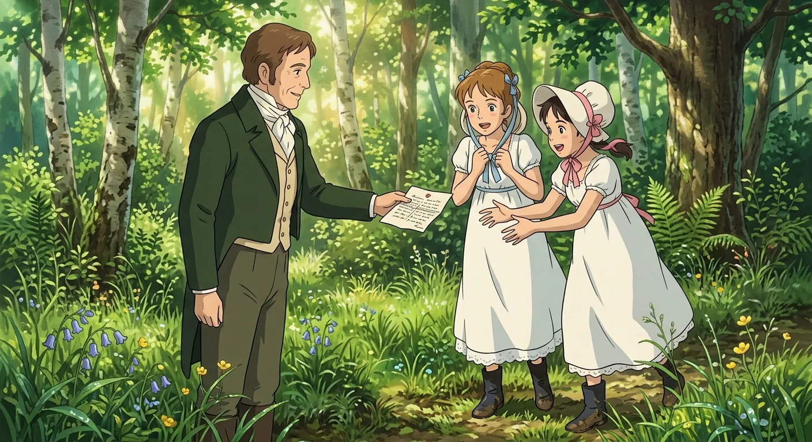
A Marriage Bargained and Bought
Two days after Mr. Bennet's return from his fruitless search in London, his daughters Jane and Elizabeth found themselves walking in the shrubbery when the housekeeper approached with curious urgency. Mrs. Hill, supposing the young ladies already informed, inquired after good news from town—and thus revealed that an express letter had arrived from Mr. Gardiner a full half-hour past. The sisters, startled into action, flew through the house in search of their father, racing from vestibule to breakfast-room to library before learning from the butler that he had gone walking toward the little copse.
Elizabeth, being the lighter and more accustomed to running, soon outpaced Jane and reached their father breathless, her eager questions tumbling forth. Mr. Bennet, with his characteristic dry composure, offered her the letter to read for herself, and when Jane joined them, bade Elizabeth read aloud—confessing he hardly knew himself what to make of its contents.
The letter brought extraordinary news. Mr. Gardiner had discovered Lydia and Wickham in London, and though they were not yet married nor had any apparent intention of becoming so, arrangements had been made. The terms were remarkably modest: Lydia was to receive her equal share of the family's five thousand pounds upon her parents' deaths, along with one hundred pounds annually during Mr. Bennet's lifetime. With these conditions met, the marriage would proceed, and Lydia would wed from the Gardiners' house in Gracechurch Street.
Jane immediately rejoiced, her generous nature eager to believe in Wickham's reformed character, but Elizabeth and their father shared a more skeptical view. Mr. Bennet declared himself ashamed that his brother-in-law had asked so little, recognizing what his daughters soon comprehended—that no man of sense would marry Lydia on such paltry terms unless a considerable sum had changed hands privately. Mr. Bennet estimated Wickham would not have consented for less than ten thousand pounds, a sum that must have come from Mr. Gardiner's own pocket.
The sisters walked back to the house in contemplative silence, each calculating the weight of their uncle's generosity and the impossibility of ever repaying such a debt. Elizabeth reflected bitterly on the irony of their situation—that they must rejoice in a marriage promising so little happiness, united as it was to a man of such wretched character.
When the news was carried to Mrs. Bennet, her response proved characteristically excessive. She erupted into transports of delight, caring nothing for the circumstances of the match, thinking only of wedding clothes and the glory of having a daughter married at sixteen. Her raptures over dear Wickham, her demands for calico and muslin, her schemes to spread the news throughout Meryton—all demonstrated her complete inability to comprehend the disgrace narrowly averted or the sacrifice their relatives had made.
Elizabeth, sickened by her mother's thoughtless joy, retreated to her own room to think in solitude. Poor Lydia's future could never be bright, yoked as she would be to Wickham's character and circumstances. Yet Elizabeth forced herself toward gratitude, remembering the fears of just two hours before, when they had imagined outcomes far more ruinous than this hasty, imprudent marriage.
Still, the mystery of Mr. Gardiner's intervention—and the true cost of securing Wickham's consent—remained unsolved, a question that would demand answers in the days to come.
A Father's Regret and Resolve
Mr. Bennet found himself confronting the bitter harvest of years spent without foresight. How many times had he wished he had set aside something annually, rather than living upon the whole of his income! Now, with Lydia's disgrace requiring remedy at another man's expense, that wish burned with particular sharpness. The satisfaction of having secured one of the most worthless young men in all of Britain as a son-in-law ought to have been his own burden to bear—not his brother-in-law's.
The matter of money had always been treated carelessly at Longbourn. When the Bennets first married, economy seemed unnecessary folly, for surely a son would come to break the entail and secure the family's future. Five daughters arrived instead, yet Mrs. Bennet had persisted in her certainty of a male heir until hope itself grew weary and departed. By then, saving had become impossible—Mrs. Bennet possessed no instinct for it, and only her husband's stubborn independence had kept them from outright ruin.
Mr. Bennet wrote his acceptance of the marriage terms with characteristic brevity, privately astonished at how little the arrangement would cost him. Lydia had always been an expensive creature; the hundred pounds a year promised to the couple would scarcely exceed what she had already consumed in board and pocket money. His chief desire now was to have as little trouble in the business as possible, and once his initial fury had spent itself, he returned gladly to his habitual indolence.
The neighbourhood received the news with that peculiar blend of disappointment and satisfaction unique to country gossips. A proper ruin would have provided better conversation, but a marriage to such a husband guaranteed sufficient misery to keep tongues wagging. Mrs. Bennet, meanwhile, emerged from her nervous confinement in triumphant spirits, her mind fixed upon fine muslins and grand houses, utterly unmarked by shame. Her husband's cold declaration that Wickham and Lydia would never be received at Longbourn struck her with amazement; his refusal to provide wedding clothes seemed to her a cruelty beyond comprehension.
Elizabeth suffered her own private anguish. She bitterly regretted having confided in Mr. Darcy about Lydia's disappearance, for now that marriage would give the affair a respectable conclusion, she wished desperately that he might never have known of it. Yet it was not exposure she feared most—it was the certainty that any connection between them had become impossible. Lydia's marriage to Wickham would bind their family to the very man Darcy most justly despised. She comprehended at last, with painful clarity, that Darcy was precisely the man who would have suited her—his judgment tempering her liveliness, her ease softening his reserve. But such a union could never be.
Mr. Gardiner's subsequent letter brought news of Wickham's transfer to the Regulars, stationed far in the north—an arrangement all sensible parties welcomed. Only Mrs. Bennet mourned the distance, lamenting that Lydia should be torn from pleasant officers and dear Mrs. Forster. After much persuasion from Jane and Elizabeth, Mr. Bennet consented to receive the newlyweds at Longbourn before their departure northward, though Elizabeth could not imagine why Wickham would agree to such a visit—nor could she view the prospect of seeing him again with anything but dread.
As the day of their arrival approached, Elizabeth steeled herself for an encounter that would test every measure of composure she possessed.
Lydia Returns Unashamed and Triumphant
The day arrived when Lydia and Wickham were to return to Longbourn as husband and wife, and Jane and Elizabeth awaited their coming with far greater apprehension than the bride herself could possibly have felt. Jane, whose tender heart always imagined the feelings of others through the lens of her own sensibility, dreaded what shame her youngest sister must surely endure. But Jane had gravely miscalculated.
The carriage rolled up to find the Bennet family assembled in the breakfast room—Mrs. Bennet all smiles and rapture, Mr. Bennet impenetrably grave, and the elder daughters tight with anxiety. Lydia burst through the door with all her usual wildness, utterly untamed and unabashed, demanding congratulations as though she had accomplished something worthy of admiration. Wickham followed with that easy, pleasing manner of his, claiming their relationship with smiles that would have charmed had his character been anything other than what it was. Elizabeth and Jane blushed deeply on behalf of the shameless pair, whose own cheeks suffered no variation of colour whatsoever.
The conversation flowed ceaselessly between Lydia and her mother, each talking faster than the other, while Wickham made pleasant inquiries of Elizabeth with an ease she could not match. Lydia spoke voluntarily of subjects her sisters would not have touched for the world—marveling at how three months felt like a fortnight, and how she had never dreamed of being married when she left, though she had thought it might be "very good fun."
When Lydia began boasting of how she had let down the carriage window to display her wedding ring to William Goulding, Elizabeth could endure no more and fled the room. She returned only to witness Lydia claiming precedence over Jane at dinner, announcing with anxious parade that as a married woman, she must now take her mother's right hand.
The visit was to last ten days, during which Mrs. Bennet paraded her daughter about the neighbourhood while Elizabeth observed what she had long suspected—Wickham's affection for Lydia was nothing equal to hers for him. The elopement had clearly been driven by the strength of Lydia's love and Wickham's desperate circumstances, not by any genuine attachment on his part.
Then came the revelation that would set everything spinning. Lydia, chattering about her wedding day, accidentally let slip that Mr. Darcy had been present at the church. Elizabeth's amazement was complete. What possible business could he have had there, among people with whom he had no connection? Lydia, realizing she had betrayed a secret, refused to say more, and Elizabeth was left burning with curiosity she could not satisfy.
Unable to bear such suspense, Elizabeth seized paper and pen, writing immediately to her aunt Gardiner to demand an explanation of this extraordinary intelligence—and privately resolving that if her aunt would not tell her honourably, she would resort to tricks and stratagems to uncover the truth.
Darcy's Secret Role Revealed
Elizabeth's eager anticipation proved well-founded when the letter from Gracechurch Street arrived, its considerable length promising revelation rather than denial. Retreating to the quiet sanctuary of the little copse, she settled upon a bench to absorb what her aunt had to impart—and the contents exceeded her wildest imaginings.
Mrs. Gardiner's account unfolded with delicious particularity the true architect of Lydia's salvation. Mr. Darcy, it transpired, had departed Derbyshire merely a day after the Gardiners themselves, driven to London by a resolution born of guilt and honour. He had traced the runaways through that disreputable former governess, Mrs. Younge, who had required considerable persuasion—bribery, Mrs. Gardiner suspected—before surrendering Wickham's direction. Finding Lydia obstinately determined to remain with her seducer, convinced of eventual marriage though careless of its timing, Darcy had turned his formidable will toward securing that union which Wickham had never intended to make.
The negotiations had been arduous. Wickham, shameless to the last, had confessed debts of honour pressing enough to force his resignation from the regiment, yet harboured fantasies of a more advantageous match elsewhere. Darcy's purse had proved the necessary instrument of persuasion—debts exceeding a thousand pounds discharged, another thousand settled upon Lydia, a commission purchased. When Mr. Gardiner had attempted to bear these burdens himself, Darcy's obstinacy—which Mrs. Gardiner now declared his true fault—had prevailed entirely. The gentleman would brook no interference in discharging what he deemed his own obligation, having kept Wickham's worthlessness concealed through misplaced pride.
The flutter this intelligence produced in Elizabeth's breast defied easy categorisation. Pleasure and pain, gratitude and mortification warred within her as she contemplated the magnitude of his exertions—supplicating a woman he despised, reasoning repeatedly with a man whose very name was punishment to pronounce, all for a girl he could neither regard nor esteem. Her heart whispered that he had done it for *her*, yet reason cautioned against such vanity. Brother-in-law to Wickham! Every species of pride must revolt from such a connection. Still, even granting his professed motives of honour and liberality, might not some remaining partiality for herself have assisted his endeavours? The thought was at once exquisitely painful and strangely precious.
Mrs. Gardiner's closing lines had carried their own quiet significance—her warm approbation of Darcy's character, her teasing observation that he had hardly mentioned Elizabeth's name, her pointed hope not to be excluded from Pemberley. The insinuations wanted no interpreter.
Elizabeth's solitary reflections met with unwelcome interruption when Wickham himself appeared upon the path. Their exchange, superficially cordial, bristled with unspoken knowledge. He spoke wistfully of Pemberley, of the living at Kympton that ought to have been his, of the quiet retirement so suited to his temperament. Elizabeth parried each thrust with cool composure, letting slip just enough to suggest she knew the truth of his forfeited preferment. They parted at the house with a handshake and her ironic invocation of sibling harmony, though Wickham hardly knew where to look.
The household had scarcely settled when a disturbance at the entrance announced new arrivals—and with them, the prospect of confrontations Elizabeth could neither predict nor prepare for.
Bingley's Return Stirs Old Hopes
The departure of Wickham and Lydia from Longbourn brought with it a peculiar mingling of relief and melancholy. Elizabeth found herself well satisfied that her pointed conversation with Wickham had achieved its purpose—he troubled her no more with references to their shared knowledge of his true character. As for Lydia, she bid farewell to her mother with characteristic carelessness, dismissing any notion of frequent correspondence with the airy observation that married women have precious little time for such things, while her sisters, having nothing better to occupy themselves, might write to her instead.
Wickham's parting proved far more agreeable in manner than in substance. He smiled handsomely and dispensed pretty words with practiced ease, prompting Mr. Bennet to observe with cutting irony that he defied even Sir William Lucas to produce a more valuable son-in-law—a fellow who simpers and smirks and makes love to them all.
Mrs. Bennet's spirits sank considerably at losing her daughter to the distant north, though her despondency proved mercifully short-lived. News soon reached Longbourn that Mr. Bingley was returning to Netherfield for the shooting season, and her mind opened again to the agitation of hope. She declared, with elaborate indifference that fooled no one, that she cared nothing for his coming, though she could not help but wonder what might happen.
Jane received the intelligence with visible discomfort, her colour changing despite her protestations that the news affected her with neither pleasure nor pain. Elizabeth watched her sister with knowing concern, perceiving that Jane's spirits were far more disturbed than she would acknowledge. The poor girl dreaded not the meeting itself, but the perpetual speculation it inspired—particularly from their mother, who meant well but could not comprehend the suffering her eager machinations caused.
When Bingley arrived at last, Mrs. Bennet's schemes were thrown into delightful confusion by an unexpected circumstance—Mr. Darcy accompanied him. Elizabeth, having gone to the window at her mother's bidding, sat down again by Jane with a flutter of astonishment that nearly equaled her confusion. To Jane, Darcy remained merely the proud man whose proposal Elizabeth had refused; she knew nothing of his altered behaviour in Derbyshire, nothing of his extraordinary service to their family in the matter of Lydia's disgrace.
The visit that followed proved exquisitely painful. Mrs. Bennet, ignorant that she owed Darcy the preservation of her favourite daughter from irremediable infamy, received him with cold ceremony while lavishing embarrassing civility upon Bingley. She spoke thoughtlessly of Lydia's marriage, of Wickham's friends—or lack thereof—and Elizabeth burned with shame at every pointed remark.
Darcy himself remained grave and largely silent, his manner more reminiscent of their earliest acquaintance than of their warmer meetings at Pemberley. Elizabeth could not determine whether his reserve stemmed from her mother's presence or from some cooling of his affections. Yet amidst her misery, she observed with relief that Bingley's admiration for Jane had plainly rekindled—every five minutes seemed to bring him more attentively to her side.
The gentlemen departed with an invitation to dine at Longbourn, and Elizabeth was left to wonder whether this return might herald the renewal of old hopes—or merely fresh occasions for mortification.
Teasing Silence and Uncertain Hearts
The moment their visitors departed, Elizabeth escaped into the open air, ostensibly to recover her spirits, though in truth she wandered only to brood more thoroughly upon the very subjects that troubled her. Mr. Darcy's behaviour during the visit had left her utterly confounded. He had come, yet he had been silent, grave, indifferent—what purpose could such a call possibly serve? She vexed herself with questions she could not answer. He had been perfectly amiable to her uncle and aunt in town, so why should he now treat her with such coldness? If he feared her, why come at all? If he no longer cared for her, why this strange reserve? "Teasing, teasing man!" she declared to herself, resolving firmly to think no more upon him—a resolution that lasted precisely as long as it took for Jane to join her.
Jane approached with a cheerful countenance, evidently better satisfied with the visit than her sister. She pronounced herself perfectly easy now that the first awkward meeting with Mr. Bingley had passed, confident that any future encounters would demonstrate to all the world that they met merely as common acquaintances. Elizabeth could not help but laugh at such self-deception, warning Jane that she stood in very great danger of making Bingley as desperately in love with her as ever before.
Tuesday brought the dinner party at Longbourn, and with it, fresh cause for both hope and frustration. Elizabeth watched eagerly as Bingley entered the dining room, hesitating briefly before Jane's smile decided the matter—he placed himself beside her, just as he had always done. Elizabeth glanced triumphantly toward Darcy, who bore the sight with noble indifference, though Bingley himself cast half-laughing, anxious looks at his friend, as if seeking permission for his own happiness.
Throughout dinner, Bingley's admiration for Jane was evident, if more guarded than formerly, and Elizabeth allowed herself to believe that their happiness might yet be secured. Her own spirits, however, found little to animate them. Darcy sat as far from her as the table permitted, trapped beside Mrs. Bennet, whose cold ungraciousness toward him pained Elizabeth deeply. She longed to tell him that his extraordinary kindness to their family was neither unknown nor unfelt.
The evening proved a study in thwarted hopes. Elizabeth waited anxiously for an opportunity to speak with Darcy, but the ladies crowded so closely together at the tea table that no chair could admit him near her. When he did approach briefly to return his coffee cup, their exchange was painfully stilted—a few words about his sister at Pemberley, then silence, then he walked away. Later, her mother's insistence on making up whist tables claimed him entirely, and Elizabeth found herself condemned to spend the remainder of the evening separated from him, with nothing to comfort her but the occasional notice that his eyes turned toward her side of the room as frequently as her own wandered toward his.
Mrs. Bennet declared the evening an unqualified triumph, rhapsodizing about the venison and partridges while predicting Jane's imminent residence at Netherfield. Jane herself insisted to Elizabeth that she had learned to enjoy Bingley's conversation without any romantic expectations whatsoever—a protestation so unconvincing that Elizabeth could only tease her for it, though with an edge of earnestness beneath her playfulness.
As the sisters parted for the night, Elizabeth's own heart remained as unsettled as ever, the question of Darcy's intentions no clearer than before, even as events around them seemed to be quickening toward some resolution.
Mrs. Bennet's Schemes Bear Fruit
The days following Mr. Darcy's departure brought Mr. Bingley calling at Longbourn once more, this time quite alone, his friend having gone to London with promises to return within the fortnight. He sat with the family above an hour, displaying remarkably good spirits, and though Mrs. Bennet's invitation to dinner was declined with profuse apologies of a prior engagement, she pressed him for the morrow—and found him entirely at liberty.
He arrived the next day in such eager haste that the ladies remained half-dressed. Mrs. Bennet flew to her daughters' chamber in a flutter of dressing-gown and unfinished hair, urging Jane to make haste with such frantic insistence that poor Kitty was dismissed with an impatient "Oh! hang Kitty!" Jane, however, would not descend without one of her sisters, refusing to submit entirely to her mother's transparent machinations.
That evening brought fresh attempts at contrivance. With Mr. Bennet retired to his library and Mary gone to her instrument, Mrs. Bennet sat winking and gesturing at Elizabeth and Kitty with all the subtlety of a woman who possessed none. When Kitty innocently inquired what she was meant to do, her mother denied any winking whatsoever—then promptly spirited her from the room and called Elizabeth away moments later, leaving Jane and Bingley quite alone.
Yet Mrs. Bennet's schemes proved ineffectual that night. Bingley was everything charming—agreeable, cheerful, forbearing with remarkable patience the mother's officiousness and silly remarks—but no declaration came. Still, an engagement was secured: he would shoot with Mr. Bennet the following morning.
After that day, Jane spoke no more of indifference. Elizabeth went to bed believing all must speedily conclude, tolerably persuaded that whatever transpired had Mr. Darcy's blessing.
The morning's shooting proved unexpectedly pleasant for Mr. Bennet, who found Bingley neither presumptuous nor foolish—indeed, quite communicative and agreeable. Bingley returned for dinner, and Mrs. Bennet's machinations resumed. Elizabeth, having a letter to write, removed herself to the breakfast-room, unable to counteract schemes she found rather tiresome.
Upon returning, she opened the drawing-room door to find her sister and Bingley standing together at the hearth, their faces flushed with evident emotion, hastily turning from one another. Before Elizabeth could retreat, Bingley whispered something to Jane and fled the room entirely.
Jane, radiant with happiness she could scarcely contain, instantly embraced her sister and declared herself the happiest creature in the world. "'Tis too much! By far too much," she cried. "I do not deserve it. Oh, why is not everybody as happy?"
She hastened to her mother while Bingley sought Mr. Bennet's blessing. Elizabeth, left alone, smiled at how swiftly an affair concluded that had caused months of suspense and vexation—the end of all his friend's anxious circumspection, all his sister's falsehood and contrivance.
The evening proved one of uncommon delight. Mrs. Bennet's approval flowed ceaselessly, Mr. Bennet offered dry congratulations tempered with gentle teasing about their compliant natures and likely financial imprudence, and Jane glowed with such sweet animation as made her handsomer than ever. Wickham and Lydia were quite forgotten; Jane reigned as the undisputed favourite child.
From that day forward, Bingley became a daily fixture at Longbourn. In quiet moments, Jane confided to Elizabeth that Bingley had known nothing of her presence in London the previous spring—his sisters' doing, certainly—and that only his modest belief in her indifference had kept him away.
Elizabeth was pleased he had not betrayed Darcy's interference, knowing such knowledge must prejudice even Jane's generous heart. The neighbourhood soon buzzed with whispered congratulations, pronouncing the Bennets the luckiest family in the world—though weeks earlier, they had been marked for certain misfortune.
Yet even as one sister's happiness seemed secured beyond doubt, Elizabeth could not help but wonder what Mr. Darcy's return might bring, and whether fortune might smile upon Longbourn twice.
Lady Catherine's Unwelcome Demand
The tranquil morning at Longbourn, scarcely a week after Bingley and Jane had settled their engagement, was broken by the unmistakable rattle of carriage wheels upon the lawn. The Bennets gathered at the window found themselves confronted with a mystery—a chaise and four, post horses, unfamiliar livery, and an hour far too early for any ordinary call. Bingley, ever quick to shield Jane from potential unpleasantness, whisked her away to the shrubbery, leaving Mrs. Bennet, Kitty, and Elizabeth to receive whoever should emerge. The door opened to reveal none other than Lady Catherine de Bourgh herself, and the astonishment of the household exceeded all expectation.
Her Ladyship entered with a countenance more forbidding than gracious, barely acknowledging Elizabeth's greeting before seating herself without ceremony. Mrs. Bennet, thoroughly flattered yet bewildered by such distinguished company, made every effort at civility, only to be met with cold observations about the smallness of the park and the unfortunate westward orientation of the sitting-room windows. Lady Catherine declined all refreshment and, rising abruptly, requested Elizabeth's company for a turn about the grounds—a request that carried all the weight of a command.
Once alone in the copse, Lady Catherine dispensed with pretense entirely. She had come, she declared, upon hearing a most alarming report: that Elizabeth Bennet was soon to be united with her nephew, Mr. Darcy. Though professing disbelief in such a scandalous rumor, she demanded its immediate and universal contradiction. Elizabeth, coloring with equal parts astonishment and disdain, pointed out the irony—Lady Catherine's very presence at Longbourn would only serve to confirm whatever whispers might exist.
What followed was a battle of wills as spirited as any Elizabeth had ever waged. Lady Catherine invoked honor, decorum, and the sacred wishes of Darcy's late mother, insisting that her nephew had been destined from infancy to marry her own daughter, Miss de Bourgh. Elizabeth countered with quiet defiance: if Mr. Darcy was bound neither by honor nor inclination to his cousin, why should he not make another choice? And if she were that choice, why should she not accept him? Her Ladyship warned of disgrace, of being slighted and despised by all Darcy's connections. Elizabeth replied with wry composure that the wife of Mr. Darcy must possess such extraordinary sources of happiness as to have no cause for repining.
Growing ever more incensed, Lady Catherine stooped to mention Lydia's scandalous elopement, demanding whether the shades of Pemberley were to be thus polluted. At this insult, Elizabeth rose and declared the interview at an end. She would not be intimidated, would make no promise to refuse Darcy, and was resolved to act only in that manner which would constitute her own happiness—without reference to Lady Catherine or anyone so wholly unconnected with her.
Her Ladyship departed without compliments or civilities, leaving Elizabeth to deflect her mother's curious inquiries with as little falsehood as possible. Yet beneath her composed exterior, Elizabeth could not help but wonder what consequences this extraordinary confrontation might bring—and whether word of it would reach Darcy himself.
Lady Catherine's Shadow Over Netherfield
The extraordinary visit from Lady Catherine left Elizabeth in a state of profound agitation, her thoughts circling incessantly round the audacity of that great lady's scheme. That her Ladyship had undertaken the journey from Rosings for the sole purpose of dissolving a rumoured engagement struck Elizabeth as rational enough in its intent, however presumptuous in its execution. Whence such a report could have originated puzzled her only briefly; she soon recollected that Mr. Darcy's intimate friendship with Bingley, combined with her own sisterly connection to Jane, would prove sufficient fodder for speculation in a neighbourhood grown eager for weddings. The gossiping Lucases, through their correspondence with the Collinses, had evidently transformed what Elizabeth herself had merely entertained as a future possibility into certain and immediate fact.
Yet as Elizabeth revolved Lady Catherine's imperious declarations, uneasiness crept upon her. Her Ladyship had spoken with such resolution of preventing the marriage that Elizabeth could not doubt she intended to apply directly to her nephew. How Mr. Darcy might receive such a representation of the evils attending a connection with herself, Elizabeth dared not pronounce. She knew not the precise degree of his affection for his aunt, nor his dependence upon her judgment, but it seemed natural that he should regard her Ladyship with considerably more respect than Elizabeth ever could. In enumerating the miseries of an alliance with one whose immediate connections were so unequal to his own, Lady Catherine would surely address him upon his weakest side—his notions of dignity. Arguments that had appeared weak and ridiculous to Elizabeth might well strike him as containing much good sense.
If he had been wavering before, the advice and entreaty of so near a relation might settle every doubt and determine him to preserve his dignity unblemished. In that case, he would return no more; his engagement to accompany Bingley to Netherfield must give way to his aunt's influence. Elizabeth resolved that should an excuse arrive within a few days, she would understand its meaning perfectly and relinquish every expectation of his constancy.
The family's surprise at learning the identity of their visitor was considerable, though they accepted the same vague explanation that had satisfied Mrs. Bennet's curiosity, sparing Elizabeth much teasing. The following morning, however, brought fresh agitation when her father summoned her to his library, a letter in hand. Elizabeth's heart seized with dismay, fearing correspondence from Lady Catherine and all its consequent explanations.
But Mr. Bennet's announcement proved far more unexpected. The letter was from Mr. Collins, congratulating the family upon rumours of Elizabeth's impending union with none other than Mr. Darcy himself—that illustrious personage whom Collins described as blessed with splendid property, noble kindred, and extensive patronage. The obsequious clergyman warned against precipitate acceptance, given Lady Catherine's evident displeasure. Mr. Bennet found the entire affair deliciously absurd, relishing the irony that anyone should connect his daughter with a man of such perfect indifference, one who never looked at any woman but to see a blemish.
Elizabeth struggled to match her father's mirth, forcing reluctant smiles whilst her heart ached. Never had his wit been directed in a manner so little agreeable to her. His observations upon Darcy's supposed indifference mortified her cruelly, and she could do nothing but wonder whether her father saw too little—or whether she herself had fancied too much. When he enquired laughingly whether Lady Catherine had called to refuse her consent, Elizabeth could only deflect with hollow laughter, concealing feelings that demanded tears rather than merriment.
Thus Elizabeth was left suspended between hope and dread, uncertain whether Lady Catherine's interference would prove her undoing or whether some other intelligence might yet arrive to alter everything.
A Walk Toward Understanding
The anticipated letter of excuse never arrived. Instead, Mr. Darcy himself appeared at Longbourn alongside Bingley, mere days after Lady Catherine's imperious visit. The gentlemen came early—mercifully so, for Elizabeth sat in dread of her mother revealing the particulars of his aunt's interference. Bingley, ever eager for Jane's company, proposed a walk before Mrs. Bennet could utter a word of it, and so the party set off: five in number, for Mrs. Bennet would not walk and Mary could never spare the time.
As was their habit, Bingley and Jane soon fell behind, leaving Elizabeth, Kitty, and Darcy to manage amongst themselves. Little was spoken. Kitty remained too frightened of Darcy to venture conversation, while Elizabeth steeled herself for what she knew must be said. Perhaps he was doing the same.
When Kitty departed at Lucas Lodge to call upon Maria, Elizabeth walked boldly on with Darcy alone. Her courage high, she spoke immediately—thanking him for his unexampled kindness to Lydia, confessing she had long wished to express her family's gratitude. Darcy, surprised and moved, regretted she had learned of his involvement at all, fearing it had caused her distress. But Elizabeth would not let him deflect. She pressed her thanks upon him again, and he answered with words that changed everything: if she must thank him, let it be for herself alone. He had thought only of her. Her family owed him nothing.
Then came the question Elizabeth had both dreaded and hoped for. His affections, he told her, remained unchanged—but one word from her would silence him forever. With all the awkwardness such a moment demands, Elizabeth gave him to understand that her feelings had altered most materially since that spring in Kent. She received his present assurances with gratitude and pleasure.
The happiness that followed was unlike anything Darcy had known. They walked on without direction, too consumed by thought and feeling to attend to anything else. Elizabeth learned the delicious irony that Lady Catherine's interference had been the very catalyst for his hope. Her refusal to promise she would never accept him had told Darcy everything he needed to know of her heart.
They spoke then of the past—of his first proposal, of her accusations, of the letter that had begun in bitterness but ended in charity. Darcy confessed the torture of her words, how she had taught him to be properly humbled. He had been selfish all his life, spoiled by parents who gave him good principles but never corrected his pride. Elizabeth alone had shown him his insufficiency.
The conversation turned to Pemberley, to the surprise each had felt at their meeting there, and finally to Bingley and Jane. Darcy confessed he had encouraged the match, had owned to Bingley his former interference and apologized for concealing Jane's presence in London. Elizabeth longed to tease him for managing his friend so easily but held her tongue—he had yet to learn to be laughed at, and it was rather too early to begin.
After miles of walking, they discovered it was time to return home, and in the hall at Longbourn they parted—though the happiness between them had only just begun to unfold, and the task of sharing their news with family now lay before them.
Confessions Between Sisters at Midnight
Elizabeth returned from her walk with a flush upon her cheeks and a discomposure in her manner that might have betrayed everything, had anyone possessed the inclination to observe it closely. When Jane inquired where she had wandered, Elizabeth could only confess that she had gone beyond her own knowledge—a truth far deeper than her sister could have suspected. The colour that rose to her face spoke volumes, yet none present thought to read its meaning.
The evening passed in that peculiar quietude that settles over a household unaware of momentous change. Bingley and Jane, those acknowledged lovers, filled the room with their easy conversation and ready laughter, whilst Elizabeth and Darcy sat in contemplative silence. Darcy was never a man whose happiness expressed itself in mirth, and Elizabeth found herself in that strange state of knowing she was happy rather than feeling it—for how could she feel anything clearly when such apprehension clouded her joy? She foresaw with painful clarity the family's reception of her news. Jane alone harboured any affection for him; the others maintained a dislike that even his ten thousand a year might not overcome.
That night, in the intimacy of sisterly confidence, Elizabeth unburdened her heart. Jane's incredulity was absolute and rather mortifying to one seeking support. Engaged to Mr. Darcy! The very man Elizabeth had professed to despise! Yet Elizabeth persisted, assuring her sister with increasing solemnity until Jane's amazement transformed into cautious delight. When Elizabeth confessed she loved Darcy better even than Bingley, and jested that she must date her affection from first seeing his beautiful grounds at Pemberley, Jane demanded seriousness—and received it. Half the night dissolved into whispered revelations, including Mr. Darcy's secret role in Lydia's marriage.
The following morning brought fresh comedy when Mrs. Bennet, spying the gentlemen's approach, lamented that disagreeable Mr. Darcy's tiresome habit of accompanying dear Bingley. She urged Elizabeth to walk out with him again to spare Bingley the nuisance—a proposal Elizabeth could scarcely hear without laughing. A walk to Oakham Mount was arranged, with Kitty conveniently excused and Mrs. Bennet offering pitying condolences that Lizzy must endure such disagreeable company all for Jane's sake.
During their walk, Elizabeth and Darcy resolved that Mr. Bennet's consent should be sought that evening. Elizabeth dreaded the interview—not her father's opposition, but his disappointment. That she, his favourite child, should distress him with her choice filled her with wretchedness. When Darcy emerged from the library with a reassuring smile and whispered that her father wanted her, she went directly, steeling herself.
Mr. Bennet's grave countenance confirmed her fears. Had she lost her senses? Had she not always hated the man? Elizabeth bore his incredulity with patience, assuring him with tears in her eyes that she truly loved Darcy, that his pride was not improper, that he was perfectly amiable. Her father's words struck deep—he knew her disposition, knew she could never be happy unless she esteemed her husband as a superior. Yet Elizabeth's earnest explanations, her account of gradually altered feelings, her enumeration of Darcy's qualities, at last conquered his doubts. When she revealed Darcy's role in saving Lydia, Mr. Bennet's astonishment was complete.
The interview with Mrs. Bennet that night proved equally extraordinary, though rather differently so. That lady sat struck dumb for many minutes before erupting into raptures over pin-money, jewels, carriages, and ten thousand a year. Elizabeth escaped the effusions as quickly as decency allowed, though her mother pursued her with inquiries about Mr. Darcy's favourite dishes.
Yet the morrow brought relief—Mrs. Bennet stood in such awe of her intended son-in-law that she ventured little beyond obsequious civility, and Mr. Bennet took genuine pains to know him better, declaring he might like Elizabeth's husband quite as well as Jane's—though Wickham, he added with characteristic dryness, remained perhaps his favourite.
With consent secured and raptures survived, Elizabeth could breathe easier at last—though the business of wedding preparations and the certain peculiarities of introducing Mr. Darcy more thoroughly into the Bennet household promised adventures yet to come.
Love's Beginnings and Lady Catherine's Usefulness
In the warm afterglow of their engagement, Elizabeth's spirits rose once more to that teasing playfulness so natural to her character, and she pressed Mr. Darcy to account for how he had ever come to love her at all. She could comprehend his continuing on once begun, she told him, but what had first set him off? Darcy confessed he could not fix upon any particular hour, spot, look, or word—it had been too gradual, too imperceptible. He was in the middle of loving her before he knew he had begun.
Elizabeth, with characteristic wit, reminded him that he had early withstood her beauty, and her behaviour toward him had always bordered on the uncivil. Had he admired her for her impertinence? For the liveliness of her mind, he admitted. She would not allow him to soften it—impertinence it was, and she proceeded to explain his own heart to him with delightful presumption. He had been sick of civility, of deference, of women who spoke and looked only for his approbation. She had roused and interested him precisely because she was so unlike them. Had he not been truly amiable, he would have hated her for it; but his feelings, despite his efforts at disguise, had always been noble and just.
Their conversation turned to the awkwardness of their recent encounters—his visits to Longbourn when both had been too embarrassed to speak freely, each waiting for encouragement the other could not give. Elizabeth wondered how long he might have gone on in silence had she not mentioned Lydia, but Darcy assured her that Lady Catherine's interference had been the true catalyst. Her ladyship's unjustifiable attempts to separate them had removed all his doubts and given him the courage to speak. Elizabeth laughed that Lady Catherine had been of infinite use, which ought to make her happy, for she did so love to be of use.
When the matter of informing Lady Catherine arose, Darcy resolved to write to her at once, while Elizabeth turned her pen toward Mrs. Gardiner, confessing her engagement with barely contained joy. She had delayed answering her aunt's letter, unwilling to admit how much her intimacy with Darcy had been overrated—but now she could give her fancy loose rein. She declared herself the happiest creature in the world, happier even than Jane, for Jane only smiled while she laughed.
Letters flew in every direction. Mr. Bennet wrote to Mr. Collins with dry amusement, advising him to console Lady Catherine but to stand by the nephew, who had more to give. Miss Bingley's congratulations to her brother were all affectionate insincerity, while Georgiana Darcy's delight overflowed four sides of paper.
The storm at Rosings proved so violent that the Collinses fled to Lucas Lodge until it might blow over, and Elizabeth found pleasure in Charlotte's visit despite having to witness Mr. Collins's obsequious civility toward Darcy. He bore it with admirable calmness, even enduring Sir William Lucas's compliments with decent composure—though he may have shrugged his shoulders once Sir William was safely out of sight. Mrs. Philips's vulgarity taxed his forbearance further still, and Elizabeth did all she could to shield him from the less pleasing members of her circle, looking forward with delight to the comfort and elegance that awaited them at Pemberley.
Yet even these uncomfortable feelings could not diminish the hope of the future that stretched before them, bright and full of promise.
Settled Fates and Family Fortunes
And so the business of marrying off daughters, which had so long occupied Mrs. Bennet's every waking thought and nervous complaint, came at last to its triumphant conclusion. The day that saw Elizabeth and Jane settled as Mrs. Darcy and Mrs. Bingley respectively was perhaps the happiest of that good lady's existence—though one ought not suppose that such success in matrimonial scheming rendered her any less ridiculous. She remained, to the probable relief of Mr. Bennet, as foolish and excitable as ever, visiting her daughters with insufferable pride and speaking of their establishments to anyone who would listen.
Mr. Bennet, for his part, found himself drawn from his library more frequently than had ever been his custom, for he missed Elizabeth keenly. Pemberley became his favored retreat, and he took particular pleasure in arriving unannounced, the better to enjoy the surprise his visits occasioned.
The Bingleys did not long remain at Netherfield. Even Jane's gentle nature and Bingley's amiable disposition could not withstand the perpetual proximity to Mrs. Bennet and the Meryton society, and within a twelvemonth they had removed to an estate in a county neighboring Derbyshire—a circumstance that gratified Bingley's sisters and, more importantly, placed the two eldest Bennet daughters within thirty miles of one another.
Kitty flourished under her sisters' improved society, shedding much of the silliness she had acquired through Lydia's influence. Mr. Bennet wisely refused all invitations from Wickham's household, understanding that balls and young men, as promised by Lydia, would undo whatever good had been accomplished. Mary, now the sole daughter at home, found herself obliged to emerge from behind her books to keep her mother company—a change she bore with less reluctance than might have been expected, particularly as she no longer suffered by comparison to her prettier sisters.
As for Lydia and Wickham, marriage had wrought no improvement in either. Lydia's letter of congratulation to Elizabeth revealed hopes that Darcy's fortune might somehow benefit them—perhaps a place at court worth three or four hundred a year? Elizabeth firmly discouraged such expectations, though she quietly assisted them from her own allowance when their perpetual want of money grew desperate. The Wickhams lived unsettled lives, forever moving in search of cheaper situations, forever spending beyond their means, his affection for her fading into indifference while hers lingered somewhat longer before following suit.
Miss Bingley, swallowing her mortification at Darcy's marriage, retained visiting privileges at Pemberley through strategic civility. Georgiana found in Elizabeth a beloved sister, learning from her example that a wife might tease her husband in ways a much younger sister would never dare attempt. Even Lady Catherine, after sending a letter of magnificent abuse, eventually condescended to visit Pemberley—whether from affection for her nephew or curiosity about his wife, none could say with certainty.
And the Gardiners, those sensible and beloved relations whose fateful invitation to Derbyshire had set so much in motion, remained ever dear to both Darcy and Elizabeth, their intimate friendship a lasting testament to the journey that had brought two proud and prejudiced hearts together at last.